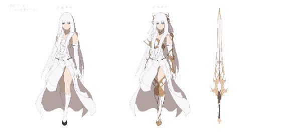
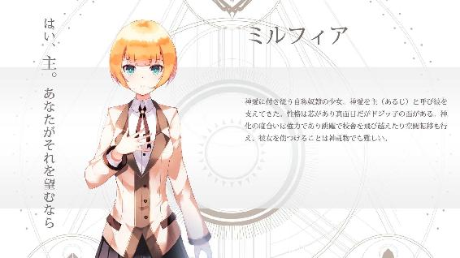
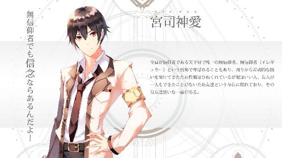
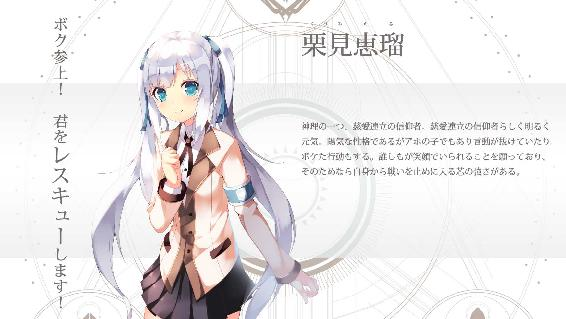
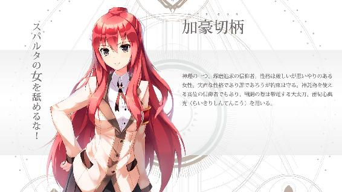
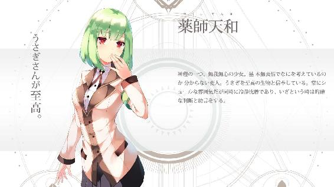

| 天下界の無信仰者（イレギュラー） 4巻 慈愛連立編 | |
| 奏せいや | |
| (2017) | |
天下界の無信仰者 第四巻
---------------------------------------------
奏 せいや








プロローグ
かつて、そう、かつて。
まだこの世界に神がいなかった時代。
奇跡も、神理も、信仰も、なにもなかった時代。
その者たちは現れた、この地上へと。
天の御使い。純白の翼を広げ、神の誕生を告げる者たち。
そして、この地上から争いを無くすため、布教に努めた者たち。
その使命は約二千年の時を経た今もなお達成できていない。
天羽の使命。神の教えを遂行する名誉。
一度も。ただの一度も。栄光は掴むことなく、未練は二千年も続いている。
『なぜだ、なぜだルシフェル？ なぜ我々を裏切った？ なぜ神に逆らう！？』
それはいったいどこで、なにを間違えたのか。
『気づいたんだ』
人を守りたい。
傷ついて欲しくない。
争いを無くしたい。
『人の意思とは、自由だからこそ尊いと』
崇高なるはずだったのに。
誰もが望む願いだったはずなのに。
なのになぜ、それを拒むのか。
『ミカエル。私はもう戦えない』
願いとはなにか？
思いとはなにか？
救済とは、なんだったのか------
＊
サン・ジアイ大聖堂の会議室で目を覚ましたミカエルは、起きるなり呟いた。
「残念だよ」
長いテーブルの上座の席に座り、足を組み両手を合わせていたミカエルは視線を下げたまま口を動かす。
「まったく以て。あれさえなければ、ここまで長引くこともなかっただろう。残念過ぎるよ」
憂鬱な表情は彼にしては珍しい。物寂しげな瞳は虚空を見つめている。
「どうしたミカエル、顔色が悪いようだが？」
そこへ声が掛けられた。見れば同じテーブルの席に赤い髪の同僚が座っていた。
「サリエル」
「くっくっくっく。お前も大変だなぁ」
サリエルはミカエルの様子が愉快なのか笑っている。
「おっと、そう怖い顔すんなよ」
それをミカエルが睨みつけるとサリエルは笑うのを止めた。それでも態度は変わらず楽しそうだった。
「二千年前の使命と名誉、ねえ？ そいつは確かに。大層ご立派な大義だ。だがなあ、二千年前とは状況が変わった。かつては一柱しかいなかった神が今じゃ三つだぜ？ だっていうのに、当初の使命を持ち出すのは筋違いってやつだ」
それは指摘か。それとも単なる悪ふざけか。サリエルは親しい友人にするように悪態をついていく。
「ミカエル。お前の言う使命ってやつはな、もう昔の話だ。終わりだ終わり。いつの話してやがる」
「............」
「この期に及んで使命だ？ ハッ、ちげえな。それはお前の我執だ、やり残した思いを引きずり、未練を晴らしたいっていうだけの」
サリエルは背もたれに体を反らし天井を見上げた。
「ぶっちゃけ、俺はもうどうでもいい。他の連中だってそうだろう。少なくとも、今はな。が、俺はお前を応援してる。じゃなきゃ密告してるぜ、俺の仕事なんでな」
天井に向けていた目を流すようにミカエルへと向けた。
「まったく以て残念だ。天羽を監視する天羽としてあるまじき言葉だね」
「お互い様だろ」
ミカエルからの嫌味を鼻で笑う。
「てめえはてめえの望みを、俺には俺の望みがある。二千年前からな」
二千年前。それは天羽が地上に降り立った時。そこでやり残したことがある。
ミカエルも。
そしてサリエルという男も。
「それまでは目を瞑ってやる。くれぐれも邪魔はすんなよ。『あいつは』、俺の獲物だ」
だが、二人の思惑は同じではない。いわば利害の一致。そのためにサリエルはミカエルに協力しているようだった。ミカエルはなにかをしようとしている。それを知っていながらなにもしないというサリエルの業務違反。そうまでしてサリエルはなにを望むのか。
今度は、それを知っているミカエルが小さく笑う番だった。
「ふん。それほど気がかりだったのか？ お前もずいぶん名誉が好きと見える」
顔を下げくっくっくと笑う。まったくもって笑いが絶えない職場である。
反対にサリエルは意識を鋭くさせた。表情も真剣になっていき、思い描く誰かを睨みつけるようにして言う。
「......ムカつくんだよ。それにだ、お前も見ただろう、『あれ』を」
重い響きで呟かれた声にミカエルも笑い声を止めた。サリエルからの言葉に振り返る。
『あれ』の変わりよう。かつてのあれを知っている者からすれば驚愕だ。
「自分の目を疑ったよ。嘆かわしいにもほどがある、あれが今のやつとわね」
「その通りさ」
二人が思い起こす共通の人物。それに一人は失望し、方や一人は怒りを滾らす。
「今の奴は腑抜けだ、ただ生きてるだけの無能ってのは見てるだけでイライラしてくる」
サリエルは怒りと憎しみで燻った声を漏らした。目は吊り上り、全身から蒸気でも吹き出るほど激怒している。
しかしそれもすぐに抑え、サリエルはさきほどの調子で話しかけた。
「約束は覚えてるなミカエル。てめえの独断独行、報告を遅らせるかわり」
「邪魔はしないさ」
ミカエルは静かに答える。サリエルの思いに応えるように。
納得したのかサリエルがフッと笑う。
そこでサリエルの目が窓に向かった。
「あ？ 騒がしいな」
音はしていない。窓から見える景色にも異変はない。ゆえに並みの信仰者では気づかないだろう。
しかしサリエルは気づいていた。聞こえないものを聞き見えないものを見る。とりわけサリエルは『眼』がいい。視力という意味ではなく別次元の意味で。それでサリエルは『視た』のだ。
教皇宮殿に異変が起きている。戦闘だ。誰かが教皇派と戦っている。そこでサリエルはさらに視た。
「イレギュラー......。おいおい、本丸に殴り込みかよ」
サリエルは立ち上がった。視線は窓の外をじっと見つめている。
「行くのか？」
「様子を見てくる。それにやつも気になる。......分かってる、手は出さねえよ」
ミカエルの忠告を半分くらいにしか聞いていない様子でサリエルはその場から消え去った。
行先は教皇宮殿。
オラクルである彼もまた空間転移を用い一瞬でこの場から消え別の場所へと現れていた。教皇宮殿が見える敷地内、庭にある木の裏だ。そこから宮殿の様子を伺う。
瞬間、ある部屋が気になった。それは彼だからこその勘だ。戦場で戦士が働かせる第六感。これがラファエルなどの裏方専門では分からなかったに違いない。
サリエルはその部屋へと転移する。
そこには二人の少女、加豪と天和がある手紙を読んでいた。
「誰！？」
サリエルの登場に加豪が振り向いた。
「こいつはとんだ見つけ物だ」
しかしサリエルは意に介さない。それよりも注目すべきはその手紙。
同僚が残した、自分たちの秘密。
知られてはならない。今はまだ。
それは計画。
それは陰謀。
それは審判。
彼ら神官長派が動き出す、それは、最後の時なのだから。
「それを渡してもらおうか、お嬢ちゃん」
サリエルは一歩近づいた。同時に腰から拳銃を取り出し、手紙を持つ赤い髪の女の子に突きつける。
「そして、ついでに死んでくれや」
獰猛かつ余裕のある顔。本気だ。サリエルは人殺しだろうと自然に行なえる、そうした者特有の自信に似た雰囲気があった。
その態度に加豪の表情が引きつる。
（この男、強い......！）
初見ではあるが加豪は相手の力量を見定め、それゆえに緊張していた。相手から漂う強者ならではの余裕、それは加豪から見ても強敵だと告げていた。また空間転移をしてきた時点で相手はオラクル。
相手が悪すぎる。このままでは殺される。
加豪とサリエルで睨み合いが一拍続く。瞬間、部屋全体が突然揺れ出した。
「なに！？」
本棚から本が一斉に飛び出した。加豪も天和もなんとか姿勢を支えるが、この揺れの正体が分からない。
だが、この事態にサリエルは加豪以上に苛立ちと困惑を浮かべていた。
「メタトロンだと？ エノクの野郎、誰と戦ってやがる！？」
サリエルには視えている、この揺れがメタトロンの登場によって起きたものだと。
だが分からない。メタトロンを出すほどの敵とはなにか？ あれは世界的に見ても最大の神託物だ、ゴルゴダ共和国が誇る最終兵器と呼んでもいい。パレードを妨害された時にも出したが、あれはいわばパフォーマンスだ。伝統ある教皇誕生祭を妨害する者には容赦しないという周知への見せしめもあった。そのメタトロンを頻繁に登場させては威厳もあったものではない。メタトロンはここぞという時に出すべきものだ。
そのメタトロンが戦っている。
相手は誰だ？ まさかイレギュラー？ あり得ない、メタトロンが出るまでもない。それはパレード戦を見ても明らかだ。
サリエルは一瞬の思考に耽る。困惑が意識にわずかな空白を生んだ。
「天和、今の内よ！」
それが加豪たちの好機になった。この揺れとサリエルの動揺を見逃さず加豪が扉を開け出て行ったのだ。天和もすぐに後を追い部屋を出て行く。
揺れは収まった。逃げ出した二人を追おうとサリエルも扉へと駆け寄ろうとする。
「ちっ！ この------ん？」
そこへ、空間を超え、彼へと宛てた声が聞こえてきた。
「んだよミカエル、今取り込み中だ。ラグエルが手紙を出してやがった」
その声に対してサリエルも応対する。オラクル同士で可能となる遠距離対話によってサン・ジアイ大聖堂にいるミカエルから話を聞いていた。
その内容に、苛立っていたサリエルの表情が笑みに変わっていった。
「ほう......。分かった、回収してラファエルに渡せばいいんだな。わーってるよ。了解だ」
通話を切りサリエルは天井、やや斜めを見上げる。口端を僅かに浮かべ、サリエルは愉悦の表情でつぶやいた。
「ふっ、いよいよだな......」
間もなく、始まりの時が来る。
第一章 神対メタトロン
宙に、一歩を踏み出した。
そこにはなにもない、空が広がるのみだ。建物の屋上が遠い。街を見下ろす高さの宙に足を置く。
すると、そこから黄金の波紋が広がった。空間をうねらせ、歪曲し、触れた建物すら変形させては過ぎ去っていく。一歩を踏み出すごとに、それは鼓動のように起こった。
俺は今、空を歩いている。白衣のロングコートを身に纏い、背後には聖霊となったミルフィアを引き連れて。
黄金が、俺たちを包んでいる。
けれど、俺の心に平穏なんてなかった。高揚も、興奮も、体の底からわき上がる力に歓喜すらしない。
あるのは怒りと悲しみ、それだけだ。
今でもあの瞬間が鮮明に思い出される。
恵瑠の胸に、剣が突き刺さった瞬間を。
『恵瑠......うそだろ......』
その光景に、俺は視界が暗転した気分だった。時間が停止して、心まで動きを止めたようだった。
抱きしめても、返事がこない。
『許さない。お前は絶対に許さないッ』
多大な悲しみと、反する怒りが胸の中で暴れてる。
その元凶へ、俺は歩み寄った。
教皇エノク。その神託物、メタトロン。街を俯瞰するほどの巨体と他を圧倒する力を持つ、世界最大の神託物。
俺はメタトロンの胸元で立ち止まる。そしてやつの顔を見上げた。彫刻の顔がそこにはある。巨大な体はそれだけで威圧感を放ち背後に浮かぶ光輪は神聖な存在であることを見ただけで感じさせる。
強い。なにより大きい。見た目だけでなくその存在感が。
けれど。
今の俺に、感心する余裕なんてなかった。
関係ない。そんなもの、まるで！
「こいよ」
俺はメタトロンを睨み上げる。胸の内にある怒りをぶつけた。
メタトロンは静かに立っている。俺を見下ろし微動だにしない。
けれど、その手が動いた。腕を振り上げ拳を握り込む。
くる。やつが動くだけで遠近感がおかしくなりそうだ。またやつが動くだけで大気が暴れている。強風が生まれ髪とコートの袖が激しく揺れた。
もうすぐでメタトロンの拳がとんでくる。あの質量で向かってくる攻撃だ、直撃すれば即死どころかオーバーキルの一撃だ。
それがやってくる。けれど、そんな時でされ俺の頭の中にあるのは恵瑠の言葉だった。
恵瑠は笑っていた。俺が助けに来てくれたことが嬉しくて。
そして言ってくれたんだ。
今まで辛い時間を過ごしてきて、多くの人に憎まれて。それでもなお、言ってくれたんだ。
『生きててよかった！』
恵瑠が浮かべた笑顔を。そこにあった喜びを。
俺は、思い出していたんだ。
俺は右手を握り込んだ。拳を作り、そこに黄金の光が集まった。
ついにメタトロンが拳を打ち出す。その一撃で城すら粉砕する巨人の攻撃が迫る。目の前を覆うメタトロンの拳は壁と変わらない。
対して。
迎え撃つは、黄金に輝く神拳。
二つの拳がぶつかった。
衝突に爆風が生まれる。周囲へ広がっていく衝撃波は建物の窓をぶち破る。
「うおおおおお！」
押し寄せる力に魂で叫んだ。心が暴れてる。こいつを、絶対に許すなと！
直後、メタトロンの体が吹き飛んだ！
全長百メートルもある巨体が数キロメートルも飛んでいき大地に倒れ込む。地震を思わせる轟音を響かせて、最大の神託物、メタトロンが倒れた。。
宙に立っているのは、俺とミルフィアだ。
メタトロンの上体が起き上がる。俺を見ると体が一瞬で光となり姿を消すと、すぐに同じ場所に、立っている姿勢で現れた。
メタトロンがゆっくりと歩いてくる。街の建物がジオラマみたいだ。それにメタトロンの雰囲気が変わった。さきほどまでの山のような偉大だが静かな存在感じゃない。自ら動いていく気配を感じる。
どうやら今ので本気になったようだな。
だが上等だ。手加減なんて許さない。こいつは全力で、倒さないと気が済まない。
メタトロンが大通りを一歩一歩近づいてくる。距離がまだ遠い。徐々に近づいてくる様は勝負のカウントダウンだ。
俺は睨んで近づいてくるメタトロンを見ていたが、そこでメタトロンの姿が消えた。
「な！？」
直後、腕を振りかぶった状態で俺の前に現れた。
「く！」
そのままメタトロンが殴りかかってきた。突然の攻撃に防御もとれず直撃する。
今度は俺が吹き飛ぶ番だった。まともに攻撃を受けた俺はそのまま吹き飛んでいき背後にある教皇宮殿にぶつかった。それでも止まらず俺の体は教皇宮殿を貫通しその後のビル、さらにもう一つのビルも貫通していった。その次の建物に背中からぶつかりようやく停止する。
『主！？』
ミルフィアが心配そうに俺の顔をのぞき込んでくる。今のミルフィアは黄金の粒子が形作った半透明で上半身しか映っていない。
「くっ」
壁にめり込んだ腕を引き離す。表情が歪む。ふざけた話だ、今のが通常攻撃だっていうのかよ。
そこへ再びメタトロンが空間転移で現れた。壁に埋もれている俺を建物ごと蹴り上げる。
「があ！」
ビルは跡形もなく吹き飛び残骸と一緒に宙に放り出される。そこへさらに拳をたたき込まれた。上に飛んだ体が今度は地面と平行に飛んでいく。
メタトロンは空間転移で俺の進行先で待ち構えており、今度はアッパーで上空に殴られた。俺は雲を突き抜けるがそこでも待ち構えていたメタトロンに両手で組んだ拳を振り下ろされる。
「があああああ！」
もうどっちが上か下なんて次元じゃない。気づいた時には場所が違うんだ。街の中かと思っていたらすでに空の上。そして今は街の地面に突き刺さろうとしている。
圧倒的な力と空間すら超越した連続攻撃。
その最後。トドメを刺すべくメタトロンは地面に先回りし、両手で俺を挟み撃ちしてきた。隙間がない。左右から逃げ場のない手のひらに挟まれ体が押しつぶされる。
両手を叩きつけた後もメタトロンは力を緩まない。確実に俺を潰そうとしている。
その両手が、僅かに動く。
メタトロンは声を出さないが驚いただろう。まるで虫を潰すように叩いた両手が、開いていく。
「おい」
俺は両腕を広げメタトロンの両手を押し返していた。重い扉を開けるように両腕に力を込める。
「調子に乗るなよ」
一旦力をタメ、俺は思いっきりメタトロンの両手をどかした。
それによりメタトロンの体勢が崩れ数歩下がる。そこへ殴り込む。メタトロンの顔面を殴り後退させるとさらに追い打ちをかけていく。殴る。殴る。そのたびにメタトロンの体が後ろに下がっていく。俺は大きく振りかぶった拳をたたき込んだ。
メタトロンの足が地面を引きずっていく。体勢も乱れている、チャンスだ。
「ミルフィア！」
俺は背後の彼女へ叫んだ。
『はい！』
俺からの呼びかけにミルフィアも気合いの入った声で答えてくれる。
「メタトロンを、弾圧しろ！」
彼女の持つ力、その一つを命令する。
『我が主、あなたがそれを望むなら！』
俺からの命をミルフィアは実行する。
全長百メートルもあるメタトロン。しかしこの瞬間、ミルフィアはそれを上回るほどに巨大化した。メタトロンの三倍はあるだろうか。巨人を超えた、巨神とも言うべき大きさだ。
そのミルフィアが腕を振り上げる。全身が黄金の彼女がその拳をメタトロンめがけ振り下ろす！
拳はメタトロンを押しつぶした。女神の一撃は大地をも揺らし巻き上がる土煙は街を瞬く間に飲み込んでいく。
攻撃を終えミルフィアは元の大きさに戻っていった。俺は宙からメタトロンがいた場所を見下ろしている。
煙が晴れていく。そこには腕を負傷したのか、片腕を支えて立つメタトロンの姿があった。
その様を無感情に見つめる。あれを食らって立っているこいつがすごいのか、メタトロンを一撃でここまで追いやったミルフィアがすごいのか。
だがそんなことはどうでもいい。
俺はまだ、殴り足りていない！
「お前は許さない」
メタトロンは強い。最大の神託物というだけあってその力は神にも等しい。
だが強いのはお前だけじゃない。
憑依形態。
俺とミルフィアが一体となった本来の力。
これなら勝てる。負ける気なんてしない！
なにより、恵瑠にしたことを許さない。
「さあ、いくぞ！」
リベンジだ。今度こそ叩きのめす！
俺はメタトロンに駆け寄った。全身で空気の壁を突破する。超スピードのままメタトロンに近づき、顔面を殴りつけた。
「はあ！」
メタトロンがのけ反る。以前の戦いではミルフィアの攻撃を受けてびくともしなかった巨体が背中を曲げていた。
だが終わらない。俺は腹部まで空間転移するとその腹を殴りつけた。
「ワン・トュー！」
左拳を当てた後全力の右ストレートをぶち込む。このほどの巨体、殴るほど接近すればでかい壁だ。体のどの部位かなんてここからでは分からない。
だが、目の前の壁が後退した。大地に立つ両足が引きずられ、地割れのような跡を地面に残していく。
俺はさらに叩き込んだ。
「ワン・トュー！ ワン・トュー！ ワン・トュー！ ワン・トュー！！」
何度も、何度も何度も何度も！ 思いを拳に乗せて、何度も殴りつける。
その度に加速を付けながらメタトロンは後退していった。町はめちゃくちゃだ、メタトロンとの衝突にいくつもの建物が倒壊していく。
『ありがとう、神愛君』
俺に堕天羽だと告げた時、恵瑠はどこか諦めていた。だけど俺が友達だと言うと、あいつは喜んだ。涙を流すほど、喜んでいたんだ！
「バスタァアー！」
振り被り黄金に輝く渾身の一撃を打ち込む。
メタトロンが吹き飛んだ。足が地面から離れ宙を飛び、地面に倒れたのだ。
轟音が辺りに響く。漂う白煙にメタトロンの姿が見えなくなる。俺はメタトロンが倒れた場所を上空から見下ろしていた。
瞬間、白煙を切り裂きメタトロンが走り出してきた。走る足が大地に立つたび地面を破壊して、メタトロンは助走をつけ殴りつけてきたのだ。
その破壊力、さっきのとは比べものにならない。ただでさえ重い拳に速度までつけば威力は倍以上だ。
拳が迫る。はじめは拳と分かるそれがすぐに壁となり視界を覆う。その迫力、まるで隕石でも衝突するかのようだ。
だが、その拳が俺に届くことはなかった。
『主は傷つけさせません！』
俺の背後に控えるミルフィアが手を伸ばした。
その後、俺の正面、そこに漂う粒子が何枚もの壁を形作ったのだ。妨害の一つとしてメタトロンの攻撃を阻もうとする。
メタトロンの拳と黄金の壁がぶつかった。一枚、二枚といくつもの壁があっけなく砕け散るが、残りの壁で拳が止まった。拳と壁ではげしい火花が散っている。
そこへ、俺は壁ごと拳を殴りつけてやった。
再びメタトロンの体勢が崩れる。
「うおおお！」
俺はメタトロンの顔面へと直進する。
対してメタトロンは両手を前に構え始めた。腕を交えガードしようとするが、そんなことは許さない。
「させるか！」
メタトロンの両側に大量の黄金の粒子が現れる。それは鎖のように伸びメタトロンの両手首に絡まった。黄金が縄のように巻き付き、外へと引っ張ったのだ。それによりガードがこじ開けられる。メタトロンも抵抗するが隙間ができた。
その合間を潜り抜け、俺は顔面を左右のフックで何度も殴りつけた。
「なにが正義だ、なにが人助けだ！？ 御託並べて人殺し正当化してんじゃねえぞ------」
最後にアッパーを打ち込んでやる！
「ボウシィット！」
メタトロンが浮かび上がる。やつの身長の半分くらいまで浮いている。
メタトロンを浮いている最中に、俺は空間転移を繰り返し、縦横無尽、あらゆる場所から拳を打ち付けた。その衝撃にメタトロンの巨体が踊るように動いていく。
「おらぁ！」
俺はメタトロンの頭上にまで一気にワープすると、拳を打ち下ろした。
メタトロンが今度は地面へと落ちる。俺は高度を落とし百メートルほどで停止した。相手は沈黙している。その隙に俺は自分の両手を見つめてみた。
すごい。自分でも信じられないくらいだ。あのメタトロンを圧倒している。以前はこっちがぼろぼろだったのに。なのに、今では吹き飛ばし、叩きのめしている。
これが、憑依形態の力か。
『主』
すると背後からミルフィアが話しかけてきた。
『油断はなりません。相手はメタトロン。これで終わる相手ではありません』
「ああ、分かってるさ」
油断なんていない。手加減もしない。
全力で、こいつを叩き潰すだけだ！
メタトロンが起き上がる。その威容はいつ見てもすごい。周囲の建物や塔も高いはずだが、やつがいるとよくできた箱庭みたいだ。それほどまでにやつは大きい。
そのメタトロンが近くにあった建物を片手で掴んだ。なにをするかと思えば、それを引き抜いたのだ。
「ッ！？」
二十メートル近い建物を持ち上げ、それを投げつけてきたのだ。
「そうくるかよッ」
単純ながらも絶大な砲撃がせまる。これだけで街を粉砕できる威力はある。
俺は妨害を発動し迫る建物を黄金で包んだ。それにより減速し始める。
そして黄金のオーラで掴むようにして建物を制御すると、俺は一回転し、建物を投げ返した！
遠心力によって速度が上がった建物がメタトロンに向かう。
建物は直撃。メタトロンに衝突したことにより砕け散りメタトロンは再び地面に倒れた。
だがすぐに立ち上がる。ダメージはでかいはずだがそんな素振りは見られない。
メタトロンがゆっくりと歩いてくる。足が地面を踏むたび巨大な音が響く。
俺もゆっくりと歩くようにして空中を進んで行った。その間、メタトロンから片時も目を放さず睨みつける。
そしてメタトロンの間合いに入った時、メタトロンは構えた。腰を落とし拳を腰付近に添える。
俺も構えた。拳を握り締め、黄金の粒子が拳に集まる。拳は黄金に包まれる。
そして、互いに拳を打ち出した。
俺とメタトロンの拳がぶつかる。音は衝撃となって広がった。黄金は衝撃に散らばった。まるで超大型の爆弾でも爆発したかのように、空気が壁となって街を襲撃する。
激しい威力を覚えるが、俺は退いておらず、メタトロンも両足が地面を打ち抜くが退いてはいない。
俺たちは拳をぶつけ合った。二撃目で無理なら三撃目。それでも駄目なら四撃目。次々に拳を打ち出した。その度に轟音と激しい衝撃が吹き荒れる。
激突に次ぐ激突。それに耐えきれなくなったのは俺たちよりも街の方だった。俺たちの激闘は余波だけで街を壊滅状態へと追いやっていく。
「おらよ！」
拳をぶつけ合い、ついにメタトロンの体勢が崩れた。押し返され数歩後退する。
すると身近にあった建物を再び手に取った。さきほどよりも大きい。三十メートルはあろうかという建物を持ち上げ、投げつけてきた！
とてつもない重量が猛スピードで迫る。
『うん。神愛君のおかげで大丈夫です！』
俺は黄金のオーラで建物を包み捕まえると、俺を軸にして回転し投げつける！
だが、今度はメタトロンも受け止めた。さらに加速をつけ投げ返してくる！
さらにそれを受け止め投げつける！
メタトロンも投げつける！
両者の間で建物を使ってキャッチボール状態だ。建物の速度はどんどんと増していきタイミングを誤れば直撃する。
『ずっと、一緒ですからね？』
「うをおおおおおおお！」
俺は投げつけた。それはメタトロンに直撃！ メタトロンは今までにない吹っ飛び方をして地面を転がっていった。辺りを破壊していきながら勢いが止まる。
決まったか？
そう思いながら見つめているとメタトロンが動き始めた。
メタトロンは足で立つのではなく、浮遊し始めた。それにより体勢を立たせる。どんどん上昇していき俺は再び見上げた。
メタトロンが片手を上げる。同時に周囲の建物が揺れ出した。なんだ？ 建物が微動していると、なんとメタトロンのように浮かび始めた。
「なに？」
芸術的なデザインをされたいくつもの建物が一斉に浮かび上がる。メタトロンの背後に位置すると、底を俺に向けてきた。
数は十個か？ 掴んで投げてては追いつかない。
「ミルフィア！」
俺は叫んだ。俺の意図を汲んでくれたのかミルフィアが応じる。
『はい、主！』
黄金色のミルフィアは大声で答えると、背後にいくつもの魔法陣が浮かび上がった。どれもでかい。それも一瞬で作り出す。
メタトロンが腕を下ろした。それにより建物の群衆がすべて射出される。
同時に、対抗するミルフィアの砲撃が火を噴いた。
黄金に輝く光線がビルを迎撃する。いくつもの爆発が空中で起こり、破片と成り果てた建物が地上へと降り注ぐ。
「これで終わったと思うなよ！」
建物がすべて壊れた隙、俺は右腕を振った。
「止まれ------」
俺は王金調律の妨害を発動する。黄金の波紋が空間を走り抜けた。
俺が妨害する対象、それは時間そのもの。時間軸に干渉し、時計の針の動きを妨害し、動きを停止させる！
時がとまった。
空中を飛び散る建物の破片、それが空間に固定されたまま動かない。他にもすべての物が動きを停止した。
俺は空中を走った。いくつもの破片を掻い潜り、メタトロンへと走っていく。
だが、メタトロンは動いていた。制止した時間の流れでさえ腕を振り上げている。さすがといべきか。そもそも神徒の神託物が四次元に縛られるわけがない。
すぐさま妨害が働きメタトロンを縛り上げる。時間停止が利かないのなら妨害するまでだ。行動不能に貶め自由を奪う。
が。
「なに？」
メタトロンは、黄金の束縛を引きちぎった。止まった時間の中でさえ、さらに妨害まで振り切ってきたのだ。そこで俺はハッとした。
まさか、これが全力？ 今まで手加減していたのか？ そうでなければおかしい。妨害すら弾き飛ばすなんて。
「化け物が......！」
時間を止め妨害まで発動したので油断していた。無警戒に直進し過ぎた。その隙を突きメタトロンは拳を振り上げ俺を殴りつけてきた。体が一瞬で雲を突き破る。さらにメタトロンは宙を飛び俺に追撃してきた。上へ。上へ。何度も殴りつけ俺の体は大気圏を抜け宇宙にまで放り出されていた。そのままの勢いで暗闇の空間へと走っていく。
するとメタトロンは姿を消した。そして現れた先はここよりも遥か彼方の場所だった。
いったい何光年先の宇宙だろうか。遠すぎて見ることもできない暗黒へとメタトロンは現れる。そんなところまでワープしてもなにもできないはず。行き過ぎだ。
だが違う。メタトロンにはここまで離れなければならない理由があった。
メタトロンは、巨大化していった。ただでさえ巨体だというのにその体がさらにでかくなっていく。その大きさに見る者がいれば衝撃を通り越して放心しただろう。
その規模はまさに宇宙クラスだった。
頭が太陽系を抜けた。体が銀河を超えた。巨大化に伴い周囲の星々を爆散させて、それでもなおその神秘は巨大化する。
その神化が、ようやく止まった。
全長、六十億光年。まさに神話の存在だ。巨大なんてものじゃない。宇宙の一部と言っても過言じゃない。暗黒の中で立つ純白の体は世界に降り立った神聖な光体。光輪がどの星よりも宇宙を照らしている。
めちゃくちゃだ。巨神。そうとしか言いようがない。銀河すら飛び越えて、この大きさを表現する言葉すら浮かばない。
そのメタトロンが腕を伸ばした。それにより宇宙に漂う星々が手の平にぶつかり消滅していった。人が動けば微細な風の流れが生まれるように、今のメタトロンが動けば星が壊れる。木星の十倍はある惑星が粉砕し、太陽の百倍はある恒星が塵と消えた。
その巨大すぎる手に俺は飲み込まれていった。その指が閉じられメタトロンに捕まる。
このままじゃまずい！ 握りつぶされる。すぐさま空間転移で脱出しようとするが------
「くそ！」
出来ない！ メタトロンは次元を超越している。その手に包まれるということは空間、時間、平行世界への繋がりをシャットアウトされているようなものだ。逃げられない！
メタトロンは俺を掴んだまま手を持ち上げた。自分の顔の前に持ってくる。そこで、ありったけの力を込めて拳を握り込んできた。
「うおおおおおお！」
俺は強化と妨害、黄金を爆発させ衝撃に備える。
そこで、メタトロンの手が完全に掌握された。
瞬間、光がすべてを飲み込んだ。
爆発が起こった。あらゆるものを破壊し、創造の礎になるほどの爆発だった。手の平が掬った数千を超える星を一度に圧縮し、爆散させたのだ。これに比べれば超新星爆発ですら風船が割れたようなものだ。あらゆる質量はエネルギーに変換され消滅する。
メタトロンは手の平を開いた。手の平にはガス状となったチリや星屑が漂っている。それらを振り払うように腕を動かす。
ここにはなにもない。宇宙を彩る星々の輝きはなくなりメタトロンの背中から発せられる光だけが広大な闇を照らしていた。
神聖な白が、世界を塗りつぶしていく。
だが、その光の中で一粒の黄金が灯った。
『主は傷つけさせません』
純白に対する黄金の光。それがみるみると広がっていく。
『私のすべてにかけて！』
俺は、まだここにいる！ ミルフィアと共に！
ミルフィアが片腕を振るう。俺も片腕を横に切った。俺は一人じゃない。デュエット・モードはミルフィアとの二人一組だ。一人では絶対に耐えられなかったが、彼女が守ってくれた。
この極限での闘いだからこそ分かる。
メタトロン。お前は強い。その力は本物だ。
だが、負けるわけにはいかないんだ！
「ミルフィア！ 我が理を布教せよ！」
俺は叫んだ。敵は強い。今まで戦ってきた誰よりも。
しかし、いくら強くても弱体化させてしまえば意味はない。
『我が主、あなたの命ずるままに！』
ミルフィアの指が天を差した。
瞬間、俺たちの上空に黄金の輪が現れた。それは広がりこの宇宙を覆っていく。いくつもの輪が波のようにして広がっていった。
だがメタトロンの全長はもう説明するのが馬鹿馬鹿しくなるくらい巨大だ。光速で動いても六十億年かかるとか意味が分からない。そんな相手にミルフィアがどれだけ布教しても届かない。
そう、普通なら。どれだけ早く黄金の輪が広がろうがメタトロンを弱体化させるのは物理的に不可能だ。
だが、しかし、だとしても！
理屈なんてない。理論なんてない。そんなの関係ない！
神理が物理を凌駕する！
ミルフィアが発した黄金の輪はメタトロンの頭上に展開されていた。光速を超えた展開速度だが、そもそも物理法則というものは神理の下位法則。神が当たり前にいる天下界では通用しない。
布教の光が頭上に展開されたことによりメタトロンは弱体化していった。動きが鈍り、体が小さくなっていく。その大きさが全長百メートル、元の大きさまで戻っていた。そこへ再び集まった妨害の光に今度こそ縛られる。
俺はメタトロンの腹部を殴りつけ、次に拳を大振りで振り上げた。
「ワン・トュー！ バス、タァアアア！」
巨体が持ち上がる。その軌跡には黄金の粒子が滝のように流れていた。
メタトロンはうつ伏せの状態で三百メートルほどまで飛んでいった。全身は黄金のオーラに包まれ身動きが取れない。
俺は右手を上に掲げた。手の平を中心に五百メートルを超える魔法陣を描く。
魔法陣にエネルギーが溜まっていく。時間が停止している今、他者から見れば一瞬の出来事だが、体感では五秒くらいを要して充填が完了する。魔法陣はそれ自体が輝きを宿し、中央へと力をまとめ上げた。
標的はメタトロン。出力最大。いつでも撃てる！
その際、恵瑠の顔が浮かんだ。
『神愛君......こんなの、いやだよ......』
「くたばれぇえええ！」
俺は魔法陣のエネルギーを放射した。
魔法陣から直径で百メートル級の光線が宇宙の闇を切り裂いていく。まる神の雷のように。膨大な力の奔流にメタトロンの全身が呑み込まれる。
「------------」
轟音が鳴り響き耳をつんざいている。叫び声も放射の反動にかき消され聞こえない。
空間が爆ぜる。世界が揺れる。時間が歪曲しそうだ。
それほどの大破壊力。それをメタトロンは一身に受けている。防御も回避も妨害で封じ、やつのすべてを弾圧する！
ついに、黄金光線がメタトロンを突き抜けた。光線は宇宙の彼方まで突き進み、出力が切れると消えていった。
俺は宇宙を見上げる。残留した黄金の粒子が空間に漂っている。ここら辺一帯が黄金で充満していた。
そこには、バラバラとなったメタトロンの欠片も漂っていた。
メタトロンは砕け散った。最大の砲撃を受けその身を散らしたのだ。
勝った。
この勝負に、メタトロンに、俺は勝利していた。
「............」
俺は見上げていた。静かに。黄金が漂う荘厳なまでの光景を。
『終わりましたね、主』
「......ああ、そうだな」
ミルフィアの声にそれだけ答え、俺は敵のいない宙をずっと見つめていた。
第二章 希望と代償
俺は宇宙から空間転移で教皇宮殿へと戻った。穴の空いた壁から中へと入る。床に足を付けたタイミングで憑依形態を解いた。服は元に戻りミルフィアが目の前に現れる。
「......主？」
ミルフィアが心配そうに俺の顔を覗き込んできた。
勝利した。そう、俺たちはあのメタトロンに勝ったんだ。それはすごいことだし喜ばしいことだ。
でも。
「............」
それを喜ぶことは出来なかった。
「俺は......」
だって、もう、恵瑠はいないんだ。
「守れなかった......！」
右手を握り締めた。
敵を倒しても、それで恵瑠が目覚めることはない。怒りをどれだけ発散しても、後には悲しみが覆ってくる。
俺は泣きそうだった。そんな俺をミルフィアは寂しそうに見つめていた。
「神愛！ ミルフィア！」
そこへ声がかけられた。見れば扉から加豪と天和が入ってきており、俺たちの元まで走ってきた。
「神愛、あんた無事なの？ さっきまであのばかデカイ神託物がいたはずだけど、あんたが戦ってたんじゃないの？」
加豪が俺を心配してくる。怪我がないか俺の体を見ているようだった。
「......勝ったよ」
その問いに小さく答える。勝利したにしては抑揚のない声で。俺は俯きながら加豪に答えた。
それで不審に思ったんだろう。最初はホッとした加豪だがすぐに怪訝そうな表情になると、慎重に聞いてきた。
「ねえ、恵瑠はどうしたの？」
その質問が、胸をえぐる。
「恵瑠は......」
答えるのも痛いくらいに、その事実は俺を痛めつける。
「ごめん......。守れなかった」
「え......」
加豪の表情がハッとする。天和は声を出さなかったが少しだけ目を細めた。
「殺された、目の前で......。ごめん！ すまなかった！」
二人を前に、俺は俯いた。涙を流して謝った。
助けてみせるって大声で言って、必ず救ってみせるって誓っていたのに。
なのに、守れなかった。最低だ。最低の嘘つきだ。みんなを騙し、恵瑠を救えなかったなんて！
「殺されたって......」
加豪が戸惑っている。恵瑠が死んだということがショックなんだろう。当然だ、こんなこと言われて驚かない方がおかしい。
しかし、次の加豪の一言に俺が驚いた。
「でも、恵瑠はどこにもいないわよ？」
「え？」
加豪の言葉にポカンとなる。言っている意味が咄嗟に分からなかった。
「そんな！？ たしかにここに置いたはず」
俺は走った。装置である台の頂上まで階段を駆け上がり、そこにいるはずの恵瑠を探す。
だが、そこに恵瑠はいなかった。血痕だけを残して、肝心の恵瑠が消えていた。
「なぜ、どうして恵瑠がいない！？」
俺は平常心を失っていて冷静に頭が働かない。
「神愛、それは後。まずはここから出ましょう。恵瑠はきっと、誰かが運んだんだと思う」
「......そうだな」
そんな俺に加豪が落ち着いた声で言ってくれて、俺もパニくっていたのが落ち着いた。
意気消沈しながら台を下りる。早くここから出ないといけないのに足が重い。走れば足がもたれ転びそうだった。
俺たちは扉を潜る。しかし、そこにはすでに騎士たちが列をなして俺たちを待ち構えていた。そこにはペテロと、入口前にいた髭を生やした騎士が立っていた。
「やってくれたな」
「ふん、こやつら」
見れば二人ともダメージがあるのか辛そうだ。ペテロは俺がやったが、隣の男もヨハネ先生と戦った後なんだろう。ここにいるということはヨハネ先生は負けたのか？
辛そうなのが見て分かるが二人とも気合でそれを補い立っている。さすがは聖騎士に選ばれるだけの信仰者というわけか。
二人からの油断のない鋭い視線にミルフィアたちが構える。
そんな中、俺はただ茫然と立ち尽くしていた。
「このやり取りも何度もしてきた。問答はせん。いくぞ」
ペテロが剣を抜く。それに倣って他の騎士たちも武器を構えてきた。
「提案がある」
「なに？」
そんなやる気満々の相手に、俺は沈んだ声で話しかけていた。ペテロが俺を睨む。
だけど、俺には睨み返すほどの気力はなかった。
「降伏する」
俺の一言に周りがざわつく。意外な提案にペテロを除いた騎士たちが動揺し始め、ミルフィアや加豪も驚いていた。
「主！？」
「神愛、あんたなに言ってんのよ？」
二人から聞かれるが俺は振り返らない。
「正気か？」
「ただし条件がある。こいつらは見逃してやってくれ。俺に無理やりつき合わされただけなんだ」
俺はペテロをまっすぐと見つめた。静かだが空気が張り詰める。
「これだけのことをしておき、見逃すということは出来ん」
「ならここでまた暴れようか？ 次はどんな被害が出るのか予想してみろよ」
「............」
ペテロが黙る。表情はそのままに思案しているようだった。
「判断するのは司法庁だ、私からはなにも言えん。ただし減刑するよう口添えはする」
「ここで見逃せ。そして追手も出すな。それが条件だ！」
叫んだ。守れなかったという負い目からか、声に熱が籠る。
「俺に付き合ってくれた。せめてこいつらだけでも助けないと、俺は駄目なんだよ！」
恵瑠を救えなかった。そのためにここまで来たのに。なら、こいつらまで守れなかったらなんのために頑張ってきたんだ。絶対に譲れない。こいつらだけでも、守り通さないと！
「聞けないなら、てめえらと死ぬまで戦ってやる！」
俺が囮になって戦い続ければ、その隙に逃げられる。たとえ俺が死のうが、それでこいつらが助かる可能性があるなら、俺はそれでいい！
「止めてください主！」
ミルフィアが慌てて駆け寄ってきた。表情は張り詰めていてきれいな瞳は心配そうに俺を見ていた。俺を見上げ抗議してくる。
「こんなことは止めてください！ 私はなにがあっても主の傍を離れません。主一人が責任を持つなど、私は望んでいません！」
「下がってろ！」
「しかし！」
俺は憑りつかれたように守ることに躍起になっていた。それしか見えず、それしか考えられなかった。もう、自暴自棄になっていたのかもしれない。
そんな時だった。加豪が早足で俺に近づくと、平手打ちしてきたのだ。
バチン、と大きな音が響く。突然のことに俺は痛みよりも茫然としてしまって、他の連中も茫然としていた。
そんな中、加豪はペテロたちに振り向いた。
「全員よ」
一言が、重く呟かれる。
「ここにいる全員捕まえなさい」
「お前！」
俺の努力を無駄にする発言に怒鳴るが、加豪は俺ではなくミルフィアと天和に振り向いた。
「ごめんなさいね、ミルフィア。天和も」
「いえ」
「別に、私は構わないわよ」
「お前ら......」
加豪の言葉に、けれどミルフィアと天和は反対しなかった。むしろ納得したように答えていた。
「神愛」
そこで、加豪が最後に俺を見てきた。
「まったく......。どうせここで逃げ切れてもずっと追われる身だし、いつか捕まるに決まってるでしょ。それならここで投降して減刑狙う方がまだいいわよ。てか、かっこつけすぎよ馬鹿。前にも言ったでしょ」
加豪は俺に正面を向けると、両腕を組んで言ってきた。
「あんた一人が犠牲にならないと守れないほど、私たちが弱いって、そう思ってんの？」
それは鋭かった。でも、どこか優しい言い方だった。
「私たちは自分の意思であんたと一緒にここに来たの。それをあんた一人の意思にしないでよね。失礼よ、神愛。気持ちは嬉しいけどね」
最後には小さく笑って加豪は言った。でも、すぐに寂しそうな表情になる。
「残念だけど、私たちの戦いはもう終わったのよ、神愛」
そう言われた時、俺は力なく俯いた。
なにも言えなかった。
恵瑠を救うための戦い。だけど、その恵瑠がいなくなってしまった今、俺たちの戦いは終わったんだ。
冷静になればなるほど打ちのめされる。
どうしようもならない現実に、俺は握っていた拳を解いた。
「......連行する」
ペテロが言った。その言葉に背後に控えていた騎士たちが動き出し俺たちを囲った。
「歩け！」
騎士に小突かれ歩き出す。先頭と最後尾にペテロともう一人の聖騎士が並んで歩いていった。
進んで行く先はここよりも上、最上階のフロアだった。
白い廊下を歩いた先には大きな扉があり、そこを開けば広い部屋に大勢の騎士が並んでいた。敵を見る目で重苦しい空気に包まれている。天井はドーム状であり何枚ものステンドグラスが飾られている。奥の壁はガラス壁となっており日の光が差し込んでいた。部屋というよりも会場のような場所だ。ガラス壁の前は階段のような段差になっており一番上には背もたれが二メートルもある豪華な椅子がある。
俺たちは奥の椅子の前にまで連れて来られた。豪勢なイスだが、そこには誰も座っていなかった。
「エノク様は？」
ペテロがすでにいた騎士に聞く。
「現在はおやすみになられています」
「そうか」
ここには本来エノクがいるはずだったのか。まあ、察しはつくが。
すると周りはどこかざわつき始め、俺を複雑な目で見つめてきた。
「こいつが」「なんてことだ」「あのメタトロンを......」
どうやら俺がメタトロンを倒したことに驚いているらしい。それもそうか、メタトロンの強さは戦った俺が一番知ってる。それが倒されたとなれば動揺はあるか。もしくはイレギュラーとして敵視してくる。
けれど、どうでもよかった。
「ずいぶんと暴れてくれたな小僧」
俺に近づき声をかけてきたのはヨハネ先生と一緒にいた髭だった。怒気と蔑む目を露わに俺を見下ろしてきた。
「お前のせいでとんだ被害だ。パレードは中止、おまけに何人の騎士がやられたと思ってやがる！？」
「............」
耳元で怒鳴られるが俺は黙って聞いていた。
「しかし、そんなお前もこうして捕まったわけだ。いい気味だな。脅威である天羽ウリエルも亡くなりようやく安泰というわけだ」
挑発のつもりかわざとらしく言ってくる。でも、俺からどうこうするつもりはなかった。
「ちょっと待って下さい！」
意外にも声を出したのは加豪だった。俺の背後から声が上がり、俺だけでなく皆の視線が集まる。
「なんだ娘、お前は黙ってろ」
髭の騎士があしらおうとするが加豪は退かなかった。
「あなたたちが恵瑠を狙っていたのは単に彼女がウリエルだったからじゃない。本当の狙いは、『ヘブンズ・ゲート』の阻止だったんじゃないんですか！？」
ヘブンズ・ゲート？
聞き慣れない言葉に眉根が寄る。加豪は必死な表情で言っているが、それはそんなに重要なことなのか？
俺は分からなかったが、周囲からはどよめいた声が聞こえてきた。
「なぜお前がそれを知っている！？」
髭が加豪に近づく。えらく焦った形相で加豪を問い詰めるている。そこへ話に参加していなかったペテロが口を開いた。
「......手紙を読んだのか」
「ええ」
ペテロのつぶやきに加豪は小さく、そして力強く応えた。
「手紙にはこう書かれてた。神官長派の高官たちが、二千年前の再現、天羽降臨を目指しているって！」
「天羽降臨？」
「こうしている場合じゃないわ！ なんとかしてそれを阻止しないと、今回の騒ぎどころじゃない。世界的な危機よ！？」
加豪がここにいる全員へと向け叫んでいる。その表情はただ事ではないと伝わってきた。
皆がざわついている。俺の隣にいるミルフィアも思案顔でつぶやいていた。
「天羽降臨......」
「ミルフィア、どういうことだよ？」
「それは......」
ミルフィアは俺を見るが、その顔は半信半疑といった感じだった。
ぽつりとミルフィアが話し始める。
「天羽降臨。それは実際に二千年前に起きた出来事です。一般的に天羽の降臨は神の誕生、信仰による時代の始まりを告げる吉報として知られています。ですが、正確には人類に対して侵攻してきた歴史があるのです。ですが、当時の天羽長ルシファーの裏切りにより天羽軍は二分され、最終的にはルシファーの間で協定が結ばれました」
「協定？」
「はい」
ミルフィアは頷いた。
「天羽は人間たちに手を出さず、また天羽のいる天界と天下界を繋ぐ扉、ヘブンズ・ゲートを閉じること。そして、ルシファーはその身を差し出し処刑されることです。こうして天界紛争は終結し、多くの天羽は天下界を去りヘブンズ・ゲートは閉じられました」
「その通りだ」
聖騎士としてペテロも詳しいのだろう、話を聞いていたペテロがミルフィアの話を引き継いだ。
「ヘブンズ・ゲートは閉じられた。一部の天羽は天下界に居残ったようだが」
「それって、まさか」
いや、ここまでくればまさかもないだろう。恵瑠が天羽であり、そして恵瑠と親しかった連中といえば、
「神官長派の高官たちだ」
国務長官のガブリエル、国防長官ラファエル、そして神官長ミカエル。あの三人も天羽だったのか。
どうりで。本来恵瑠と接点のあるはずがない政府関係者の高官と仲が良かったのは仲間だったからか。
「天羽のやり方は強引だった。だが、そうした経緯があるにしても我らと天羽は同じ慈愛連立。その後は協力して取り組んできた。それ以降ヘブンズ・ゲートが開かれたことも天羽による侵攻も起きてはいない」
ペテロは厳めしい態度のまま語っていく。昔はいろいろあったもののミカエルたち天羽とゴルゴダ共和国は協力関係を結んでいたわけか。
「だけどさ、それがどうして今さら天羽降臨なんてしようとするんだ？」
天羽は二千年も動きを見せていなかった。にも関わらずヘブンズ・ゲートを開き天羽を出現させようとする目的はなんだ？
「それは分からん。だが、これは明らかなルシファー協定の違反だ。おそらくミカエルの独断だろう。それはラグエルが我々へと宛てた手紙だ。彼も天羽の一人であったが、ミカエルの考えに賛同できず我々に危険が迫っていることを知らせてくれた。手紙には今回のこととミカエルが主導していることが書かれている」
ペテロの目が加豪に向けられる。見れば加豪はポケットから取り出したのか手紙を握っていた。
「だが、閉じられたヘブンズ・ゲートを開くには四大天羽と呼ばれる四人の天羽による承認が必要だ。その一人が」
「恵瑠か......」
ペテロが言う前に俺は呟いていた。こいつらが必死になってまで探していた恵瑠。あえてウリエルと言うが、彼女こそヘブンズ・ゲートを開くために必要な四大天羽の一人だったんだ。
「そう、栗見恵瑠。正確にはウリエルだったわけだ。だが彼女は堕天羽となり四大天羽でありながらヘブンズ・ゲートの鍵としての資格を失った。ヘブンズ・ゲートを開けるには彼女を天羽として復権させる必要があったわけだ。その方法はラグエルも知らず記されてはいなかったが、しかし、その彼女もいなくなり、ヘブンズ・ゲートはこれで永遠に開くことはなくなった。脅威が去ったというのはそういう意味だ」
「なるほど......」
話は分かった。恵瑠を殺したことは今でも許せない。ただ、こいつらがどうして恵瑠を執拗に狙っていたのか、その理由を理解した。
それは天羽による地上侵攻を防ぐためだったんだ。二千年前に起きたという惨劇を再び起こさないために。そのためこいつらは地上を襲ったというウリエルというだけでなく、ヘブンズ・ゲートの鍵である恵瑠を襲っていたんだ。ヘブンズ・ゲートが開かなければ天羽は天下界に来られない。これで天羽による人類への侵攻は未然に防げる。こいつらの狙い通りになったというわけだ。
「それ、おかしくないかしら」
その時だった。異論の声が上がったのだ。その声の主に全員の目が向く。
それは、天和だった。連れて来られた俺たちの一番後ろにいた天和を皆が見つめる。
「どういうことだ？」
ペテロもまた天和を見つめ聞き返していた。俺もどういうことか聞きたかった。ミカエルたち天羽の狙いは天羽の降臨で、そのためのヘブンズ・ゲートの鍵は失われた。ミカエルたちの計画は失敗したんじゃないのか？
しかし天和は全員からの視線にも眉一つ動かすことなく、平然としたまま話し出した。
「栗見さんがヘブンズ・ゲートの鍵だっていうなら、なんでそんな大事なひと神官長派は放置してたの？」
「！？」
天和の言葉に頭を殴られる。
そうか、天和の言う通りだ。
そりゃそうだ。普通、大事な鍵ほど大切にするもんだ。それこそ肌身離さず持ち歩くはず。しかしミカエルたちは恵瑠をそのままにしていた。
天和の指摘にはペテロもハッとしていた。ここにいる全員が天和が言うまでその盲点に気付いていなかった。
「宮司君を護衛として付けていたとはいえ、彼らからしてみれば部外者だし。いつ逃げ出すか分からない。にも関わらず自分たちからは一人も護衛を付けずに泳がせておくなんて、殺してくださいって言っているようなものよ」
襲撃者の仲間というだけだった天和の発言力、存在感が確実に増している。淡々と話す天和の言うことにみなが耳を傾けていた。
「疑問なのは、堕天羽が天羽に復権する方法だけど」
それはラグエルの手紙にも書かれていなかったため分からない。ただ、鍵が失われた今どうでもいい気もするが。
だが、次の言葉はまたしても盲点をつくものだった。
「それって、『死ぬ必要があるんじゃないの？』」
死ぬ必要だって？
予想外の言葉にさっきから驚きっぱなしだ。まさか天和にこんなにも感心する日が来るなんて。驚くことはしょっちゅうだが。
「なにを言っているんだこの小娘は。死んだら元も子もないだろうが」
天和に髭の騎士が反論する。このおっさんが言っていることも正しい。復権するためとはいえ死ぬ必要があるなんて、それこそ本末転倒だ。
「いや」
だが、そこへ口を挟んだのはペテロだった。顎に手を添えなにかを考えている。
「やつらに、蘇生が出来る者がいれば別だ」
蘇生。死んでからまだ蘇らせるってことか？
それでも納得できない髭の騎士、ていうか誰なんだこいつ。
「彼はヤコブ。聖騎士の第二位です、主」
俺が変な目で見ていたからからミルフィアが教えてくれた。そのヤコブが話し出す。
「まさか。だとしてもだ、仮に死ぬ必要があるとしてどうしてこんなに回りくどいことをする？ 強引だが自分たちでも出来るだろう。かつての仲間かもしれんが、天界紛争では堕天羽相手に殺し合いの戦いをしているんだろう？」
「自分たちで殺しても意味がない、としたら？」
男の疑問に天和が答える。それでヤコブが振り向いた。
「どういうことだ？ というか、さっきからお前はなんだ？ 名前は？」
「天和。無我無心」
天和が名乗ったことでペテロが納得したような仕草を見せる。
「なるほど、冷静なはずだ。君もスパーダか？」
「そんなんじゃないわ」
あっけらかんに天和は否定した。
「話を戻すけど、堕天羽を天羽として復権させる方法。それに死ぬことが必要だとしたら、それは『人間によって殺される必要がある』ってことじゃない？」
「人間によって......。それなら辻褄は合うが......」
「あくまで推測だろう？ あてにならんわ」
天和の案にペテロは考え込みヤコブは頭ごなしに否定している。
「ねえ、栗見さんの遺体だけど、今どこにあるの？」
天和の質問。それにペテロは真剣な顔でヤコブを見た。
「どこだ？」
「おい、冗談よせよ。お前だろう？」
「ッ」
その表情が歪んだ。ヤコブも慌てた様子でペテロを見つめていた。
「回収されたわね」
恵瑠の遺体。それは確かに装置の一番上に置いておいたはずだ。だが、帰ったあとそこにはなかった。俺もこいつらの誰かがどこへ運んだと思っていたが。
運んだのはこいつらじゃない、神官長派のやつらだったか。
「彼女の遺体を回収したということは、利用価値がまだあるということよ」
これで天和の仮説に信憑性が増してきた。もしかしたらかつての仲間からくる思いで持ち帰ったのかもしれないが、恵瑠の遺体を使ってヘブンズ・ゲートを開けるつもりかもしれない。
「不覚......」
ペテロが弱気な声でつぶやく。
「ハッ、お前そればっかりだな」
「口を慎め小僧！ 卑劣なイレギュラーが！」
ヤコブに大声で叱られた。
俺は天和に近づいた。どうしても聞きたいことがあったんだ。
「なあ、もしそれが本当だったら、恵瑠は生き返るってことか......？」
恵瑠が生き返る。俺の目の前で亡くなったあいつが。守れなかったあいつを、救えるかもしれない。
それは残された希望だ。期待してしまう。
「そうね」
天和は無表情で頷いた。
「なら------」
「変なことを考えるなよイレギュラー」
希望が芽生える。鬱屈していた表情が晴れるが、そんな俺にヤコブが釘を刺す。
「本当だった時のことを考えてみろ、無限の天羽が天から舞い降り攻撃してくるんだぞ！？ たった一人と大勢の人々、比べるまでもないわ」
「それは......」
言われてしまい視線が下がる。恵瑠が生き返る。それは予想外のところから湧いた希望だった。恵瑠とまた会えるという可能性に心が引き寄せられる。
でも、それはヘブンズ・ゲートの鍵を揃えるということでもある。もしその扉が開けば天羽たちが押し寄せ二千年前の再現だ。それがなれば多くの人や街が犠牲になる。
友人を取るか？
世界を選ぶか？
これは俺だけの問題じゃない。
俺は------
「とりあえず、遺体の捜索もそうだが負傷した者の手当。町の整備だ。いつエノク様が動けるようになるか分からん。出来る限りのことはしよう」
考え込んでいたペテロが方針を打ち出す。恵瑠の遺体が行方不明というのは不安だが居場所が分からない。すぐにどうこう出来ない。それに俺とメタトロンが戦った影響もあるしな。
「そうだな。で、こやつらは？」
ヤコブが俺たちを見渡す。今回の事件、その襲撃犯一行を鋭い目つきで見下ろしてきた。
「牢に連れていけ。正式な判断は保留とする。私は遺体の居場所と兵の編成に当たる」
ペテロはそう言うと部下を連れ部屋を出て行こうとした。
「待ってくれ！ その恵瑠の捜索に俺も入れてくれ」
俺を横切ろうとしたところで声をかける。恵瑠の遺体は見つかっていない。どこにあるのかも分かっていない。
俺はどうしたいのか、その答えはまだはっきりしていない。でも、俺が恵瑠を探さないといけないとそう思うんだ。
「ならん」
けれど、俺の願いはペテロに拒まれた。
「お前は彼女の友人だ、復活に加担する危険性がある。大人しくしていろ」
そのままペテロは去っていった。俺は後ろ姿を見ることしか出来なかった。
「ほれ、お前たちもいくぞ」
ヤコブに先導され俺たちも部屋を出る。騎士たちに周囲を囲まれ廊下を歩いていく。
なんとも言えない気持ちだった。さっきまでは落ち込んでいたのに、今は妙に胸が騒ぐ。
恵瑠が生き返るかもしれない。
その可能性がどうしようもなく期待感を煽るんだ。またやり直せるかもしれないって。
でも、それは危険なことだ。ヘブンズ・ゲートが開けば天羽が襲ってくるかもしれない。二千年前にあったという天羽の侵攻が再現されるんだ。
世界なんてはっきり言って知ったことじゃないさ。でも、だからといってじゃあそこまで我がままになれるかというと、そうじゃない。大勢の人間が犠牲になるっていうのはやっぱりまずい。
でも、このままじゃ恵瑠は......。
「主？」
いつの間にか俯きながら歩いていた俺にミルフィアが声をかけてきた。振り向けば隣を歩いており心配そうに覗き込んでいた。
「大丈夫ですか？ 深刻そうな顔をしていました」
「まあ、な」
目を逸らし、ミルフィアの心配に力なく答える。
「恵瑠のことですか？」
「............」
ミルフィアの質問にすぐに答えられなかった。恵瑠のことで周りに迷惑かけたくない。でも、沈黙は肯定の証だ。それはミルフィアも察したらしく顔を暗くしていた。
そりゃまあ、隠せないわな。この状況なら誰だって察しがつく。それにミルフィアは一番の理解者だ。分からないはずがない。
「分からないんだ」
俺は、静かにつぶやいていた。
「俺が、どうしたいのか。どうすればいいのか。分からないんだ」
「主......」
頭の中がめちゃくちゃだ。恵瑠を救えるなら救いたい。それは分かっているのに。だけど、ヘブンズ・ゲートとか、天羽の侵攻とか、二千年前の惨劇の再現とか、そうしたことが後ろ髪を引っ張ってくるんだ。
一体、どうすればいいのか......。
「主」
そこで、ミルフィアの声が聞こえてきた。振り向くと、彼女は真剣な顔で俺を見つめていた。
「主、これだけは覚えておいてください」
青い瞳が迷う俺を真っ直ぐと見つめ、はっきりとした口調で言う。
「主は一人ではありません。あなたがどのような選択をしようとも」
その後に、小さく微笑んだのだ。
「私は、主と共に。主のお傍にいますから」
「ミルフィア......」
混乱して不安になっていた俺だったが、ミルフィアの言葉に少し軽くなった気がした。俺も小さく笑ってミルフィアにお礼を言う。
「ありがとな」
ミルフィアは小さく顔を横に振った。俺のことを気遣ってくれて、なのに謙虚なこいつに自然と笑みが浮かぶ。
どうすればいいのか、どうするべきなのか。それはまだ分からない。だけど気持ちは軽くなっていた。ミルフィアのおかげで作り笑いくらいなら出来る。どこか前向きにやれる気がした。
その後俺たちは男と女で分けられ、必然的に俺は独房に入れられた。いくつもの牢屋が並んでいるが、それには扉がなかった。というよりも正面に壁すらない。中はベッドとトイレしかない灰色の部屋だった。
「さっさと入れ」
ヤコブに背中を押され部屋へと入る。ヤコブはそばのボタンを押すと、部屋の正面に赤いレーザーのような壁が現れた。さらに壁や天井、床にも赤い光で覆われる。
「この独房は特別性でな、この赤い光は空間を固定する働きがある、オラクルの空間転移でも抜け出せないってわけだ。それと激しい振動は起こすなよ、すぐに駆け付けるからな」
オラクルにも対応した牢屋ってわけか。じゃないとやつらを捕まえても脱獄常習犯になるからな。
ヤコブはそう言うと部下を引き連れここから消えていった。
「はあ」
俺はベッドに横になる。一人きりになったことでどこか緊張が解れる。そういえば今日が始まってからずっと戦ってばかりだったからな。気は張ってたし疲労もある。
俺は久しぶりの休みに体を落ち着けるが、すぐに意識を険しいものにしていた。
「恵瑠......」
俺は牢屋の中、一人そのことを考えていた。
＊
神愛と別れてからミルフィアたちは同じ部屋に入れられていた。四つのベッドがあるきれいとは呼べない部屋に無理やり入れられ鉄格子の扉を閉められる。さらには対オラクル用の障壁まで閉められた。
早々に去っていく騎士の姿を三人は見送る。
「これからどうなるのかしらね」
つぶやきながら加豪はベッドへと腰を下ろした。口調は落ち着いた風ではあるが表情には少し翳りが見える。加豪に続いてミルフィアと天和も適当にベッドへと腰を下ろした。
友人が死んだのだ。それは加豪にも、いや、ここにいる三人とも胸を痛めている。さらには神官長派たちの計画だ。今後のことに不安を覚えるのも無理はない。
「主......」
だが、ミルフィアは別のことを考えているようだった。
「ミルフィア、大丈夫？」
加豪が心配する。ミルフィアの目線は足元に固定されてり思い詰めているようだった。
「主は恵瑠を救うと真剣でした。危険もなにも度外視で、自分を追い詰めながら頑張っていました」
神愛の頑張りを知っている。なぜそこまで恵瑠を救おうとしたのか、その理由も知っている。
最低な世界で生まれ育った神愛の、数少ない友人。それは神愛にとって神なんかよりも偉大な人たちだ。
だから、破滅の危険があろうとも神愛は頑張った。それほどまで神愛の気持ちは大きかったのだ。
「だけど、救えなかった」
ミルフィアは目を閉じた。自分が仕える彼のことに思いを馳せて、ミルフィアは心痛に眉を寄せた。
「主は泣いていた。悲しんでいた。恵瑠を抱き締めて、この世の終わりのように泣いていた」
「............」
ミルフィアが語る当時のことを加豪は黙って聞き入る。
「今だって、悩み、苦しんでいる。なのに私はなにも出来ていない」
悔しそうにミルフィアは言う。さきほど一人ではないと伝えたがなんの解決にもなっていない。神愛の苦しみはミルフィアの苦しみだ。戸惑う神愛にミルフィアの胸は痛む。
「ミルフィアはどうしたいの？」
「え？」
そこで聞かれた質問にミルフィアは顔を上げた。
見れば、加豪は優しそうな顔でミルフィアを見つめていた。
「神愛が苦しんでること。悲しんでいること。悩んでいること。それを知ってる。ねえ、ミルフィアの望みはなに？ それは、伝えちゃいけないことなの？」
「私は......」
ミルフィアは迷っていた。いや、望みはある。答えは分かっていたけれど、それを伝えることに迷っていたのだ。
主人と奴隷としての関係。言われたことならなんでもする覚悟はある。でも、自分からなにかを言っていいものか。
過去、それで失敗したことがある。
取り返しのつかないことになるのでは？ ミルフィアは怖かったのだ。
だけど加豪は言う。
「迷ったなら行動してみなさいよ。それでつまづいたなら、その時また悩めばいいわ」
気負わずに、さらりとそう言ってくれたのだ。
迷うことは悪くないと、そう言われた気がした。行動すればいいと、背中を押してくれた。その言葉にミルフィアの胸は軽くなっていた。
「ありがとうございます、加豪」
「ううん、友達でしょう？」
加豪は軽く顔を横に振る。長く赤い髪がさらりと揺れた。
「心配しなくても宮司君とはすぐに会えるわ」
二人がやり取りをしていると天和が話しかけてきた。どういうことかと加豪が振り向く。
「どういう意味よ？」
天和は正面を向いている。物静かに座っている天和だが、その表情は真剣だった。
「教皇派と神官長派の激突は、思っているより早いわ」
第三章 侵攻
もう、昔のようには戻れない。
無邪気に笑い、笑顔で夢を語り、共に笑い合うことは。
もう、後戻りは出来ない。
ゴルゴダ共和国の内戦、多くの犠牲。
たとえこの身が引き裂かれ、心が砕けることになろうとも。
この身は元より、天羽なのだから。
＊
深い深い地面の底。そこに一つの部屋がある。誰も知らず、地図にも載っていない秘密の部屋。そこには道筋も扉も存在しない。ここに入れるのは場所を知っている者と、空間転移が出来るオラクルだけだ。
薄暗い部屋には用途不明の機材からいくつもの配線が床と天井に這ってある。そして中央には薄い緑色の液体が入ったカプセル。
そこに、恵瑠はいた。
服装は白のワンピース水着のような服に着替えさせており、恵瑠はカプセルの中で立った状態で眠っているように浸っていた。
そのカプセルを見上げるのは黒髪の女性、ラファエルだった。ライトアップされたカプセルの液体が周囲を淡い緑色に照らす。ラファエルは物言わぬ遺体となった恵瑠を見上げ続けている。
するとラファエルの背後から人が近づいてきた。暗闇から人影が現れ緑色に照らされる。
それはサリエルだった。教皇宮殿で恵瑠を回収した後この部屋へと来ていた。彼ら神官長派の高官たち、もしくは天羽と呼べばいいか。サン・ジアイ大聖堂の地下深くに隠されたこの部屋へと。
「どうした、手が止まってるぜ？」
サリエルはラファエルの背中に声を掛ける。そのまま彼女の隣へと立った。ラファエルは振り返ることなく見上げ続ける。
「ケッ、どうしてこんなに時間がかかるんだよ。お前なら一瞬じゃねえのか」
「これは単純な蘇生とは違うの。デリケートなのよ、あなたには分からないでしょうけどね」
「どうでもいいんだよ。さっさとしろや、それがお前の取り柄だろうが」
「はいはい」
苛立ちを露わに話しかけてくるサリエルにラファエルはやれやれと顔を横に振った。かつての仲間が死んで目の前にいる。そのことに隣の男はなにも思うところがないのか。ラファエルはため息を吐きそうになる。
「ねえサリエル」
そこで今度はラファエルが聞いた。自分たちの前で永遠の眠りについている彼女を見つめ、サリエルへと問いを投げかける。
「彼女が目覚めたら、あなたはどうするつもりなの？」
彼女の復活。それはウリエルの復権だ。
帰ってくるのだ、自分たちのもとを去った四大天羽の一人が。
天羽でさえも、二千年の歴史で半ば伝説と化した存在。誰よりも激烈で、実直で、神への使命と名誉に燃えていた天羽。
殺戮の審判者、ウリエルが帰ってくる。そして、二千年の時を経て天羽は使命を果たす。人類を救うため、人類への侵攻を。
ラファエルからの落ち着きながらも真剣な問いに、しかしサリエルは軽佻だった。
「あ〜？」
つまらないことを聞くなと言わんばかりに、不愉快そうな声を出しラファエルを見つめてくる。
「ハッ、決まってるだろ」
その後正面を向いた。そこには当然のこと恵瑠を入れたカプセルがある。そこで眠りに付く恵瑠を見上げサリエルはやる気に燃えた声で言った。
「二千年だ。二千年だぜ？ 自分で自分を褒めたくなるぜ、それだけ待ったんだ。だが、ようやく叶う。挑むことができる。あの時の決着を」
サングラスの奥でサリエルの瞳が恵瑠を睨みつけているのが分かる。荒々しい戦意を隠そうともせず粗暴な態度で見上げていた。
「いやね。だと思ったけど、よくそれを私に言えるわね」
呆れたラファエルは目を伏せる。
「うるせんだよラファエル。てめえのデカイだけの胸、一つむしり取られてえか？」
「まったく。その性格も相変わらずよね」
「今更だな」
「ええ、もう慣れたわ」
実際そこまで気にしていないのだろう。ラファエルは恵瑠を見上げると両手を動かした。両手には白い魔法陣が手の平サイズに浮かび、それをコントローラーとして他にも空間に浮かんだ文字や図形を組み合わせていく。
「さきに行っててちょうだい。調整してから私もすぐに向かうわ」
ラファエルは作業を再開する。隣のサリエルには目もくれず己の作業を進めていた。
そんなラファエルにサリエルが近づいていく。
瞬間、サリエルは即座に銃を抜きラファエルのこめかみに銃口を突き付けてきた。
「......なんのつもりかしら？」
完全に脱力した状態からの早抜き。銃を抜く気配などまるでなかった、意識的な不意打ちだ。
ごく自然に銃を突きつけてくるサリエルだったが、しかし様子はもう変わっていた。態度こそ変わっていないがこれが冗談でないことは漂う気配から分かる。
下手すれば殺すぞと、言外に伝えていた。
ラファエルは恵瑠を見上げたまま、手を止めてサリエルに聞く。
「それはこっちの台詞だ」
サリエルは軽薄な笑みを浮かべラファエルを見つめている。サングラス越しに冷たい視線が突き刺さる。
「ラファエル。てめえ、俺が間抜けかなんかだと勘違いしてねえか？」
ラファエルは黙り、サリエルは続ける。
「俺とお前たちじゃ二千年の付き合いだぜ？ 無駄無駄、隠せねえよ。お前、こいつの蘇生、わざと失敗するつもりだろ？」
「............」
ラファエルはなにも言わなかった。表情も変わらない。
だが、頭の中ではバレていたかと悔しさが過った。
「さきに行っててじゃねえ。俺は運び屋じゃねえんだ、監視役で来てんだよ。俺の天羽としての役目知ってんだろ？」
あくまで軽佻に、悪ふざけにしか見えない態度だがサリエルは本気だ。見た目はこれでも思考は冷静で冴えている。それを二千年の付き合いでラファエルも知っていた。
「............どの口が言うの？」
だからこそ、ラファエルは許せなかった。
声が震え出す。胸から湧き出る感情が我慢してきた気持ちを突き動かす。
「私も、正直に言うとラグエルと同じ気持ちだった。彼は自分の役目を、あなたと同じ、天羽を監視する天羽として当然の責務を果たそうとしただけだった。なのに！」
こめかみに銃を突きつけられているのを無視してラファエルは振り向いた。そこで自分を見つめるサリエルに向かって、涙で濡れた瞳で睨みつけた。
「あなたは『ラグエルを殺害した！』 どうしてサリエル？ なぜそこまでしてこんなことをしようとするの？」
サリエルは天羽でありながら天羽を監視する役目を持っていた。天羽といっても完全な存在ではない。二千年前に堕天羽が発生したように天羽も時には堕落してしまう。神への従事を拒んでしまう。それを防ぐために勝手な行いをしないか監視するのがサリエルの役目だ。
だがそれはラグエルも同じ。彼も天羽を監視する天羽として、今回の騒動、神官長ミカエルの独断独行による計画を止めようとしていた。彼が判断を誤った点があるとすれば、それはすぐに三柱の神イヤスに報告せずに中止を訴えたことだ。猶予を与えたこと。その隙に、ラグエルは背後から近づいたサリエルに射殺されたのだ。
「そういえば、あいつも似たようなこと言ってたな」
仲間殺しをしておき、しかしサリエルに悪びれた様子はなかった。自分を睨みつけてくるラファエルに銃口を固定したまま、その時のことを話し出す。
「同じ信仰で、同じ仲間で。これが我らのやることか？ だったか。俺はこう言ってやったよ」
サリエルは顔を近づけた。悔しそうに睨むラファエルへ言い放つ。
「欲しいからに決まってるだろ」
言われ、ラファエルの目は、意思は沈んだ。どうすることも出来ない。サリエルの意思を変えることは不可能。そのために仲間であったラグエルは消され、天羽長ミカエルの指示である以上従わざるを得ない。
「やりな。お前の役目だろ？」
サリエルは顔を離した。銃口は変わらずラファエルに向いている。
「......そうね。これは私の役目、私にしか出来ないわ。その銃を下ろして。私を殺せばすべて終わりよ」
ラファエルは意気を落としながらもサリエルに反抗した。蘇生が出来るのは天羽の中でも生命を司るラファエルだけだ。ヘブンズ・ゲートを開くために恵瑠が必要なのだから、必然的にラファエルも失うわけにはいかない。それにラファエルもまたヘブンズ・ゲートの鍵である四大天羽の一人だった。
「おいおい、ラファエル。銃を下ろせだと？ 本気か？」
だがサリエルは気に留めていなかった。脅しになっていない。それどころか脅迫してきた。
サリエルは銃を持つ手とは反対の手で、サングラスを少しだけ持ち上げたのだ。
「お前、俺と『にらめっこ』したいのか？」
言われた瞬間、ラファエルはすぐに顔を背けた。視界からサリエルを追い出す。見るな、見てはならない。そんな危機感に急かされて、ラファエルは逃げるように顔を背けていた。
「お前の敗因はな、ラファエル。仲間は殺せないなんていうお優しいその考えだ」
サリエルはサングラスから手を離す。小馬鹿にしたような話し方でラファエルに言い、再度指示を出す。
「詰みだな。進めな、無事に終わらせればご褒美にチーズケーキおごってやるよ」
「............」
ラファエルは顔を恵瑠へと向けた。そして銃口を向けられる中、白い魔法陣を両手に浮かべ作業を始めた。
それから黙々と作業が続いていく。空間に浮かんだ別々の魔法陣が重なり合い、浮かぶ文字を組み込んでいく。
そうして作業していたラファエルの手が止まった。両手に浮かんでいた魔法陣も消え、ラファエルは両手をゆっくりと下ろした。
「これで完了。蘇生プログラムは実行中。あとは時間の問題で、私でも解除は不可能よ」
ラファエルに達成感はない。落ち込んだ様子でサリエルに作業終了の旨を告げていた。
「ふん、嘘じゃねえな」
サリエルは銃口を外すとクルクルと回してからガンホルダーに差し込んだ。
ラファエルが落ち込んでいる中サリエルは上機嫌で恵瑠を見上げる。待ちに待った時が近づいている。その実感にサリエルは口端を吊り上げた。
「いいねえ〜、ようやくお前に会えるんだ」
サングラスに隠れた瞳が、ぎらりと光った。
「楽しみだぜ、ウリエル」
＊
俺たちが教皇宮殿を攻めた翌日、独房に入れられてから俺はベッドに横になっていた。天井を見上げ不満を吐き出す。
「くそ」
なにかしなくちゃならない、こうしてはいられないという思いだけは沸騰し始めたお湯のように溢れてくるんだ。だけどこうして捕まってちゃそれも出来ない。
なにも出来ない。それ以前にどうしたいのかすら昨日から迷ってる。
恵瑠を生き返らせていいのかどうか。天秤は右に左に揺れたまま、答えを見つけられずにいる。
「はぁ」
なんとも言えないため息が出た。
「おや、そこにいるのは宮司さんですか？」
「え？」
と、どこからか聞き慣れた声がした。俺は上体を起こした。
「隣ですよ隣」
ちょうどベッドが置かれていた壁を見る。この声は......。
「まさか、ヨハネ先生か？」
「ええ、ご名答です」
壁越しにのんびりとした声が返ってくる。間違いない、ヨハネ先生だ。正面入り口で俺たちのために時間を稼いでくれた後、先生もここに入れられていたのか。
「なんだよ先生こんなところで！ 捕まったのか？」
まさか会えるとは思えずホッとする。会ったという表現も微妙だが、声が聞けただけで嬉しかった。
「あの、宮司さん？ 楽しそうに言うの止めてもらえますか？」
「はっはっはっは！ 先公が捕まるとか、はっはっはっは！」
「まったく、宮司さんはいじわるですねぇ......」
「ごめんごめん、悪かったよ」
つい舞い上がってしまった。謝るがそれでも表情は笑っていた。
「ですがまあ、真面目な話、宮司さんの言う通り教師である私がこうして捕まっています。実際、情けない話ですよね」
「なに言ってんだよ、先生は俺の誇りだぜ？」
あの時、教皇宮殿に突入できたのはヨハネ先生が協力してくれたからだ。それがなければ入れることすら難しかった。
「ははは......、ありがとうございます」
「本当だって！」
「分かっていますよ。あなたは素直な人ですからね」
ヨハネ先生の顔は見えないが話をすることができてよかった。
だけど俺はふと笑みを消し顔を下げてしまった。ヨハネ先生は自分の仲間を裏切り捕まる覚悟までして俺に協力してくれたというのに、俺は............。
俺が黙ったことでヨハネ先生も察したようだった。
「宮司さんとこうしてお話ができて嬉しく思っています。ですが、あなたがここにいるということは、栗見さんは......？」
半分分かっている聞き方だった。声は落ち込んでいて。それでも聞かずにはいられなかったんだろう、恵瑠は先生にとっても大切な生徒だから。
俺は、答えるのが心苦しかった。
「ごめん。守れなかった」
「............そうですか」
小さなつぶやきが聞こえる。再会できた喜びはあったが、なくなってしまった重みに暗く押し潰される。
「なあ、先生」
それで俺は聞いてみた。
ずっと悩んでいる。恵瑠の蘇生と世界の危機のこと。先生ならなんて答えるだろう。誰にでも優しくて、誰よりも立派なこの人なら。
「もし、大切な人を亡くしたとしてさ、それを生き返らせるとする。でも、それをしてしまうと多くの人が犠牲になる。そんな条件なら、先生はどうする？」
どう答えるだろう。分からない。ただ知りたかった。
「そうですね」
ヨハネ先生は一言置くと、俺の質問に答えてくれた。
「私なら、亡くなった人を生き返らせるということはしません。それは誰かが犠牲になるとか関係なくです」
「え、そうなのか？」
意外といえば意外な答えだった。どちらかを答えるだろうとは思っていたし、生き返らせないという答えもヨハネ先生らしいと思ってた。それは誰かを犠牲にする救いなんてこの人が望むはずがないからだ。
でも、犠牲とは関係なしに生き返らせないなんて。
「はい。宮司さん、命とはそも尊いものです。なぜ尊いか、それは失えばもうやり直しができないからですよ」
壁越しに聞こえる声。でも、俺は先生がいつもみたいに教えてくれる姿が想像できた。
「もし人を生き返らせれば、命の有り方は変わり、同時に命の価値まで変わるでしょう。それも暴落です。死んでもまた生き返られるという安心感は、命の大切さを希薄にさせてしまう。失った命に対して悲しいと思い続けること。それがあるべき形であり、もっとも自然だと思います」
「......そっか」
失った命に対して悲しいと思い続けること、か。それが正しいことなんだろうな。強く悲しいと思えば二度とこんなことはしてはならないと反省するだろうし。もしやり直せるなら、いつしかそんな感覚は麻痺してしまい反省することもなくなるだろう。人が死んでも悲しいと思わなくなるのはそれはそれで悲しいことだ。
先生の言い分に納得する。でも、どこか寂しくも思っていた。
恵瑠の死を受け入れろ。そう言うのと同然の答えに、俺は分かっていても寂しかったんだ。
「ですが」
「え」
話は終わっていなかった。続く先生の言葉に耳を傾ける。
「誰かを助けたいという思いもまた尊いものです。宮司さん。あなたは命の大切さを忘れないと誓えますか？」
先生からの質問。それはとても真剣なものだった。本気で聞かれていると分かった。
「生き返ること。それを当たり前と思わず、今までと変わらず命は大切だと思えますか？」
人を生き返らせること。それは本当なら躊躇われるべきことなんだろう。倫理観とか俺にはよく分からないけどさ、でもヨハネ先生の話を聞いて命の価値が変わっていまうというのは分かった。人が死んでも悲しいと思わなくなる、それは別の意味で悲しいことだ。
だけど、俺はそんな風には思わない。一度だけでいい。もう一度だけ、やり直せるならやり直したい。二度と失わないために。
「ああ」
俺は答えた。壁の向こう側にいるヨハネ先生に向かって。
「でしたら。私は大切な人を生き返らせたいというその気持ちを応援します」
ホッとする温かい声だった。緊張していた空気が解けて、だからか、自分の気持ちが素直に言えたんだ。
「先生、俺は、恵瑠に会いたい！ 会えば俺の気持ちが分かると思うんだ」
ずっと迷ってきたけれど、それでも恵瑠が大切な気持ちは変わらない。もう一度やり直したい。その気持ちは本当だ。
「ようやく、あなたらしくなってくれましたね」
勢いよく出てきた俺の声を聞いてヨハネ先生も喜んでいるようだった。それがうれしくて、俺は先生に感謝した。
「ありがと、先生。いつもいつも、先生には世話になりっぱなしでさ」
「いいえ。立ち直れたのなら、それはあなたの強さですよ」
なにも返す言葉がない。きっとなにを言っても先生は俺だからだと褒めてくれるだろう。
だから、俺は黙ったまま先生に感謝していた。
ありがとうな、先生。
------ドン！
その時だった。突如建物が揺れ出したのだ。さらには遠くで大きな音がした！
「おいおいおい！？」
「何事ですか？」
天井からパラパラと欠片が落ちてくる。ただ事じゃない。だけど窓もないここからじゃなにが起こっているのか分からなかった。
しばらくすると再び大きな音が聞こえてきた。爆発音だろうか？
「襲撃？」
自分が言うと変な話だが、しかしこの感じは同じだった。それに俺たちの時よりもはるかに規模が大きい。一か所だけでなくいろいろな場所から音が聞こえてくる。
すると数人の騎士が慌ててこのフロアに入ってきた。俺は赤い壁に近づいてみると、連中は駆け足でヨハネ先生の独房で立ち止まった。
「ヨハネ・ブルスト。特例により一時釈放を命じます」
「何事です？」
騎士がボタンを押すことで赤い壁が消失する。裏切り者とはいえ高位な信仰者なんだろう、騎士たちはヨハネ先生に敬語で接していた。ヨハネ先生は事態を聞きながら牢屋から出る。
「聖騎士ペテロ様からの命令です。侵入誘導と警備妨害をした罪、その減刑を条件に戦闘に加わるようにと」
「敵は誰です？」
ヨハネ先生の鋭い声が聞こえる。どうやら襲撃を受けているのは当たったようだ。だが誰が？ もしかしたらミルフィアたちとか？ いや、規模がおかしい。ミルフィアたちじゃない。
だとすれば？
ヨハネ先生の質問に、騎士が答えた。
「神官長派による、クーデターです」
＊
サン・ジアイ大聖堂。その一室には四人の高官たちが集まっていた。長い机の上座にはミカエルが。そして左にはガブリエルとラファエル、右にはサリエルが座っていた。
空気は張り詰めていた。いや、皆が決意や覚悟を抱いているのか、この期に及んで言葉など不要だと、各々思いを秘めて席についていた。対照的なのは、ガブリエルは目を瞑りラファエルは浮かない表情に比べ、ミカエルとサリエルは上機嫌に笑みを浮かべていることだ。ミカエルは足を組み、合わせた両手を膝に置いていた。サリエルは両手をポケットに入れ机の上に両足を乗せている。
「準備は順調だ」
そこでミカエルが喋った。この場の空気がさらに深いものへとなっていく。
「計画通りにね」
計画。それはゴルゴダ共和国最高責任者かつ、天羽の長であるミカエルの独断独行だった。一連の事件は表面的なものに過ぎない。水面下で忍び寄る影は、すでに始まっていたのだ。
「では始めよう」
ここで、ついにその姿を現す。今まで表舞台に現れていなかった神官長派、人として姿を眩ませていた天羽である彼らが。
沈黙を破り、姿を現す。
歓喜せよ。
歓喜せよ。
すべての天羽よ、歓喜せよ。
時はきた、ついに神の愛に応える時だ。
『天羽長』ミカエルは謳うのだ、戦場に響き渡る角笛を。
開戦の号砲だ。
「諸君。二千年前の使命を果たす時だ」
ミカエルの言葉に全員が立ち上がった。それは天羽長の言葉、そして彼らの父であるイヤスの使命だ。
ガブリエルは達観していた。目を瞑った表情を一切変えることなく、彼女なりの思いはあるのだろうが表に出さない。
ラファエルは諦観していた。こうなってはもう止められない。騒乱は世界を覆い、地上は変わる。
サリエルは興奮していた。ついについについに、ようやく来たのだ。興奮を抑えられない。決着の時まで、あと少し。
事態は大きく変わる。彼らの本格的な活動によって。
この日、ゴルゴダ共和国にとって、否、世界にとって歴史的な一日となるだろう。
人は知るのだ、かつてこの世界には天羽がいたことを。
人に平和を与えるために。地上から争いを無くすために。
そのために、人類は一度敗れたことを。
その時の恐怖と絶望。
二千年の時間の中で忘れ去ってしまったあの時を、人類は思い出すのだ。
天羽が、降臨する。
＊
神愛を独房に入れた日の翌日、ヤコブはペテロたちのいる会議室にいた。巨大な窓ガラスと壁画が並ぶ部屋の中、縦長の机には二人以外にも聖騎士隊の隊長たちが着席している。
「それでだ、現在行方不明となっている例の遺体だが、神官長派が運んだ可能性がある以上放置できない事態だ。問題はどのようにして探し出すかだが」
ペテロが皆に向け声をかける。これで終わりと思われた堕天羽の死亡。だがそれも神官長派による巧妙な企てだとしたら？ 再熱する不安にこの場の空気は暗い。さらに見つけ出すにも手がかりがまるでないのだ。
「一番の可能性は、やはり」
そこで隊長の一人が弱々しくも声を上げた。それにみなも納得したように頷く。
サン・ジアイ大聖堂。ゴルゴダ共和国政治の要、ここに行政から司法の主要な政治機関が集まっている。彼ら天羽たちの居城と言っても過言ではなく、そこに隠している可能性は高い。
それは分かっている。だが別の隊長が言う。
「だが、確証がないんじゃな。調べるにしても罪状は？ どういう理由で令状を取ればいいのか」
「そもそもだ、俺は未だに納得できん。天羽としての復権方法が一度死ぬことだと？」
皆が居場所について語っている中、ヤコブは否定的な姿勢を見せた。大きな体をふんぞり返して怪訝そうな顔をしている。
「単に仲間の遺体を運んだだけではないのか？ 今頃葬式でもしているかもしれん。第一、可能性の域でしかない話が先行しすぎだ。そんなことより、ミカエルの今回の行い、その証拠でも引っ張り出した方がよっぽど効果があるわ」
「あなたは単に他信仰の者からの助言が気に入らないだけでは？」
「うるさいわ！」
対面側に座る一人の隊長から言われヤコブが怒鳴る。
そんな中、一人の隊長が言葉を漏らした。
「こんな時、エノク様がいれば」
目線をじゃっかん下げ、表情は深刻そうで陰が見てとれる。その言葉に前のめりになっていたヤコブも腰を下ろした。
「エノク様の容態は？」
ペテロが質問する。それに隊長の一人が答えた。
「今も自室で療養中です」
「神託物が破壊されてはな、その反動はあるだろう」
「......信じられん」
ヤコブが机に置いた両手を丸める。さらには全身が力み小さく震えていた。
「まったく以て信じられん！ あんなガキにエノク様のメタトロンが敗れただと！？ なにがあった！？」
ヤコブは机を叩いた。その勢いは今にも椅子を倒して立ち上がらんほどだ。
ヤコブの意見にはみな口に出していなかったものの全員が気にしているところだった。
教皇エノクが敗れた。その事実は彼らにとって大きな痛手であると同時に心の傷だ。誰しもがその話題に触れるのを避けていたのだ。
「どうやった！？ 皆目見当がつかん。エノク様は手でも抜いたのか？」
「それで負ける方でもあるまい」
「ではなぜだ、答えてみろペテロ！」
ヤコブは容赦のない激を飛ばす。もともと熱くなりやすいヤコブだがこれに関しては一段と熱くなっている。
「まさか、天羽が加勢したのか？」
「いや、それはない」
「ではなぜだ！？」
片手を額に当てる。ヤコブは悔しそうに「エノク様......」と小さくつぶやいた。
反対にペテロは取り乱すことなく沈痛とした面持ちだった。慈愛連立最強の信仰者である教皇エノク、その神託物の敗北。この事実に胸が痛むのは当然だ。
だが、ペテロは重苦しい表情で別のことを言った。
「少年の姿が変わっていた」
「なに？」
ヤコブが振り向く。他の隊長たちもペテロに注目した。
「見たのか？」
ペテロはオラクルの中でも上位の信仰者だ。空間操作の一種で千里眼の真似事なら出来る。そのため建物の中から二人の戦いを『視て』いたのだ。
しかし、そこにいた少年はペテロの知っている姿ではなかった。
「あんなものは、見たことがない」
重苦しく呟かれた言葉に皆口を閉じていた。質問するのも躊躇われるほどペテロの表情は深刻だった。
そのペテロが顔を上げる。
「とにかくだ、放置するにしては危険がでかすぎる。例の遺体の捜索は継続。また、天羽たちの計画だが、未だミカエルはなにもしていない。立件するのは難しいだろう。司法庁長官サリエルも天羽だからな。地道に奴らの芽を摘み取っていくしかあるまい」
ペテロの強気な語調に押されるように皆は納得していった。不安はまだあるもののペテロの言う通りだ、やれることをやるしかない。これにはヤコブも黙って従う姿勢を見せた。
「ん？」
そこでペテロは背後に振り向いた。そこには巨大な窓ガラスがいくつもならび青空と建物の屋上が広がっている。ペテロは立ち上がった。
「どうした？」
不審に思ったヤコブが尋ねる。
「この感じ......」
ペテロがつぶやく、その直後だった。
突如武装ヘリが上昇して現れたのだ。さらに搭載されている二つの機銃が回転し始めている。
「！？」
「なんだと！？」
瞬間、機銃が銃弾を発射した。窓ガラスがことごとく破壊されていき、いくつもの弾丸が会議室へと撃ち込まれる。
ペテロはその場に立ち続け銃弾を一身に受けていた。しかしオラクルの物理耐性によって弾丸の方が弾かれていき無傷だ。しかし他の隊長たちはそうもいかず即座にうつ伏せになり攻撃を回避していた。
機銃の動作音が鼓膜を叩くほど響き渡る。排莢されるいくつもの弾丸が地上に降り注ぎ、窓ガラスの欠片が散っていく。会議室の壁には無数の弾痕が刻まれる。発射が行なわれて一瞬でここは破壊が巻き起こる戦場だった。
「させるか！」
ヤコブは左腕に装備した盾を突き出しながらヘリの前に立った。盾は開かれ、そこから淡い光りがベールのように広がり会議室を守った。ベールが銃弾を弾く。
「ふん！」
ヤコブの動きと同時、ペテロは剣を抜くとヘリに向け投擲した。剣は見事プロペラの根元を直撃しコントロール不能となったヘリは墜落していった。ペテロは片手を伸ばすと空間転移によって投げた剣が現れ手に取った。
「無事か？」
ペテロはすぐに他の皆に振り向くとどうやら全員無事だった。ここにいる皆も伊達に聖騎士隊の隊長を務めているわけではない。
「おい、今のはなんだ！？」
ヤコブが盾を閉じながら聞く。いきなりの襲撃に気が動転している。だが動揺しているのにはもう一つ理由があった。
「今のヘリ、ゴルゴダ共和国正規軍のものだぞ？ まさか」
自分で口にしていて気づいたか、ヤコブは驚愕に表情を歪めた。ペテロも苦く表情を歪めている。
次の瞬間だった。会議室の扉がいきおいよく開けられ人が駆け込んできた。
「大変です！ 軍が宮殿を包囲、攻撃しています！」
「なにぃ！？ どういうことだ連中！」
「理由は？」
二人からの質問に息を切らして彼は答えた。
「栗見恵瑠という少女を不法に指名手配したこと、また独断による処刑。これは教皇の越権行為であり、腐敗した教会庁への粛清だそうです」
「そうきたか......」
「ふざけるな！ それだけの理由で直接攻撃などそれこそ越権行為ではないのか！」
ヤコブは苛立ちを露わに悪態を吐き、ペテロも落ち着きながらも悔しそうに言葉を吐いた。
入室してきた彼の言う通り、確かに教皇派が取った行動は強引なものが多かった。だが、時間がなかったのだ。もしヘブンズ・ゲートが開けば。その危機感ゆえの行動であり責められるものではない。もしもたついている間に天羽再臨となればこれ以上の被害になるのだ。
「さらに政府高官たちの目撃証言もあります」
「なに！？」
「ついに直接出て来たか」
政府高官、天羽たちが攻めてきた。軍の包囲攻撃に続いてこの出来事に隊長たちにも緊張がより一層強まる。
高官たちの直接攻撃。
それは教皇派と神官長派による全面対決。
決戦の時がきたのだ。
「神官長派のやつら、いいように踊らされおって！ 少しは不審に思わんのか！？」
「愚痴は後だ、こちらも動くぞ。みなも配置につき防衛線を張れ！」
「はい！」
ペテロの指示に起き上がっていた隊長たちが返事する。それからの行動は早く一斉に部屋から出て行く。
「俺たちも行くぞ」
「おうよ！」
ペテロに続きヤコブも頷いて部屋を出ていった。
「ぐああ！」
部屋から出るなり巨大な揺れが宮殿を襲った。ヤコブが大声を出しながら壁に手を当てる。
「なんだ今のは！？」
「おい」
ペテロは近くにいる騎士に呼びかける。
「お前たちはフロア三十八に行きそこで収容されているヨハネに通達を。減刑を条件に戦闘に加わるように伝えてくれ」
「いいのかペテロ？」
ヤコブがペテロを胡乱な目で見る。
「やつは裏切り者だぞ、そのせいで侵入を許したんだろうが。やつのあれさえなければイレギュラーの侵入なぞこの俺が」
神愛に侵入を許した時を思い出しヤコブの眉間にしわが寄っている。
「なにを言っている、あいつは確かに裏切った。しかしそれはあいつの信念からの行動だ、悪人に落ちたわけではない。お前の弟だろ？ 信じてやれ」
「......ふん！ 今回だけ目を瞑ってやる」
ヤコブは不承不承といった具合で顔を背けた。
「頼むぞ」
「了解しました」
それで伝令を頼まれた騎士たちは役目を果たすべく走っていった。
直後、再び巨大な揺れが襲う。廊下の隅にある置物が床に落ちシャンデリアが揺れた。
「ああ！ それでなんださっきからこの揺れは！？」
「これは天羽の攻撃か？」
巨大な地震のような揺れ。しかし超高層建築物である教皇宮殿を揺らすとなればかなりの威力だ。となれば相当な信仰者か天羽しか考えられない。高官の目撃情報があるためおそらく天羽だろう。
「クソ！ どうして天羽たちが襲ってくるんだ！？」
忌々しくヤコブが叫ぶ。今となっては教皇派と神官長派は敵対関係だが、こうも表立って行動はしてこなかった。それがなぜ神官長派は教皇宮殿の直接攻撃に踏み切ったのか？
疑問はペテロも同じだった。どういうことかと考える。
「あの無我無心の女、天和という少女の言っていることが仮に当たっていたとしよう。そうした場合、やつらの脅威はなんだ？ なにが障害となる？」
ペテロの質問にヤコブは顎に手を当てた後視線をやや上に向ける。それで振り向いてきた。
「まずはウリエルの蘇生だな。それが達成できなければ天羽再臨は不可能だ」
「なら蘇生の障害とは？」
「蘇生する前にあの娘を奪われるとか？」
「それならその場所に陣取り防衛を固めればいいはず。わざわざ強行する必要性はなんだ？ 連中、なにを焦っている？」
ペテロもヤコブ同様考えている。思考を巡らし事態を整理していく。
恵瑠、もといウリエルがヘブンズ・ゲートに必要であり、それがやつら神官長派の手に渡ったのは間違いないだろう。ならばあとは蘇生してそのままヘブンズ・ゲートを開ければいいだけだ。こんなことに人員を割く必要性はない。要らぬ戦闘だ。
なにを企んでいる？ ペテロは無言の中必死に考えていた。
その時、隣にいるヤコブがふとつぶやいた。
「言われてみれば。俺たちはまだ『その居場所すらつかめておらん』というのに」
「......！ そうかッ」
それで閃いた。敵の狙いが分かったことにペテロの表情がハッとなる。
「分かったか？」
ペテロが察したことでヤコブが質問する。一見無意味に思えるこの襲撃、その真意を聞いた。
それに、答えるペテロは表情を引き締めた。
「居場所を知られては駄目だ。もし居場所を知られてしまえば、その場所だけ『書き換えられる』」
「そうか！」
聞いてヤコブも納得した。合点のいく意見に大声を出し、同時にこうしてはおれんと表情を引き締める。
「やつらの狙いは、エノク様だ」
ペテロは天井を見上げた。この階よりも上にある教皇の自室、そこにいるエノクの安否を心配する。
教皇エノクは信仰者の位で最高位である神徒だ。全能であるレジェンドであれば、居場所さえ分かってしまえばそこを『なにもない空間に書き換えられる』。そこにある蘇生に必要な道具から『蘇生対象』まで跡形もなく消し去るだろう。
そうなれば今度こそミカエルの計画はとん挫する。
世界改変は三柱の神による粛清対象になる場合があるためしないのが無難だが、この状況だ、躊躇っている場合ではない。加えて言えば、上位の天羽はみな支配耐性を持っているので全能でも書き換えることは出来ないが、死んでいては支配耐性も働かない。書き換えるなら死んでいる今しかない。
「ヤコブ、お前はヨハネのところまで飛んでくれ。その後お前たち二人が天羽の相手を。俺はエノク様のもとへ行く」
「了解だ。......ペテロ！」
「ん？」
「気を付けろよ」
「ふっ、お前もな」
去り際の挨拶を終えヤコブは消えていった。小さく笑っていたペテロだが彼を見送った後真剣な顔になる。
頭の中で転移先を決める。行きたい空間をイメージしそこへ飛ぶことを念じる。
次の瞬間にはペテロは教皇自室の扉の前にいた。立派な彫りのある扉をやや乱暴にノックする。
「エノク様、ペテロです。入ります」
ペテロは扉を開け中へと入った。
まるで一流ホテルの一室を思わせる部屋だった。全体的に白色をした内装、洗練されたデザインだ。ペテロは進み寝室のドアノブに手をかけた。
「入ります」
そこには天蓋付きの巨大なベッドがあった。その上にはエノクが横になり休んでいた。
ペテロは静かに歩み寄った。神愛との戦闘によりメタトロンを破壊された反動は信仰者自身にも跳ね返る。神託物とは信仰心の具現、それを砕かれるというのは信仰心そのものの負傷だ。それは天下界にとって重傷だ。それこそ高位な信仰者ほど負担は大きい。
ペテロは内心このままにしておきたいという気持ちを抱きつつも、相反してベッドの脇に立った。そして静かに声をかける。
「エノク様、神官長派が軍を率いて襲撃してきました」
「ああ、分かっている」
ペテロの声にエノクが答える。少し疲れの色を露わにしながらも穏やかな声だった。返事の跡にエノクは瞼を開いた。
「すまんな、負けてしまったよ」
しわがれた声がひどく寂しく聞こえる。ペテロは黙ったまま顔を横に振った。
「今でも信じられません。少年と戦っている時、エノク様はどちらに？」
「空間の乱れを感じた。少年はメタトロンに任せ私は少女を攫った者の跡を追ってみたが、駄目だった」
恵瑠の遺体喪失。それをその時からエノクは探っていたのだ。ペテロは自分を不甲斐なく思うと同時に教皇の素晴らしさを改めて思い知った。
「二兎を追うもの、だな。私もまだまだだ」
「いえ、十分立派です」
ペテロは優しい口調で言った。だがいつまでもこうしてはいられない。辛いところ心苦しいがこの場から避難してもらうしかない。
「エノク様、やつらの狙いはあなたです。ここから一刻も早く退避を」
「防衛はどうなっている？ 他の者の避難は？」
「現在行っています。聖騎士隊が守りを固め、非戦闘員はその隙に。エノク様もお早く」
「......そうだな」
ペテロに促されエノクは起き上がった。ベッドから降り立ち上がる。
「空間転移では空間の揺れを悟られる危険性がありますので、私が護衛として先行します。郊外にある小さな教会へ、まずはそこへ退避しましょう」
「ん」
エノクの服装は白い礼装のままであり、ペテロの背についていく形で寝室を出た。そのまま自室の扉へと向かう。
「残念残念」
しかし、聞こえてきた言葉に二人の足が止まった。
「貴様ッ」
ペテロは急いで振り向いた。
白のカーテンが閉じられたベランダの前、そこには神官長ミカエルがいたのだ。
気づかなかった。空間転移を行なえば空間の軸に多少の変調が起きるものだが、こうも悟られずに行うとは敵ながら見事としか言いようがない。
「せっかく会いに来たのだが、もしやこれからお出かけの予定だったかな？」
ペテロはすぐに剣を抜くと切っ先を向ける。対してミカエルは不敵な笑みを浮かべ二人を見つめていた。
「おいおい、止めてくれよ。ノックをしなかったから怒っているのかい？ とはいえその程度で剣を向けてくるだなんて、君の度量は残念だと言わざるを得ないねぇ〜」
「なにをしに来た？」
「なにしにだって？ 残念、私が答えるとでも？」
ペテロは剣を両手で構えた。
「分かっているだろう？」
それでミカエルは話し出した。しかしそれは臆したというわけではなくこの状況を楽しんでいる振る舞いだ。
ミカエルは答える。ここへ来た理由。それは転じてこれから先なにをしようとしているか、ミカエルはその目的を告げた。
「救済さ」
不敵に、不気味に、余裕のある笑みで、ミカエルはそう言った。
「君たち人類では人を救えない。不平等、飢餓、争い。それらは地上から消えぬ病巣だ、いわば君たちは病気なんだ。それに見かねてね、我々の神は胸を痛めこう命じたわけさ。君たちの苦しみを、取り払えと」
ミカエルは大仰にそう告げる。これは神の使命、お前たち人類は病人であるので大人しく治療されろと、そう言ったのだ。
その言い方にペテロも真剣な口調で反論する。
「慈愛連立の教えは互いに手を取り合い苦しみを分かち合い、痛みを克服することだ。誰かの管理下に置かれることを平穏とは呼ばない、それは支配だ」
世界に争いは今もある。人類に問題は山積だ、解決の糸口は見つかっていない。
けれど、痛くても、苦しくても、助け合い協力して、この世界でも共に生きていこうと頑張っている者がいる。
それを否定されるのは、ペテロには我慢ならなかった。
「そうか。では残念だけど」
ミカエルは笑みを残しつつ声を落とした。青い瞳を冷酷に細め、ミカエルはペテロを見つめる。
「君には消えてもらおう、神の愛を拒む者」
「やってみろ！」
ペテロは吠えた。ここで負けるわけにはいかない。ここで止めねばすべてが終わってしまう。なんとしてもやつらの目的、天羽再臨だけは止めねばならない。
「ペテロ、止めろ」
だが、ここに新たな声が現れた。それはミカエルの隣であり、静穏ながらも気迫のある声は一人しかいない。
「ガブリエル！？ お前もか！」
水色の髪を優美に垂らし、政府高官であるガブリエルがそこに立っていた。背筋を伸ばしたモデル体型の彼女に白のロングコートが映える。
「お前はまだ理知ある者だと思っていたのだがな」
「弁解はない、好きに思え」
ペテロからの嫌味にも眉一つ動かさずガブリエルは威厳を保っている。
「剣をしまえ、いかに聖騎士であるお前でも相手が悪すぎるぞ」
ガブリエルからの忠告にしかしペテロは構えを解かない。たとえ相手が誰であり何人であろうとも、ここを退く気など毛頭ない。騎士の誇りに賭けて、ペテロは命すら捧げる覚悟がある。
しかし、この状況。相手はミカエルとガブリエル。認めたくはないが、彼女の言う通り相手が悪すぎる。ペテロは追い込まれていた。状況的にも、精神的にも。
人を救うと言いつつ侵攻をする者たち、これが救済か？ ゆえにペテロは聞いた。
「貴様ら、何者だ？」
二千年の遥か昔から地上に降り立ち神の使命を受けた者たち。人類を支配せんと行動を行なう者たちの正体は------
「国務長官ガブリエル、いや、こう言った方がいいかな」
その質問に、ガブリエルは気丈に答えた。本来の身分に誇りすら滲ませて。
明かすのだ、二千年前と同じように。
「天羽軍四大天羽、ガブリエル」
瞬間、それは起こった。
「これは」
その光景にペテロは状況も忘れて見入っていた。その、あまりの美しさに。
ガブリエルの背中から、八枚の翼が広がったのだ。柔らかな羽毛が整然と生え並び、汚れ一つない純白の羽。じゃっかん折り畳まれた翼はガブリエルの前方へと曲がっていた。彼女の両肩や両足が少し隠される。
その神々しいほどの輝き。見る者を圧倒するほどの芸術的美性は神の手作りだからか。神によって直接作られた生きる美術品。
天羽。神の御使い。神誕生を告げ布教に努めた者たち。地上に残った数少ない生き残り。
それが、ついに表舞台に現れた。
「あまり人前では見せないのだがね。しかし、これで我らの覚悟も分かっただろう。私たちも退く気はない」
ガブリエルの声は落ち着いている。しかし声に宿る覚悟は十二分に伝わってきた。
本気だ。
これはもはや戦争だ、人類と天羽の。
今でも外から爆発音が聞こえてくる。戦闘の行われていることが伝わってくる。
ペテロは柄を握る手に力を入れた。目の前の二人が天羽である以上強大な者だというのは分かる。
けれど、それでも最初に抱いた退かぬという決意は、まだ折れていない！
「私は」
二人の視線がペテロに集まる。それを、ペテロは鋭く睨み返した。
「私の信仰に殉じるのみだ」
退かない。退いてなるものか。決意と情熱が胸の中で渦を巻いている。今まで慈愛連立の信仰者として励んできたのはなぜだ？ 人を守るため、それを素晴らしいと思ったから。そのために己を鍛えてきた。
人を救いたい。そのために、相手が天羽ならそれすら倒す！
「いい気迫だ、好印象だぞ」
ペテロの姿勢にガブリエルが称賛を贈る。それを無視してペテロは駆け出した。
「エノク様はさきに！」
ペテロは剣を構えたまま突進した。狙いはミカエル。やつらの頭を直接狙いに行く。
が、
「落ち着け」
ガブリエルが発した一言の後、ペテロは見知らぬ場所にいた。
「なに！？」
一面白い空間。壁はなく、広大な床と天井だけが続いている。ここにはなにもない、まるで空っぽの箱の中。とても無機質な場所だった。
「これは」
「さきほども言ったが、まあ落ち着け。気を張っているのは分かるがそれではロクに話も出来ん」
ペテロは背後に振り返った。そこには白い椅子に腰かけたガブリエルがいた。背もたれはなく八枚の羽を休ませている。そこに戦意は見られない。まるで仕事合間の休憩時間のように、彼女は自然に座っていた。
ペテロはこの状況に困惑と確信を抱き始めていると、ガブリエルの前に小さなテーブルとガブリエルとお揃いの椅子が現れた。なにもない空間から突然に。テーブルの上にはコーヒーカップが二つとポットが置いてあった。
「飲み物はコーヒーでよかったか？ ラファエルは紅茶なんだが私はこちらの方が好みでね」
そう言いつつガブリエルはポットから自分のカップにコーヒーを注いでいく。
「どうした、座らないのか。立っているのは自由だがそれだと話しづらいんじゃないか」
ガブリエルはコーヒーを一口飲んだ。その仕草と態度から本当に戦う気はないようだ。
だが、ガブリエルの様子とは反対にペテロは確信へと変わった驚愕に危機感を募らせていた。
「神徒か......」
神徒。信仰者の最高位。全能者。教皇エノクと同じ力をガブリエルも持っていたのだ。このなにもない空間はガブリエルが創ったものだ、そこに閉じ込められた。さらに椅子とテーブル、カップにポットとはいえ一瞬で創造。間違いない、世界改変、全能だ。
その事実にペテロは内心どうするべきか困窮していた。
勝てるわけがない。空間すら自由に創造する存在だ、その気になればこの空間ごとペテロを消滅させることなど息をするのと同じくらいの感覚でできるはず。
ガブリエルは戦わないのではない。戦う必要がないのだ、だからこそのこの余裕。
勝敗は、すでについていた。
ペテロは黙って目の前に座るガブリエルを見つめていた。彼我の力量差を痛感しながら。
そこでガブリエルはコーヒーに落としていた目線を上げて、ペテロを見つめてきた。
「座れよ。話をしようじゃないか、人間」
＊
「ふん！」
ペテロと別れてからヤコブは空間転移によって三十八階の扉の前に立っていた。教皇派と神官長派の戦い、もっというなれば人類と天羽による戦いにヨハネを参加させるためだ。
「まったく、こんなことになるとはな」
こうならぬよう頑張ってはきたはずだが、ふたを開けて見ればこの有様だ。愚痴も零れる。それでもヤコブは気を引き締め扉を開けようとする。
瞬間、扉の方がさきに動いた。
「兄さん」
「すでに話は聞いているようだな」
そこにいたのは騎士数人とヨハネの姿だった。手錠も外されており、銃も返還されているのを見るに事態は把握しているようだ。
「やれるのか？」
ヤコブは鋭い声で聞いた。だが、顔を背けて話し出した。
「裏切り者。お前をそう呼べばそれで済む話だ。この俺もひどくやられたことだしな。だが」
自分の考えが間違っているとは思わない。しかし少しの躊躇いもないというのは嘘になる。ヤコブはそれを言った。
「お前の苦しみを軽視していた俺の過ちでもあるのかもしれん」
「兄さん......」
ヤコブの告白をヨハネは受け止めていた。信念と言えば聞こえはいいが、自分のわがままで裏切ったこと。派手に戦い傷つけたこと。ヨハネにだって後ろめたい気持ちがまったくないわけはではない。
「だがな」
そこでヤコブはヨハネを見た。まっすぐ、訴え掛けるような目で。
「今回はさきほどまでとはわけが違う。誰かを守るために誰かを傷つけること、それを避けようとするお前の気持ちは分からんでもない。だがな！ この状況はどうだ？ ここでなにもせぬままじっとしていろ、お前は後悔するはずだぞ」
戦争はすでに始まっている。あとは失うだけだ。立ち止まるということは失うことと同義だった。
「天羽たちによる侵攻がすでに行われている。それはお前の守りたかったものを壊していくぞ、ヨハネ」
ヨハネが裏切った理由。それは両者の守るものが違ったからだ。ヤコブたちは世界のために。ヨハネは大切な生徒を守るために。そのためにヨハネは身内を裏切ってまで戦った。
それほどヨハネにとって、教え子というのは大切な存在だった。
「本当に守りたいものを守るために、今こそ戦う時だ」
守るために戦う、それによって生まれる犠牲。それをヨハネは経験した。戦うことに虚しさを味わった。
だけど、
「兄さん」
ヨハネは真剣な目で見てくるヤコブを見つめ返した。声はしっかりしている。覚悟を感じられる声だ。
「戦う覚悟なら、もう出来ていますよ」
ヨハネの瞳はまっすぐとしていた。表情も真剣だ。
「この戦いは放置してはいずれ世界中に波及します。我々だけでなく、多くの人が犠牲になるでしょう。その中には私の大切な人たちもいます」
ヨハネはすでに決意していた。この戦いに参加することを。迷いのない瞳でヨハネはヤコブに言った。そこにかつて苦悩していた面影は欠片もない。
世界のために戦うか。大切な人を守るために戦うか。もう二者択一の責苦に迷うことはない。
世界のために、大切な人を守るために戦うのだから。
「ふん、行くか？」
「ええ」
そして、二人は歩き出した。共に、同じ方向を向いたのだ。
聖騎士と、かつて聖騎士だった彼らが。一度は道を違えても二人は横に並んだ。
そこには大切な人々を守りたいという共通の目的があったから。
「ぬお！」
「これは」
その二人に行く手を阻むかのように建物が揺れる。振動に足を取られ姿勢を構えた。
「この揺れは？」
「知らん！」
ヨハネの質問にヤコブは怒り心頭で答える。さきほどから何度も襲ってくるこの揺れに我慢がならない。
「まったく、このままでは崩れるぞ！」
「この衝撃のもとを断たないとなりませんね」
ヤコブの言う通りこのままでは宮殿そのものが崩壊しかねない。早いところ解決せねば多くの者が生き埋めだ。
「ここからではなにも分からん。まずは外の様子を見るぞ！ お前たちはもういいから所定の配置に戻れ。いくぞヨハネ！」
「まったく、相変わらずうるさい人ですね」
「お前は気が抜け過ぎだ！」
ヤコブは他の騎士を戻し二人して走り出した。互いに小言を言い合う兄弟のやり取りをしながら階を下りていく。そのままガラスの広いテラスへと出た。本来ならば町が一望できる憩いの場だが雰囲気は物々しい。突然の襲撃に大勢の職員たちが悲鳴を上げながら走っている。
「それで誰の攻撃だ、この俺が相手になってくれるッ」
怒りをあらわにヤコブがガラスから外を見回すと、遠い場所からピンク色の光源が見えた。
「ん！？」
「あれは？」
ヨハネもそれに気づき二人して注目する。
かなり遠いが建物の屋上だろうか。そこに誰かいる。
「あの人は」
その人物が誰か気づきヨハネは目を見開いた。
宮殿を襲撃している人物。
それは、ラファエルだった。高層建築の屋上から吹く風に黒髪とタイトスカートの端を揺らめかせ、その手には弓矢が構えられていた。ラファエルは物憂げな表情で立っており、ピンク色の光を手の平に出すとそれを矢に変形させ弓にかける。光は炎のように揺れ動いている。弓にセットされながら力を増しているのかその揺らめきが大きくなっていく。
「............」
ラファエルの表情は依然として寂しそうだった。乗り気には見えない。
しかし、彼女は巨大な力となった光矢を、宮殿に向け発射した！
「させるか！」
ヤコブは空間転移で外へと出た。同時に盾を展開、薄いベールがバリアとなって襲撃してきた光弾を打ち消した。
それは飛来する中で巨大化していき、直撃するころには直径で三メートル以上の光矢になっていた。これでは砲撃だ。ヤコブの持つ盾は物理耐性、異能耐性ともに３という群を抜いて優秀なものであり、それでなければこの攻撃は消せなかっただろう。
ヤコブは落下する中再び空間転移を念じヨハネのいるテラスへと戻る。
「お見事です。ですが厄介ですね」
「まったくだ」
戻るなりヨハネに言われヤコブも同意する。
「遠距離からちまちまと！ 防衛庁長官殿がひどく矛盾したことをしてくれる。ヨハネ、俺たちであいつを止めにいくぞ」
「そうするのがよさそうですね」
このまま放ってはおけない。ラファエルも天羽のはずだ、あの光矢による強さがそれを物語っている。確実に倒すためにもヨハネと一緒に空間転移すべきだ。
ヤコブはラファエルの居場所をイメージし、そこに自分とヨハネを飛ばすよう頭に描く。
「おっと、そうはさせねえよ」
「！？」
瞬間、ヤコブのこめかみを狙って銃撃が行なわれた。
「あぶない！」
さきに気付いたヨハネがヤコブを突き飛ばす。それによりヤコブは床に倒れ通過していった銃弾が壁に当たった。あと少しでも遅ければ殺されていた。
ヨハネに突き飛ばされたヤコブが忌々しいという顔で起き上がる。
「ありがとよ弟、あとで同じことしてやる」
「いえ、お礼は結構ですよ」
ヤコブの棘のある言葉にヨハネは笑顔で答える。
それで二人は銃弾が来た方向を見る。
そこにいたのはラファエルと同じ政府長官にて天羽の地上残り組。
「あいつに言いたいことがあるなら俺が聞くぜ、もっとも、生きてればな」
赤い髪に半透明のサングラス。司法庁長官、サリエルだった。
「厄介なのが次から次へと」
ここに来てまたしても無視の出来ない者の登場だった。天羽の出現、これから先を考えればここで倒してしまいたい。
だが、ヤコブは決断した。それはサリエルとの戦闘を放棄し、今すぐ二人でラファエルのところまで飛ぶことだ。サリエルは倒しておきたいが、ラファエルの砲撃さながらの光矢はそれ以上の脅威だ。
「だからさせねえよ」
だが、それをサリエルは読んでいた。
気づけば二人は宮殿の外におり、それは入口前の広場だった。
「これは！？」
「飛ばされましたね」
広場は広大な円形の形をしており、外縁にはいくつもの円柱が並んでいる。床はコンクリートでできており中央には巨大なオベリスクが聳え立っていた。普段ならば観光として賑わう場所であるが、ここに詰め寄るのは旅人ではなく軍人だ。
その数、五百人はいるだろうか。伝統的な聖騎士隊とは違いゴルゴダ共和国正規軍の格好は灰色の戦闘服の上から前腕部、腿、頭にプレートメイルを装備した軽装だ。特に違うのが装備している武器が銃器であることだ。肩からサブマシンガンをかけ、大腿部のポケットには弾倉と拳銃が備わっている。騎士の面影を残しつつも、その方向性は現代的であった。
広場では聖騎士隊と正規軍によって激しい戦闘が行われている。至る所で銃撃が行なわれ、聖騎士隊は盾で銃弾を防ぎながら剣を振るっている。だが劣勢なのは言うまでもなく、爆発に巻き込まれれば吹き飛ばされ、戦闘に特化した正規軍が押していた。
「ひとまずはここを片付けましょう」
「見てはおれんわ！」
味方の窮地を目の前にして、二人は行動を開始した。
ヨハネは早業で両手に銃を取り、別々の方角へと発砲した。華麗なまでの連続攻撃によって広範囲をピンポイントで吹き飛ばしていく。強化された銃弾の衝撃は兵士たちを次々に沈黙させていった。
ヤコブも空間転移による連続攻撃によって瞬く間に多くの兵士を倒していった。敵の兜の上から峰打ちをお見舞いし倒していく。現れては消え、ものの見事に兵士たちを倒していく。
二人の出現に敵も襲撃を行なってきた。広場に集まる多くの兵士、それらの銃口がヨハネとヤコブに集中する。その数、あまりにも違い過ぎる数の暴力が二人に殺到した。
だがここは天下界。勝敗を決するのは数ではなく、信仰心の質である。
全身に浴びせられる９ミリ弾が、当たったにも関わらず弾かれていく！ まるで分厚い鉄の壁に撃ち込んでいるかのように、二人の体に命中しても傷一つ付けられない。
彼ら信仰者の物理耐性無効は１であり、そのため彼らならば物をすり抜ける幽霊だろうが銃で倒せるだろう。だがヨハネはそれすら無効化する高位者であり、ヤコブに至っては超越者だ、物理耐性２を持つ二人に彼らが勝てる道理はない。
圧倒的な数の差が、この場に現れたたった二人によって盛り返されていく。敵にしてみれば悪夢だったろう。
反対に、やられるのも時間の問題であった味方からしてみれば、ヨハネとヤコブはまさにヒーローだった。
ヤコブとヨハネの活躍によって広場にいた五百人近くいた兵士たちが倒されていた。広場の隅に大勢の兵士たちが横になっており、中央オベリスクにはヨハネと空間転移で戻ってきたヤコブがたった今降り立った。
そんな二人に入口前で防戦していた騎士たちからあらん限りの歓声が贈られる。
ヨハネは拳銃を持ったまま気恥ずかしそうに頭を掻いた。というのも裏切ったばかりの自分がこうして声援を贈られるというのも複雑である。
「なにをしている、もっと胸を張らんか」
そんなヨハネにヤコブは言い寄った。
「お前は戦った。結果彼らを守り、彼らから喜ばれた。当然のことだ」
ヤコブの言葉にヨハネは頭を掻く手を止めた。銃を下ろし辺りを見渡す。
ヨハネはまだなんとも言えない気持ちはあったが、しかしその思いは押し留め口元を引き締めた。そして隣にいるヤコブに声をかける。
「それにしても気づきましたか、敵の異変を」
「当たり前だ、なんだこいつらは」
ヨハネの確認にヤコブも辺りを見渡した。広場の隅へと吹き飛ばされて倒れている彼らだが、それを怪しい者を見る目で見つめる。
「なぜ全員目が赤い？」
そう、ヘルムを被っているせいで分かりづらいが、彼らの目は赤いのだ。これだけの人数偶然ではあるまい。まずあり得ない事態だ。
なにかしら理由がある。それを考え、ヨハネが口を動かした。
「まさか、洗脳されている？」
「ちっ、時間稼ぎにもならねえか」
そこへ突如現れる声にヨハネとヤコブはすぐさま背後へと振り向いた。
そこにいたのはサリエル。宮殿から空間転移で飛んできたらしい。二人をラファエルのもとへと行かせるのを阻止するためにここへと飛ばしたらしいが、二人が倒したことで本人がやってきた。その顔はやれやれとつまらなそうにしている。
「ここの兵士の様子はおかしかった。士気があるようには見えませんでしたが任務は忠実。しかし連携はまるで出来ていない。これでは操り人形だ。彼らの目が赤いことと、操っているのはあなたですか？」
「おうよ、俺がやった」
彼は簡単に言うがこれは衝撃的な発言だ。
ここには五〇〇人近い兵士がいる。また彼らは最下位とはいえ全員信仰者、異能耐性を持つものたちだ。それを全員一人で洗脳するなど驚異的だ。
なのだが、サリエルは変わらず飄々とした態度で言う。
「これだけの数の人間動かそうと思ったらこうした方が手っ取り早いんでね」
「まさか、攻め込んでいる人間すべてを洗脳下に？」
「プリースト程度、俺の『眼』なら問題にならねえよ」
サリエルはサングラスの縁を僅かに持ち上げる。
どうやら彼固有の能力らしい。オラクルというだけでも手強いのにさらに不安材料が増える。
「あなたたちは宮殿の中へ。何者も入れないようにしてください。ここは私が」
「ヨハネ？」
サリエルという強敵を前にしてヨハネの指示が飛ぶ。ヤコブは思わず声をかけていた。
「兄さん、兄さんはさきにラファエルのところまで飛んでください。どの道一緒には行けないでしょう。それにこの男も十分脅威です」
「だがヨハネ」
「話し合っている時間はありません」
ヨハネは一人でサリエルと戦う気だった。能力はここを襲撃している数千人を洗脳する力。だがそれだけとは限らない、未知数だ。ヨハネ一人にまかせていいものかヤコブは躊躇った。
「行ってください。私、これでもあなたに勝ったんですよ？」
そんなヤコブに、ヨハネは笑った。少しだけ意地悪な笑顔を浮かべ、ヤコブに大丈夫だと伝えた。
それにヤコブも小さく笑い、ヨハネを見つめた。
「次はああはいかんからな、これが終わったら覚えていろよ」
「なんですって？」
「ふん！」
ヤコブは大きく鼻を鳴らした。まったくもって気に食わん弟だと思う。だが、それがどこか馴染む。ヤコブは言いようのない安心感を覚えながら空間転移を行った。
行き先は、宮殿をねらい打つラファエルの屋上。
ヤコブは目を開ける。そこは屋上よりもやや上空、ラファエルの射線上であり、今まさにピンク色の砲撃が放たれたところだった！
「はああ！」
ヤコブの代名詞ともいえるホタテ型のシールドを展開し宮殿を襲う光矢を消滅させる。その後空間転移で屋上上空にまで移動した。甲冑を着込んだ体がズシンと床に着地する。起き上がり正面を向けば、そこには弓を下ろしヤコブを見つめるラファエルがいた。
ヤコブはラファエルと対峙する。柵のない屋上、大きな建物ということもありここは広い。両者の距離は五メートルほど離れている。
ヤコブは盾を閉じると同時に剣を引き抜いた。自分の背後にはいくつもの砲撃を受け煙りを 上げている教皇宮殿がある。それを守るためにもここで負けるわけにはいかない。戦意を漲らせ、目の先にいるラファエルを睨む。
だが、襲撃者であるラファエルには戦意どころか活気というものすらなかった。意気消沈、もしくは葬列の参加者か、その顔は教皇宮殿を揺らすほどの大砲撃を繰り出す射手とはとても思えない姿勢だった。
不自然だ、襲撃者にしてはあまりにも戦意がない。
「どういうことだラファエル、なぜお前たちはこんなことをする？」
「......言ったところで、どうしようもないことだわ」
怒り混じりのヤコブの質問にラファエルの声は沈んでいる。
「そうだったな。ならば問答無用！」
ラファエルの戦意のなさは同時に好機だ。ここで話し合いをしたところで止めぬと言うのなら戦って止めるしかない！
ヤコブは守るため退く気はなく、ラファエルも止めるつもりはない。
よって、二人の激突は必然だった。
「いくぞ！」
叫ぶと同時、ヤコブは空間転移を行った。屋上からヤコブの体が消える。
しかし、空間転移を行ったのはラファエルも同じだった。ヤコブはさきほどまでラファエルがいた場所に現れ剣を振るうがラファエルの姿はない。
やはりというべきか、空間転移が行える以上ラファエルも超越者ということになる。信仰者では壮絶な訓練や修行を通しても至れるのは一握りだというのに。
ヤコブは消えたラファエルの姿を探す。それで上空を見上げた。
いた。ラファエルは屋上よりもさらに上空、そこから弓を構え、薄桃色の矢を弦にかけ引き絞っていた。
彼女の弓、それは意趣を凝らした美しいものだった。彫りはきれいな模様を描き、武器というよりも装飾品のように彼女を飾っている。
ラファエルは光矢をヤコブに向け発射した。猛速度で空を切る光弾が迫りくる。
だが、今度はヤコブが空間転移でかわす番だった。ヤコブはその場から消え光矢は地面に着弾、床を爆発させた。
ヤコブが現れたのはちょうどラファエルの正面。ヤコブは剣を、ラファエルは弓を構え、落下する間際の一瞬に両者は睨み合う。
超越者同士の戦いが始まった。
それは、常人の戦いを超越していた。
「ふん！」
ヤコブが剣を一閃する。それをラファエルは空間転移でかわし、ヤコブも空間転移で追いかける。
連続する空間転移。二人の姿が現れては消えていく。互いに空間を超越している以上、間合いというのはないに等しい。戦闘において最も重要な間合いがないのだ。
剣であれ弓であれ銃であれ、自分の有効範囲に入らねばならぬのはどの武器も同じ。そして相手の範囲に入らなければ安全が確保される。いわば戦闘とは間合いの取り合いだ、そこを見誤れば拳銃でもナイフに負ける。
では、その間合いがないとしたら？ 次に重要なものはなにになる？
それは攻撃に移るまでの動作、その素早さだ。
そもそもなぜ弓は剣より優れ、銃は弓より優れているのか。それは相手の間合いを上回っているからだ。では、剣の間合いに弓や銃がいればどうだろう。弓では矢を構えなければならない。銃をではねらいを定めて撃たねばならない。
それに比べ、剣はシングルアクション。ただ振ればいい。
「くっ！」
よってこの勝負、ヤコブが圧倒していた。
ラファエルの表情が歪む。それもそのはず、矢をセットする時間すらない。空間転移で間合いを広げても、ヤコブの空間転移によってすぐに間合いを詰められ攻撃されるのだ。ラファエルは逃げ、ヤコブが追撃する。その繰り返しだった。
「はあ！」
その不利な中で、なんとかラファエルは矢をセットした。弦を引き、次に空間転移。一瞬でもいい、間合いを確保して矢を発射する。遠すぎても近すぎてもいけない距離。
ラファエルは三メートルほどの距離に転移して、ようやく得た攻撃を撃ち放った。
だが、
「無駄だ！」
ヤコブは盾でラファエルの光矢を無効化した。千載一遇の機会で放ったラファエルの攻撃だったが痛手を与えることなく不発に終わってしまった。
攻守ともにヤコブが勝っている。空間転移を用いた斬撃に無敵の盾。勝負はいつしか追走劇の様相を呈し始め、ヤコブは執拗にラファエルを追いかけた。
そして、ついにヤコブの剣撃がラファエルを捉える！
「もらった！」
空間転移でも間に合わない。ラファエルは弓を両手で握りヤコブの上段斬りを受け止めた。その衝撃により落下、屋上に体を叩きつけた。
「くっ！」
ラファエルの体が小さく跳ねる。うつ伏せに倒れ、苦痛に小さくうめき声が漏れていた。
直後、上空からヤコブも着地する。ちょうど最初に対峙した時と同じ位置に二人はいた。
ヤコブは油断のない目でラファエルを見つめていた。戦いはヤコブの圧勝、有利は揺るぎない。それでも慢心することなく敵を見据える。
「解せんな、なんだそのザマは。こちとら自分たちの城を守らんといきり勇んで駆けつけたというのに、その相手がロクに戦う気がないとは。臆したか貴様」
ラファエルには初めから戦意がない。実際に武器を交えてみても彼女からは気迫というのが感じられなかった。
ラファエルは両手を立て起き上がる。長い髪が垂れ床に着いている。
「そうね、その通りだわ」
ラファエルは立ち上がった。ヤコブからの辛辣な言葉にもラファエルは言い返してこない。目を伏せ長い黒髪は風に吹かれ泳いでいる。彼女の美しい手に握られた弓も下を向いたままだ。
ラファエルは暗い、沈んだ声で話し出した。
「あなたたちには申し訳ないと思っているわ。間違ったことなんてしていないのだから」
「言い訳か」
「ただ、正しくもない」
ラファエルが顔を上げる。その目は暗いながらも、しかし、秘めた決意を感じさせる瞳に変わっていた。
美しい。風が吹くたび揺れる絹のような黒い髪も、整った鼻筋に大きな瞳も。
「正しくないだと？ ではお前たちの言う正しさとはなんだ？ 見てみろ、あの惨劇を。あれがお前等の正しさか？ それが正しいとなにによって保証されている！？」
ヤコブは叫んだ。今もラファエルたち天羽によって教皇宮殿では多くの者が戦っている。傷つき苦しんでいるのだ。その痛みが正しいなどよくもほざいたなと、ヤコブは怒りをぶつけたのだ。
だが、その主張にラファエルは答えた。
それは、慈愛連立の信仰者にとって絶対的存在。
人よりも、天羽よりも偉大な者。
正しさをなにが保証しているかだと？ 知りたければ教えてやろう。
これこそが、貴様ら人間の欲する真実だと------
「イヤス様よ」
「なに？」
三柱の神が一柱、神理、慈愛連立を創り出した張本人。
慈愛連立の信仰者すべてが崇める、神そのものだった。
「ばかな......」
ラファエルの答えにヤコブは呆然となる。
これほどの惨劇を、よりにもよって慈愛連立を作ったイヤス様が命じたというのか？ ヤコブは見えない鈍器で殴られたような衝撃を覚えた。だが、すぐに気を切り替える。
「信じられん！ それに、ラグエルの手紙では今回の企て、すべてミカエルの独断独行という話だぞ！？」
「そうね、今回はそう。でも、その使命自体は二千年前、イヤス様が私たちに命じたことよ」
歴史から消された二千年前の惨劇、天羽の侵攻。それはシカイ文書にのみ記された歴史の闇。
そもそもなぜ思わなかった、天羽の侵攻はなぜ起きたのかと？
ヤコブは困惑していた。だが事態は進行していく、ヤコブの混乱を置き去りにして。
「世界は変わるわ、私たちが変える」
ラファエルは浮上し始めた。足が屋上の床から離れ三メートルほどの高度で浮遊する。
そして、右手を横に振るった。
「なんと......」
その光景にヤコブは目を奪われた。
ラファエルの背から生える、八枚の純白の羽。さらに白のタイトスカート姿だったのが同色のドレスへと変わっていた。全開に開かれた羽は巨大であり、なおかつ美しかった。聖画に描かれた通り、まるで一枚の絵から飛び出してきたかのように鮮烈で美しかった。
「国防庁長官。いえ、こう名乗った方がいいわね」
ラファエルは告げる。己の正体とともに、人類に対して勧告を。
「天羽軍四大天羽ラファエル。人よ、抵抗を止め降伏なさい」
彼女の瞳に、はじめて戦意が宿る。
（まずい！）
なにがまずいのか、それは思った自身ですら解らなかった。しかし直感がそう叫ぶのだ、これはまずいと。
そんな中、ラファエルは気迫のある声で告げた。
「栄光へと至る第八の力」
それは彼女しか使えない、彼女だけの特別な力。その波動が全身から放たれる。
ラファエルは弓を構えた。矢を創り出し弦にセットしようとする。
「させるか！」
ヤコブは飛んだ。空間を飛び越えラファエルの正面から剣を振り下ろした。
それを、ラファエルは弓で振り払った。
「ぬ！？」
剣が弾かれる。女性、しかも片手だからと侮っていたのか予想外だった。ラファエルは弓で殴りつけてきたのだ。さらには創り出した矢も使い二つの武器で攻撃してくる。
ヤコブも剣を繰り出す。ラファエルの攻撃を盾で防ぎつつ剣撃を放つ。
ヤコブとラファエルの剣戟が広がった。高速で繰り出される互いの攻撃に激しい衝突音が鳴り響く。一振りごとに強風が起こり闘志がぶつかり合う。
ラファエルの弓の攻撃、それを剣で受け止めたヤコブは体勢を崩され後退させられた。
その隙にラファエルは矢をセットする。すぐさに弦を引き発射した。
その矢は分散した。一つだった光源は複数の矢となりヤコブを襲ったのだ。
だが、いくら数が多くても射線から外してしまえば意味がない。ヤコブは空間転移で上空へと退避する。
ヤコブが消えたことで矢は通過する。しかし、矢は一斉に方向を変えると、ヤコブめがけ上昇し始めた。
「なに！？」
かわしたと思われた矢が再び襲ってくる。この数捌き切れない。
ヤコブは盾を展開、前面を覆うバリアを張り矢の軍勢をかき消した。そうしなけばならないほど追いつめられていた。
「今のはなんだ！？」
明らかに普通の矢の軌道ではない。まるで意思を持つかのように追いかけてきた。いくらかわし続けても「終わりがない」。
「今のが」
ラファエルが発動した力、それがヤコブを追いかける矢の正体だった。
栄光へと至る第八の力。ラファエルが持つ固有能力。これにより発射された矢は活動停止という「死」という概念を無くし、的に当たるまで活動し続ける不死身の矢になったのだ。終わりのない矢はヤコブを追いかける。回避に意味はない。この矢一つ一つが誘導弾のようにして追いかけてくる。
しかし、この脅威的な力もホドの余技、本来の力ではなかった。
ホドの本質、それは生命を司ること、命という概念の操作だ。生きている者ならば即死させ、死んでいる者ならば蘇生させる。念じるだけで命を操ることができる能力こそがホドの本質だ。
ラファエルが本気を出せば、ヤコブは対峙した瞬間に死んでいたのだ。
それをしなかったのは、サリエル曰く「お優しい考え」からだった。ラファエルはこの力を殺すことに使いたくない。人を癒すべき力だと思っている。
それを余技とはいえ使用しているのは、それだけヤコブが強く、彼女の覚悟の表れだ。
ラファエルの第二打が迫る。いくつもの矢群となりヤコブめがけ空を走る。
このままではじり貧だ、ヤコブはすぐにラファエルまで飛び攻撃する。
ラファエルも空間転移によってヤコブをかわした。それを追撃しさきほどのように追走が開始される。
しかし、以前と違うのはヤコブもまた追いかけられていることだ。いくつもの矢は健在、空間を飛び回るヤコブを追いかけめちゃくちゃな軌道を描いている。
ラファエルはヤコブの攻撃をかわし防ぎながらも隙を見つけ発射してきた。それにより矢の数が増えていく。いつしか空間が無数の矢に覆い尽くされ、転移先がなくなっていく。
「ぬう！」
空間が狭い。こんな体験は初めてだった。盾で矢を打ち消そうにもその隙に背後を襲われる。防御では駄目だ、回避しなければならない。
しかし、その結果不死身の矢は数を増し、この場は千を越える矢で密集していた。そのすべてがヤコブを射殺さんと執拗に追いかけてくるのだ。
ラファエルが持つ空間転移への回答。それが空間を埋め尽くす飽和攻撃だった。
（一撃！）
それに賭けるしかない。この状況、最初は有利かと思われたヤコブが劣勢に立たされている。逆転しようとするなら一撃だ、それでラファエルを倒さねば串刺しに遭う。
矢が密集する中、転移先は限られている。もう数えるほどしかない転移先を慎重、かつ瞬時に見極め転移を繰り返す。
それは細い勝利への道に向かって、パズルを組み立てるような作業だった。失敗は許されない。勝利へのピースを見誤れば勝算はもろくも崩れ落ちる。
ヤコブは必死だった。懸命に空間転移を繰り返し、息もつかぬほどの高速転移、自分がどこにいるのかも見失いそう。おまけに矢はどこにでもいる。
その苦境、しかしヤコブは諦めなかった。細い糸をたぐり寄せるように勝利へと少しずつ近づいていく。
そして、ついにラファエルの背後を取った！ この矢が密集する空間、それはヤコブの動きを縛ってはいたがそれはラファエルも同じだ。数が多すぎたのだ、これではラファエルの転移先も限られる。それを計算し、ようやく彼女の背後へと回り込めた。
「これで仕舞いだ！」
二人の決着をつける剣撃、渾身の一撃に全身全霊の思いを込めて、ヤコブは刀身を振り下ろす。
しかし、それは届かなかった。
「ぬう！」
剣を持つヤコブの右手、それが羽によって防がれた。まるで手のように羽が動き捕まえられたのだ。
次々に他の羽もヤコブを掴みにかかる。両手両足、首にまで。器用に翼の先を操り、ヤコブを束縛した。身動きが取れない。
ヤコブはラファエルの後ろ姿を睨んだ。すると彼女はヤコブを見ることなく振り向いた。
「ごめんなさい......」
直後、ヤコブの背後にいくつもの矢が突き刺さった。
「ぐう！」
他の矢は消失し、掴んでいた羽もヤコブを放した。ヤコブは屋上に落下しうつ伏せに倒れる。
「お、のれ」
背中の激痛に表情をしかめながらもヤコブは見上げた。
ラファエルはゆっくりと降下してくる。八枚のきれいな翼を優雅に伸ばし、地上の少し上で浮かんでいた。
ラファエルは、物憂げな表情でヤコブを見下ろしていた。
「これは決まっていたことよ、もう止められない。私にも、誰にも。......受け入れてちょうだい」
そうは言いつつ無理だと思っているのだろう、彼女自身が寂しそうな顔をしている。
「決まってなどいるものか」
「え？」
だが、ヤコブは敗北してもなお、諦めていなかった。
この状況で、教皇宮殿は敵に囲まれラファエル以外にも強力な天羽は他にもいる。戦況は明らかに劣勢だ。
それでもヤコブは宙に浮かぶラファエルを睨み上げ、不屈の闘志で言い放った。
「よく聞け御使い。人の意思を、なめるなよ！ 我々は二千年前と同じではない、我々には信仰と神化がある。数世紀以上の年寄りが、思い知るがいい！」
手負いの状態でなお、気迫の籠もった声だった。敗者は勝利を誓い、勝者は諦めたように悲観な表情をしている。これではどちらが勝者なのか解らない。
そんな時だった。
「これは！？」
「まさか」
突如、この場を揺れが襲ったのだ。
ヤコブは視線をラファエルの背後に向ける。ラファエルも振り向いた。
それは教皇宮殿の前、そこにはこの揺れの正体、登場するだけで大地を揺るがす最大の神託物、
「エノク様！」
「メタトロン！？」
教皇エノクの神託物、メタトロンが立っていた。
＊
教皇宮殿広場ではヨハネとサリエルが対峙していた。入り口前で防衛していた騎士たちには宮殿内に避難してもらった。サリエルが洗脳できるというのなら申し訳ないがいない方がいい。
ヨハネは真剣な、険しい表情でサリエルを見つめていた。それもそのはず。
天羽。
はじめて対決することになる未知数の存在に緊張が走る。洗脳以外にも能力を隠し持っているのか。そうでなくても敵の位は空間転移ができる以上超越者は確定だ、油断できるわけがない。
対してサリエルは余裕の表情だった。不適な笑みにサングラスの奥の瞳が不気味に光る。
「よかったのか？ さきに行かせて」
サリエルが聞いてくる。ここは戦場、広場の端で横になっている大勢の兵士を見れば分かるはず。にも関わらずサリエルは普段通り気負いのない声で聞いてきた。
「二人であなたを相手にしていればその間宮殿が攻撃を受けるでしょう。あれほどの砲撃、いつまでも耐えられない」
「そりゃそうだ。だがなぁ、それを承知で二人がかりの方が良かったと思うぜ。俺たちを単独で撃破？ 理想だが、ちーと難しいだろ」
ヨハネの答えを認めつつもサリエルは否定する。それは自分たち天羽の方が力が勝っているという自信だ。
ないのだ、自分たちが負けるという危機感、不安の一切が。
「なぜ、あなたたちはこのようなことを？」
聞かざるを得ない。正規軍の大勢を洗脳し、宮殿を攻撃し、天羽再臨を目指す。
二千年前と同じように。
これほどのことをしてまで、なぜそれを目指すのか。
「どうしてねえ」
ヨハネの真剣な質問に、しかし、いや、やはりというべきか。サリエルは気の抜けたままだった。
「知ってると思うが今回のことは全部うちの長が勝手にやってることでなあ、ぶっちゃけ俺はあいつの目的なんてどうでもいいんだよ。天羽再臨？ 世界平和？ 知るかんなもん、それで俺になんの得があるんだよ」
「............」
サリエルの返答にヨハネは顔には出さなかったが内心驚いていた。
この男が慈愛を重んじているようには見えないが、それでも天羽のはずだ。それが天羽再臨などどうでもいいと口にした。なおさら分からない。
この男は、なんのために戦っているのか。
「俺には個人的な理由ってやつがあってね。ほかの連中とはまた違うってわけさ」
「一枚岩ではないということですかね」
「基本単独行動好きが多いんだよ」
サリエルは仲間を思い出しているのか愚痴をこぼす。表情はどこか嫌そうだった。
「さて」
が、その表情が変わる。
同時に雰囲気も。
肌を刺すほどの戦意、殺気。一瞬にして世界が変わったかのような空気感の変調。
サリエルから笑みが消えていた。サングラス越しに見える瞳がヨハネを冷たく捉えていた。
「じゃあ、おしゃべりはここまでとしようか。お前もその方がいいだろう？」
声からも油断が消えている。凄みのある、まるで猛獣を前にしたかのような迫力があった。
「かつて魔術大戦で功績を挙げながらも引退した聖騎士ヨハネ・ブルスト。ヤコブの弟。やるか？ それとも逃げるなら追わねえが？」
その中で、サリエルはふっと小さく笑った。
ヨハネはサリエルの視線を受け止めていた。サリエルからの脅迫的な視線、それに晒されながらヨハネは答えた。
「それはそれで魅力的な提案ですね」
そこに恐怖はなかった。そこに不安はなかった。
なぜなら覚悟はすでに出来ている。相手が誰であろうとも、大切な者を今度こそは守るという決意が胸にあるから。
「私が見逃せば、あなたは負けを免れるのですから」
ヨハネは、皮肉った笑みでサリエルに返してやった。
「ハッハッハッハッ！ いいねえ、よくほざいた人間！ 褒美にボコボコにしてやるよ！」
ヨハネの答えを気に入りサリエルが笑う。口が裂けるほどの笑みを浮かべ、目には禍々しいほどの戦意で漲っていた。
しかし、サリエルは薄いとはいえサングラスをかけている。その目をヨハネは直視していない。
まだ、その目の脅威を知らない。
サリエルはサングラスに手をかけた。昼も夜もかかさず掛けているそれを。
サリエルは、サングラスを外した。
「死の視線」
サリエルが持つ赤い瞳。それが、ヨハネを「視た」。
瞬間、ヨハネに異常が現れる。
「ぐああ！」
頭を直撃する衝撃。体が震え上がり歯がカチカチと壊れたように震動している。
「あ、ぐう！」
ヨハネは片手で頭を抱えた。膝が折れそうになる。
怖いのだ、とてつもなく怖い。思考が凍る。恐怖でもう体が動かない。息をするのも躊躇ってしまう。体を乗っ取られたようだ、金縛りのように動けない。それほどまで怖いのだ。
怖い。
怖い。
怖い。
ヨハネは発狂しそうだった。
「おお、おお、よく耐える。十分だぜお前」
それを冷たい微笑で見つめるのはサリエルだった。サングラスをポケットに仕舞いヨハネが苦悶する様子を健闘だと誉めている。
「プリーストなら一瞬で戦意喪失なんだがな、スパーダクラスなら耐えれるか」
ヨハネが陥っている恐慌状態。恐怖によって思考と身動きを縛る邪視の呪縛。
だが、これもサリエルの力の一端でしかなかった。
死の視線。サリエルが常時発動しているそれは直接人を見ることが出来ないという本人への呪いでもあっただろう。それは天羽が堕天羽にならぬよう監視する天羽であるサリエルだからこそ、自分自身が堕天羽にならぬように。人を直接見ることが出来ないという呪いは人間との接触を減らせる。結果サリエルが堕天羽になるリスクは減らせるからだ。そのためサリエルにはこの首輪、呪いとも言うべき能力が備わった。
しかし、だからこそこの邪視は強力だ。
見ただけで相手を洗脳、体力減退、精神攻撃できる邪眼。その力はスパーダでも恐怖を受ける。
さらにこの邪視には段階があり二十秒見れば相手の体力、生気を奪い自分のものとする。
四十秒見れば相手の運気を下げる。
そして、六十秒見れば相手は「死ぬ」のだ。
死の視線。それは死へのカウントダウン。サリエルはただ見ているだけ、それで相手は勝手に死ぬのだから。
ヨハネは恐怖の縛りの中にいた。悲鳴すら出ない、舌は壊死してしまったかのように感覚がない。
だけど、ヨハネの心はまだ死んでいなかった。
怖い。正真正銘怖い。子供が深夜の森の中怪物に会ったかのように怖い。思考は断線しうまく働かない。
それほどの強大な恐怖の中、か細い意志が体を動かした。
「ん？」
サリエルの目つきが変わる。この男、まだ終わっていない？ そういう目つき。
「神託、物」
ヨハネは口にした。恐怖に屈することなく、大切な人を守りたいという思いが押し勝ったのだ。
「カマエル！」
ヨハネの背後にカマエルが現れる。鋭い視線でサリエルを見下ろし、大剣を突きつけた。
「おー、第二世代の天羽か」
ヨハネは続いて叫ぶ。恐怖を振り払い、この戦いへ掛ける思いを形にする。
「苦境を律する第五の力！」
ヨハネの全身から赤いオーラが吹き出した。苦痛と引き替えに力を得る忍耐のケブラー。
恐怖はまったくなくなったわけではない。だがかなり軽減されていた。これなら戦える。全身の痛みと目眩がひどくても、心が砕けるまでなら戦える。
「勝負はこれからですよ」
ヨハネはサリエルを睨んだ。全身を赤いオーラと闘志で漲らせ、一歩を踏み出す。
それで、コンクリートの床を踏み抜き破片が飛び散った。
「みたいだな」
それを涼しい顔で見ながらサリエルはつぶやく。獲物は健在、手負いとはいえ勝負はまだ付いていない。
「じゃあいっちょ勝負といこうか人間」
サリエルは腰から二丁の拳銃を取り出した。クルクルと回し、二つの銃口をヨハネに突きつける。
「天羽軍七大天羽サリエル。足掻いてみせろ、てめえの力で」
サリエルが武器を抜いたことでヨハネも拳銃を手に取った。両手の銃をサリエルと同じように向ける。
発射は、二人同時だった。
互いにトリガーを引き絞る。ヨハネとサリエル、二つの銃弾が相手に向かって突き進む。そのたびに互いの銃弾同士が接近する。
それらは、ぶつかった。まったく同じ射線上だったため、二つの銃弾は弾けどちらに当たることなく別々の方向へと飛んでいった。
ヨハネとサリエルは連射した。互いに二つの拳銃、相手を倒さんと撃ちまくる。連続するマズルフラッシュ、終わらない銃声。
それらすべての銃弾は、空中で相手の銃弾と衝突していた。
全弾命中。両者の間では火花が爆ぜ銃弾が散っていく。あり得ない曲芸、凄すぎる。皮肉だが息はピッタリだ。
そこでカマエルが大剣をサリエルに振り下ろした。それをサリエルは二メートルほど空間転移でかわしカマエルに銃口を向ける。
「邪魔すんな！」
鬱陶しいと八つ当たりのような銃弾をカマエルに浴びせる。その間ヨハネからくる銃弾を空間転移で左右に移動しながらかわす。
ヨハネは表情をしかめた。いくら撃っても当たらない。サリエルは短い距離ながらも空間転移を行い照準を外してくる。これではねらいが定まらない。
「ぐう！」
さらには体から力が抜けていく感覚がする。
（これは？ 邪視の影響？ 見られ続けると段階的に能力が解放していきますか）
長期戦は駄目だ、それでは相手が有利になるばかり。
ヨハネは走りながらサリエルを銃撃で牽制。広場中央にあるオベリスクの陰に隠れた。
「はあ、はあ」
邪視によって苛まれていた苦痛に荒い息が出る。だが同時に実感していた。サリエルの視界から外れる。それによって邪視の恐怖や脱力感が消えていたことを。
「やはり」
ヨハネはそれで確信を得る。
サリエルは邪視を発動するためにわざわざサングラスを外した。そうする必要があったからだ。
死の視線は強力な能力だが直接見なければならない。よって物に隠れたり視界の外にいれば影響を受けない。
これをうまく活用し戦っていくしかない。
「なにをしてる？」
再び襲われる恐怖感、その後聞こえる声に振り返るよりも早く体を反った。
サリエルはヨハネの横で銃を突きつけており、発砲してきたのだ。見られたことで邪視の影響、また止まっていたカウントダウンが再開する。
ヨハネはサリエルに一つの銃口を向け撃った。この至近距離、まず外さない。
だが、ヨハネが撃つ度にサリエルは小刻みに空間転移を行い全弾回避していた。
そこへ再びカマエルの大剣が振るわれる。横薙される大剣の間合いにサリエルは大きく距離を取る。
だがサリエルの視線はヨハネを捉えている。すでに三十秒、半分は経過していた。
そこでカマエルはヨハネの前に立つと、翼を大きく広げたのだ。
「カマエル......」
神託物の意図にヨハネは意外そうな声を出した後感謝し、サリエルは忌々しく舌打ちした。
これではヨハネが見えない。天羽の翼に隠れ視認できなかった。
だが、その分苦痛を受けるのはカマエル自身だ。サリエルの邪視の矢面に立ったことにより呪いはカマエルをも浸食している。カマエルの端正な顔の眉間にしわが寄っている。
サリエルの邪視に対する戦い方は分かった。だがそれまでだ、空間転移もあってはどうしようもならない。
防戦一方だった、打つ手がない。
「どうした、これでお仕舞いか？」
サリエルの挑発が聞こえるが答えるだけの余裕もない。オラクル相手に勝とうと思えば相手と接触する必要がある。だが相手は拳銃と邪視による遠距離スタイルだ、ヤコブの時とは違う。
その時サリエルがカマエルの目の前に現れた。カマエルは即座に大剣で攻撃する。
それを、サリエルは片手で受け止めた。
「！？」
銃をしまった手で大剣を掴む。体を支える足は衝撃で地面を砕くがサリエルはびくともしていない。
「どけ」
サリエルは大剣を引っ張りカマエルを引き寄せると、彼女の横腹に蹴りを入れ吹き飛ばした。カマエルは地面を転がり勢いに引きずられていた。
サリエルの邪視は二十秒以上で相手の体力や精神力を吸収する。そのためカマエルはパワーダウンし、サリエルはその分パワーアップしていたのだ。カマエルの強大な力を得てサリエルは普段以上の力を発揮していた。
これで遮るものはなくなった。サリエルはヨハネを見つめ、ヨハネもサリエルを見つめた。
さきほどよりも激しい精神の乱れが襲ってきた。ヨハネは片膝を折りサリエルを見上げる。
「終わりだな、人間」
視認された時間、合計で四十秒を越えていた。
苦しい。ヨハネは立たされる苦境に表情を歪めていた。
体力、精神ももうギリギリだ、限界はすぐそこ。なのに突破口が見つからない。
（これで、終わりなのか......？）
苛まれる恐怖と苦痛、目の前の強敵に戦意が萎んでいく。勝とうと考えても、勝てないという結論が返ってくる。
人を守ること。助けること。それを尊くすばらしいものだと思ってきた。そのために頑張ってきた。
だが、過ちも少なくなかった。
人を助けるためと表して、どれだけの命を摘み取ってきたのか。かつての大戦で経験した多くの犠牲、そこにあった救われるべきだった人々。
ヨハネは、敵を救わなかった。救うべき敵を救わなかった。
なんという悲劇だろう。力ない者、弱い者。それこそ救われるべきなのに。
なのに、ヨハネは摘み取ったのだ。己の信仰に準じて。
それを悔いている。彼らの分まで自分は償い救わねばならないと思っている。
そして今、教師となった自分には大勢の大切な人がいる。こんな自分を慕い、笑顔を向けてくれる多くの生徒たちが。
守るべき存在がここにいる。
諦めるのか？
見捨てるのか？
力及びませんでしたと。
勝てませんでしたと。
まだ終わっていないのに、諦めるのか？
ヨハネは、立ち上がった。
「私は」
挫けそうだった瞳に意思が戻る。サリエルを睨み恐怖から立ち上がる。
ここで諦めた先にある悲劇を思えば、その後悔を思えば、ここで諦めるなんてことは出来ない。
（ごめんなさいで、許されるものか！）
そんな無様で無責任なこと、出来るはずがない。
生徒の悲鳴。生徒の悲嘆。生徒の死。そんなものは辛すぎる。
救わなければならない、今、ここで！
ヨハネの感情は爆発した。
ヨハネは拳銃をサリエルに向け発砲する。
「無駄なんだよ」
だがそれを許すほどサリエルも甘くない。すぐさま空間転移でヨハネの攻撃を回避する。
だが、転移した後、そこにはヨハネの姿がなかった。
「ん！？」
一瞬の困惑。そこで反射的に体を屈めたのはサリエルが一流の戦士としての勘を備えていたからだ。
ヨハネは背後にいた。そこからサリエルに発砲したのだ。
「てめえ！」
振り返りサリエルも発砲する。ねらいは正確、一分の狂いもない。
だがそれはヨハネに当たることはなかった。
なぜなら、ヨハネは消えたからだ。
すぐに背後から発砲を受ける。サリエルは空間転移で交わし離れた場所に現れた。
ヨハネはさきほどまでサリエルの背後だった場所にいた。サリエルがねらい撃った時にいた場所とは違う。
ヨハネは、空間転移を行っていた。この土壇場で、超越者として神化を遂げたのだ。
「おいおい」
ヨハネの成長にサリエルも驚いている。この状況でもオラクル化に呆れたようにつぶやく。
「マジかよ、成長こそが人間の特権だからって、今じゃなくていいんじゃねえのか？」
嫌味っぽくつぶやくサリエルに、しかしヨハネは全身を戦意と闘志で固めてサリエルを睨む。赤いオーラが燃え上がっていた。
「私の生徒に危害を加えるというのなら、私は、私の信仰に賭けてあなたたちを倒す！」
その気迫、爆発ほどの熱量を感じさせる。天下界では信仰心とは力そのものだ。逆境に立たされたことにより喚起された膨大な感情はそのまま信仰心となり、ヨハネの神化は格段に上がっていた。
ヨハネの再起に神託物のカマエルも起き上がる。信仰者と神託物は一心同体、信仰者が強くなれば神託物も強くなる。
ヨハネは銃を、カマエルは大剣を構えた。大切な生徒たちのことを思い浮かべながら。
守るために戦うこと、それを思い出しながら。
ヨハネは空間転移を行った。そして、カマエルも空間転移を行った！
「く！」
それを見てサリエルも空間転移を行う。
オラクル同士の戦いが始まった。さきほどとは違って間合いという概念はなくなる。常に自分の有効範囲を取れるのだ。
ヨハネはサリエルの視界の外へと連続して空間転移を繰り返し銃撃を行っていく。
そして、カマエルはサリエルの正面、目の前で大剣を打ち付けた。
それをサリエルは空間転移でかわし、カマエルも空間転移で追いかける。ヨハネも空間転移でサリエルを攻撃する。
さきほどとは打って変わり、サリエルの防戦一方となっていた。それはヤコブとラファエル戦と同じ。間合いという概念がないのだから、単純に銃より剣の方が強い。
サリエルは表情を歪めた。攻撃する暇がない。ねらいを定めて撃つ、普段ならば気にもならないダブルアクションがもたついて仕方がない。
カマエルの大剣、振るうだけというシングルアクションが猛威を振るう。ヨハネの信仰心の向上に伴いカマエルの力も増している。邪視の吸収もまだ十分ではない、当たれば一撃だ。
「ちぃ！」
よってサリエルは大剣相手に、さらにニ対一という状況に立たされていた。カマエルの大剣をかわし視界の外から撃ってくるヨハネをこちらも発砲して牽制し、なんとか視界にヨハネを捉えようと空間転移を繰り返す。
しかし、そのたびに現れるカマエルが邪魔だ。ご丁寧に翼まで広げて見えやしない。
「くそがあああ！」
あと二十秒。あと二十秒見れば勝利は確定する。
なのにその二十秒が遠い。このままもたもたしていれば今まで見てきた時間も効力を失ってしまう。そうなれば初めからだ。
「ちっ！」
サリエルは忌々しく吐き捨てるとヨハネの反対側となるようにオベリスクに背を預けた。この状況では続けていても不利なままだ。
サリエルの意図を察しヨハネもオベリスクに背をもたれた。一端仕切り直しだ。戦況は自分が有利だが決定打に欠けている。
「はあ、はあ」
「ふん」
ヨハネは慣れない空間転移に苦戦しながらも精神を統一させる。小さく息を吐き呼吸を整える。
反対にサリエルは舌打ちし荒々しい機嫌は収まる気配が見えない。
どうやって倒す？
両者次の戦闘を思案する。
その時だった。
「これは？」
「ぬお！？」
この広場を襲う突然の地震。大地が揺れ動き轟音を立てている。
それでヨハネもサリエルも見上げた。この地震の正体、登場するだけで大地を揺るがす巨人の姿を。
「エノク様」
「出やがったなメタトロン！」
教皇宮殿のそば。
そこに、最大の神託物メタトロンがそびえ立っていた。
第四章 なぜ戦うのか？
「話をしようじゃないか、人間」
ガブリエルからの誘いをペテロは立ちながら聞いていた。相手は敵、しかも四大天羽といえば天羽の最高幹部のようなもの。油断していい相手ではない。
しかし、ペテロはしばらくすると自分のイスを引きそこへと座った。
神徒。信仰者の極限。信仰を極めたことで成る神だ。全能である彼らからしてみればそれ以外の信仰者など相手にならない。
それは超越者のペテロも同じ。
勝てない。戦う前からそれは分かっていた。
そんな状況で相手から話を振ってきた。
乗るしかない。それに意図も気になる。なにか情報が得られるかもしれない。
こうして、ペテロとガブリエルの対談が始まった。
ペテロは引き締まった表情のままガブリエルに聞いた。
「なぜこんなことをする？」
「こんなこととは？」
ガブリエルは片手に持ったコーヒーカップを優雅に回しながら話を聞いていた。
「天羽降臨」
「それは前回か？ それとも今回のことを言っているのか？」
「今回だ」
ペテロの緊張はさきほどから緩んでいない。勝機がなくともいつでも戦える気構えだ。それとは反対にガブリエルからは戦意はなく、昼過ぎのオープンテラスでくつろいでいるかのような余裕を見せている。
「過去のことはいい。しかし、ヘブンズ・ゲートはシカイ文書ではルシファー協定によって封鎖された。それを開けるのは違反のはずだ」
「その通り」
ペテロの質問に、ガブリエルははじめて声を固くして答えた。
「ミカエルはなぜ今になってヘブンズ・ゲートを開く？」
徐々にガブリエルの表情からも余裕が消えていく。回すコーヒーカップを見つめる目は冷たく、厳しい思い出に触れるようだった。
そもそもなぜ、この期に及んでヘブンズ・ゲートを開くのか？ ルシファー協定を反故にしてまで。今まで沈黙しておきながらなぜ今なのか？
理由が分からない。たとえ天羽の使命だとしてもここまでの大規模な被害を出してまですることか？
だから聞く、なぜなのかと。
その問いにガブリエルは一言で答えた。
それは、予想のはるか外のものだった。
「魔王戦争」
「！？」
その言葉にペテロの目がわずかに見開かれた。
魔王戦争。それは近代に起きた最大の戦争だ。天下界ではどのような爪痕も災害も神徒の活躍によって瞬く間に直してしまうので戦場跡地というのは数少ないが、しかしこの戦争で出した犠牲は大きい。なによりも神徒全盛期、四十人以上いた神が激減したことがこの戦争の異質さを物語っている。まるで信仰に対する反逆。この戦争によって当たり前にあった信仰に対する信用は揺らいでしまった。
信仰心をどれだけ強めても、勝てない敵がいると。
「あれは、我々にも予想外の戦争、いや、存在だった。そもそも浮いているだろう、この天下界において魔王などと。神が大勢いた時代。その中で魔王というのは異質であり、そして、強大だった。お前も知ってはいるだろう」
魔王戦争が起こったのは約六十年前。終結は二十五年ほど前だ。魔王戦争後期ならばペテロも知っている。まだ若年であったため参加はしていなかったが。
だが、その戦争に参加した人を直に知っている。
「エノク様が参加された戦争だ」
教皇エノク。当時は聖エノクとして聖騎士の座についていた彼は多くの騎士を引き連れ魔王戦争に参加した。その場面は絵画にもなりゴルゴダ美術館に飾られている。
「あいつは勇敢かつ優しい男だったよ。琢磨追求の被害など知ったことではなかろうに、それを助けにいくとやつは立ち上がった。ゴルゴダとスパルタの昨今の友好関係はやつの功績と言ってもいい」
歴史的に禍根を残すゴルゴダ共和国とスパルタ帝国だが、エノクの救援は両国の架け橋となり協力体制きっかけになったのは間違いない。
「その魔王戦争と今回の出来事になんの関係がある？」
だが、人々の記憶に強烈に残った魔王戦争も過去の話だ。今回の出来事とはまるで関係がない。
だが、その前提が違っていれば話は別だ。
「魔王戦争は、まだ終わっていないとしたら？」
「なに？」
その質問に、ペテロは再び驚いた。
ガブリエルはコーヒーを一口飲むと再度コーヒーカップへと視線を落とした。
「その時我々は勝てるのか？ 魔王、そしてやつが率いる魔人と魔物の軍勢。かつて慈愛連立、琢磨追求、無我無心、三つの勢力が連合となって戦ったにも関わらず、苦戦を強いられた魔王軍に」
魔王戦争が終わっていない？ ペテロに疑念が浮かぶ。
魔王戦争は終わった。それが世界一般の認識だ。魔王戦争終結後、魔王、並びに魔人による被害は出ていない。
にわかには信じられない。しかし今でこそ聖騎士第一位という地位にいるペテロでも知らないことはある。特に魔王戦争では単なる信仰者でしかなかったペテロでは。
不明な点はいくつかある。
たとえば、神徒でも苦戦した魔王を、どのようにして倒したのか？
そもそも、魔王とは何者なのか？
魔王戦争には謎が多い。世間一般には魔王の発生、それは一人の神徒の暴走と言われているが、神徒になるほどの信仰心が暴走するものなのか？ 暴走する時点で神徒の資格などあるはずがない。
答えは不明。考えたところで分かるものではない。魔王戦争の続き、それがあるのかも。
「天羽再臨がその時の兵力増強だと？」
「いや、天羽再臨となればそれだけに留まらないだろうがね。まあ、今のは側面だ、言ってしまえば体裁よく見繕っただけ。大義名分さ。天羽再臨をする以上本質は別。二千年前の再現だ」
ガブリエルは苦笑してそう言った。どうやら今のはただの建前らしい。聞こえよくしただけの言い訳だ。
「ミカエル。やつが起こした天羽再臨の計画。その目的に魔王戦争への備えがあるのは間違いない。もしくは『その先』か」
「............」
ペテロは黙って聞いていた。口に出したくなかったからだ。
その先。そんなもの、あってはならない。絶対に。
「だがね、しょせんは大儀だ。人間用の。私にはやつの考えが分かるよ、二千年の付き合いだ」
そう言うとガブリエルはカップに口を付け中身を飲み干した。ふぅと一息つく。その表情は寂れており、物静かなものだった。
「我々はかつて失敗した。二千年前だ」
二千年前。失敗。天羽降臨のことだ。彼らの使命は遂げられることなく失敗に終わった。
「その時、手痛い裏切りにあってしまってね。今でもたまに思い出す」
この時、ガブリエルの様子はもの悲しいものだった。意気は落ち、若干沈んでいる。少なからず心に傷を負っているのが伺える。
するとガブリエルの目線が上がり、ペテロのカップを見つめてきた。
「飲まないのか？」
ペテロは話に集中していてカップに手をつけていなかった。それ以前に敵の差し出す飲食物を口に入れるほど浅はかでもない。
だが、ペテロはカップを手に取った。
そのままコーヒーを飲んでいく。それも一気に。ゴクゴクと喉に通していき飲み干した。
口を離す。小さく息を吐き、ペテロはガブリエルに空のカップを向けた。
「もう一杯もらえるか？」
「......ふふ」
ガブリエルは小さく笑い、テーブルにあるポットを持った。そしてペテロのカップにコーヒーを注いでいく。ペテロのカップには新たにコーヒーが入り湯気を上げている。ガブリエルは次に自分のカップにもコーヒーを入れると話を戻した。
「名をルシフェルという」
「ルシファーではないのか？」
「改名前だな、堕天羽となってから名前が変わってね。みなが彼を尊敬していた」
その時のガブリエルの表情は、憧れの人でも思い出すかのような顔だった。
「お前もか？」
「野暮を聞くなよ、みなと言ったんだ」
照れ恥ずかしそうにガブリエルは小さく笑いコーヒーを飲んでいく。
「天羽長として、知的で、快活で、なにより優しい天羽だった。模範的な。私には彼ほどの社交性はなくてね」
ガブリエルが誉めるほど、彼はそれほどの天羽だったのだろう。言葉の言い方はまるで美しい思い出を語るような声色だ。当然ペテロはルシフェルという天羽を知らないが、ガブリエルを通して立派な人格者だったのだと伝わってくる。
「だが、裏切った」
しかし、ガブリエルの口調から温かみがなくなった。残念そうな、沈んだ気配。
「しかし、それも必然だったのかもしれん。お前は神造体というのを知っているか？ 神理を発現した神のみが作り出せる、お前たちで言う、自分専用の神託物だ。それは神理の体現でもある。そのため神造体とは一つのみ。要は天羽とはその神造体なのだ」
「しかし、天羽とは無数にいると聞く。実際お前たちは何人もいるではないか。今の説明と食い違っているが？」
「本来神造体とは神理の体現、よって一つのみだが、みなを助けよという慈愛連立の特殊性か、それとも「あの方」の特別性か、無限に作れるようでね。それで初めて作られた神造体、その天羽がルシフェルだったわけだ。そのため彼がもっとも慈愛連立の性質を受け継いだ。困っている者を助けよと、その意思を誰よりもね」
神造体とは神理の体現。であるならば慈愛連立の神造体として創られたルシフェルが聖人君子なのも頷ける。困っている者を助ける。それこそが慈愛連立の思想そのものなのだから。
だが、それを語るガブリエルには陰があった。
「彼は、人を苦しめているのは我々だと判断した。してしまった。人間であるお前を前にして言うのははばかられるのだがね、私は大事の前の小事くらいにしか思っていなかった。たいていはそうだった。だが、彼はそれすら見過ごせなかったんだろうな。私に後悔があるとするのなら」
ガブリエルは顔を上げ白い空間を見上げた。天井のない白い空。それを見つめるガブリエルの淡い青色の髪は垂れ、その瞳は遠くを見つめていた。
「なぜ、その苦しみに気づけなかったのだろう」
憧れていた。尊敬していた。頭を下げることになんの躊躇いもない。明けの明星。誰よりも美しく清らかで、あまりにも崇高ゆえに、ずっとそのままだと思っていた天羽。
しかし、彼は苦しんでいた。そして、誰一人彼の苦しみを知ることが出来なかった。
ガブリエルは目線をペテロに戻す。
「分かっているだろうが、私は神徒だ。全能に至るほどの信仰心を持って作られた。天羽としても珍しいんだぞ？ 私は特別の愛をいただいたのだとたまに自惚れさせてもらっている。だがね、私の愚かさは今も昔も変わっていない。それで、同僚を二人失った」
「ラグエル。......そしてウリエルか」
ガブリエルは自虐的な笑みを浮かべていた。
「......二人とも、正義感の強いやつだった」
ガブリエルの意識が、追憶という名の過去へと沈んでいく。
「ラグエルは実直な男だった。規律を重んじ、かつ真面目。堅物だったがね。やつの固さには岩から道を開けるほどだ。そして、彼女は純粋すぎた。神の愛に応えるんだと、真の平和を築くんだと、それこそが己の存在意義と定めすべての情熱をそそぎ込んでいた。固い信念、内に秘めた静かなる灼熱の意思。立派だったよ、互いになれ合う性質ではなかったがね」
かつて、街を炎で包んだ審判の天羽。その力と脅威はシカイ文書にも記されている。
しかし天羽から見れば彼女は模範的な天羽だったのだろう。天主の使命に準じ、全うしようする熱い意思。その強い信念は多くの天羽を引きつけたに違いない。
「だが、裏切った」
だが、ウリエルは堕天羽となってしまった。
仕事としてではなく、個人として人間と直接関わりをもった。栗見恵瑠という名前と姿まで変えて。彼女は天羽を止めて、人になろうとしたのだ。
そうするほどまでに、天羽であることに嫌気が差していたのか。
「そう、あいつも私の知らないところで悩み、苦しみ、最後には離れていった。あいつまでもが」
「............」
仲間から裏切られる苦しみ。離れていく寂しさ。ペテロも同じ寂しさを知っている。聖騎士第三位として活動していたヨハネの引退。それはペテロを悲しませた。それが裏切りとなればそれ以上だ。
ガブリエルの悲しみは、ペテロも察することは出来る。
「天羽の使命。それは過酷なものなのかもしれん。それか苦悩を背負った茨の道か。二千年前の失敗と、加えて三柱の神という現在の状況。とてもではないが当初の使命を果たせる事態ではなくなった。誰よりも優しかった者も、誰よりも正義感の強かった者も、ついぞその使命を果たせず、多くの者は諦めた。二千年前の使命と名誉、それは最早無理だと、出来るわけがない。不可能だ」
二千年前の天羽降臨。それは失敗に終わった。そして今では状況が違いすぎる。この状況でどうやって実現できようか。
「だがね」
しかし、ガブリエルの気配が変わった。その瞳と声に意志が舞い戻る。
「あいつはまだ、諦めていないようだ」
尊敬する者に裏切られ、仲間にも裏切られ、絶望的な状況で、それでもなお諦めない者。
「ミカエル」
それがその者の名前だった。まだ消えていない意志はそこにある。
「優しい者も、正義感が強い者も果たせなかったというのに」
いったいなにが彼をそこまで駆り立てるのか。優しさでもなく、正義感でもない。多くの苦しみを味あわされて、なお諦めない意志をなになら支えられるのか。
それは、
「あいつは、誰よりも情熱を持っている」
ガブリエルは断言した。彼の長所、武器。それは情熱だと。誰にも負けない情熱こそが、誰しもが諦めた現代ですら意志を貫く力なのだと。
「普段はふざけた男だが、あいつの情熱は本物だよ。それも、私が持っていないものだ」
ガブリエルは一口飲んだ後、確信を込めた声で言い切った。
「天羽長は、ミカエルしかいない」
天羽とは天主の意思を全うするために作られた。ならば天主の意思にどれだけ従うことが出来るか、天羽の真価とはそこに集約される。
ミカエル。彼こそが、真の天羽だ。
ガブリエルはその後「まあ、好きではないが」と付け加えてコーヒーを再び飲んだ。
カップを受け皿に乗せる。それで思い出したかのように話し出した。
「ふん、ずいぶんと話し込んでしまったな。普段誰かと話すことがないものでね、許せ。話をしたくなる時もある」
「他の天羽とは話さないのか？」
「天主は私に全能は与えてくださったが、身内と打ち解けて話をする能力までは与えてくださらなかったようでね。私はシャイなんだ、ラファエルが羨ましいよ。仲間を前にするとどうしても気を張ってしまう、お前たち人間相手では素直に話せるのは皮肉なものだ」
「話はわかった」
ガブリエルの言いたいこと。かなり遠回りになってしまったが、それはペテロの最初の答えだった。
なぜこんなことをする？
それは、彼ら天羽の中にまだ諦めていない者がいるからだ。この状況で、それでもなお達成してみせると、二千年もの間情熱を絶やさず燃やしている者がいるからだ。
「だが、それと納得は別のものだ」
事情を知る。そういうことかと。しかしそれでも譲れない。彼らに信念や事情があるように、ペテロにも貫き通す信仰と意志がある。
「四大天羽ガブリエル。お前たちの思惑がなんであろうとも、人類は支配など望んでいない。それでもなお挑むというのなら」
ペテロは引き締めた表情に戦意を込めて、敵であるガブリエルに言い放つ。
「お前たちは二千年前と同じように、失敗する」
気迫を滲ませガブリエルを睨む。どのような言い分を並べようと、やつらのしようとしていることは地上への侵攻だ。許せるものではないし、負けるつもりもない。
ペテロからの言葉を受けてどう思っただろうか、ガブリエルは組んだ足の上に両手を合わせ、おもむろに口にした。
「私には、ルシファーほどの優しさも、ウリエルほどの正義感も、ミカエルほどの情熱も、ラファエルほどの社交性もない」
直後、ガブリエルの気配が切り替わり、膨大な戦意となって った。
った。
「私はただ------強いだけだ」
ペテロを睨む青色の双眸。まるで強風に叩きつけられているかのような気迫だ。だが、ペテロは一切表情を変えることなくにらみ返した。
互いに相手を睨む。もとより相手は敵だ、一髪触発の気配にいつ戦いが起こってもおかしくない。
だが、この場に異常が起こる。急に空間が揺れ出し、ひび割れたのだ。空間に現れる異変に創り出したガブリエルがいち早く気づく。
「ん？」
目だけを動かし横を見れば、空間に黒い亀裂が入っている。
「これは？」
突然のことにペテロも咄嗟に理解が追いつかない。なにが起こっているのか。
だがそれもすぐに察した。この揺れ、そして異空間すら超越する存在となれば思い当たるものなど一つしかない。
外の様子を覗いたのか、ガブリエルも分かったように口を開いた。
「ほう、さすがメタトロンか。第二世代でありながら七大天羽に認められただけのことはある。現れただけで異空間に影響を与えるか」
揺れは続き、空間が崩れ始めていた。
「残念だがお前との対談はここまでだ。ここで大人しくしていろ」
そう言うとガブリエルは席を立った。ここにペテロを幽閉したまま消えるつもりだ。
そうはさせじとペテロはテーブルを押し倒すと同時に剣を抜いた。
「はっ！」
駆け出す中で放たれる抜刀。勢いよく振るわれる剣撃は、しかしガブリエルの前方に現れた白い魔法陣によって防がれてしまった。
「く！」
「さらばだ」
そして、ガブリエルは羽を広げると今度こそ消えてしまった。
ペテロもすぐに後を追おうとするが空間の固定化がされている。超越者でも簡単に空間転移は出来ない。
もっと亀裂が大きくなり、空間転移が出来るまではここで待ちぼうけだ。
「エノク様......！」
心配と焦りの中、ペテロは祈る思いで待ち続けていた。
＊
もう、昔のようには戻れない。
無邪気に笑い、笑顔で夢を語り、共に笑い合うことは。
もう、後戻りは出来ない。
ゴルゴダ共和国の内戦、多くの犠牲。
たとえこの身が引き裂かれ、心が砕けることになろうとも。
この身は元より、天羽なのだから。
＊
教皇の自室。そこではエノクとミカエルが対峙していた。さきほどまでいたペテロとガブリエルの姿はない。エノクは精悍な表情を保ち、ミカエルは不敵な微笑を浮かべる。この場の空気は緊迫し戦いは無言のうちに始まりそうだった。
「教皇エノク。かつての聖騎士第一位にして魔王戦争の英雄。神託物メタトロンは第二世代にも関わらず七大天羽に認定。君は非の打ち所がない。まさにゴルゴダ、慈愛連立の信仰者のシンボルだ」
張りつめた空気の中、しかしミカエルは話し出した。今まさに戦わんとしているエノクを誉めだす。
「だが」
しかし目を見れば分かる。この男が本気で賞賛などしていないことを。
「君には人間の限界というのが見えていない。人類では平和の実現など不可能だ。自由という名の免罪符を振りかざし、君たちは発展と、それにともなう争いを行っている。誰かが自分の幸福を望めば、それは他人からの搾取に他ならない。人類に必要なのは平和ではなく秩序だと思わないかい？」
秩序。聞こえはいい。人間には欲望がある。あれが欲しい、これが欲しい。自由も平和も幸福も欲しい。無闇に欲する心は統制を失い結果争いになる。そうだと分かっていても誰しもが欲望を抑えられない。であれば、望むべきは平和ではなく秩序なのかもしれない。
しかし、それは詭弁だ。要は言っているのだ、秩序という耳に心地いい言葉を使って。
必要なのは、管理だと。
秩序を維持するには、それを管理する者が必要だ。それを担う者こそが天羽だとミカエルは言っていた。
それを聞いてなんと答えるか。エノクの表情は依然と威厳と貫禄を併せ持ち、ミカエルの言葉を聞いていた。
ミカエルの言葉に、エノクは答えた。
「すべては救えなくても、救えた者の中に意味はある。すべてを救うためでも、すべてを犠牲にしては意味がない」
「ほう」
エノクの言葉にミカエルが唸る。ミカエル自身自分がなかなかの詭弁家だと自負していたが、この言葉には舌を巻いた。
「これはこれは。言うじゃないか。今は君が上回っていたってことでいいよ？」
うざい。
ミカエルはこれ見よがしに言った後、またしてもこれ見よがしに額に手を当て顔を振った。
「だけどねえ、それが人類の限界なのさ。犠牲が伴う発展、弱者が切り捨てられる平和。そんなものは偽りだ。悲しすぎる。君も辛いだろう？ 誰かが導いてやれねばならない」
ミカエルは額に当てていた手を外しエノクを見る。
「人間以外の誰かが」
その目は鋭い眼光を宿していた。
刺し貫くほどの視線。飄々としていた態度からすさまじい気迫を放つ。
油断してはならない。この男こそ、無数に存在すると言われる天羽の長なのだから。
「我々がそれを願ったか？」
ミカエルの視線をまっすぐに受け止めて、なおエノクは厳格な態度を崩さない。
「願ったさ。世界よ平和であれ。毎日、どこかで、誰かが、願ってる。叶える時だ」
「お前たちの平和と、彼らが願った平和は違うものに見えるが」
「ふふふ」
「............」
エノクは真っ当なことを言ったつもりだが、ミカエルは突然笑い出した。含み笑いだったそれはすぐに大笑に変わった。
「はっはっはっは！ やはり貴様等は残念だ。ああ、哀れだ。まったくもって」
突如笑い出すミカエル。それをエノクは鋭い視線で見つめ続ける。
「分かっていないのはお前の方だエノク。お前は慈愛連立でありながら」
ミカエルは笑う。おかしくて仕方がないと。もしくは滑稽か、慈愛連立を代表する信仰者ですら本質が分かっていないと、ミカエルは嘲った笑いを上げる。
「天主イヤス様に逆らうのか？」
慈愛連立の創造者。すべての慈愛連立の信仰者が崇める三柱の一つ。生前での行いは聖書となり現在でも多くの数が出版されている。
イヤスは慈愛連立の頂点であり神の中の神だ。エノクもその思想、行動に感嘆したからこそ慈愛連立の信仰者として専念してきた。
だが、ミカエルははき違えていると言う。
「私たちとお前たちの平和が違う？ 馬鹿を言えよ、お前たちが信仰している慈愛連立。それが目指す平和こそが我々だ。間違っているのはお前たちなのさ」
間違っている。そう言われてエノクも黙っていられない。
「かつて、その者はすべての者の幸福と、すべての者の救済を望まれた。イヤス様が人類の支配を望んでいると？」
不可解だった。聖書に記された人物像、なにより慈愛連立の教え。困っている者を助けよという教義から外れている。イヤス様本人がそんなものを望んでいるとは信じられない。
「君たち人間にあの方は理解できないさ。平和？ いいや。あの方の考えにあるのはそんなものじゃない。あるのは------」
エノクの困惑をかき回すようにミカエルはさらなる事実を投下する。
「愛さ」
「愛？」
どういうことかとエノクは聞き返す。
「その強大な愛！ 人類すら包むほどの愛！ その大きさゆえにお前たちでは計れないだろう。山のふもとでは山頂が見えないように。それほどまでにあの方の愛は大きく偉大なのだ。あの方の愛は宇宙よりも広い！」
ミカエルは両手を広げ大仰に伝えた。天主の偉大さを称える天羽そのままに。
「分かったかい？ どちらが間違っているのか」
真偽は不明。ミカエルがでたらめを言っている可能性はもちろんある。慈愛連立の本質を見誤っているという指摘をどう受け止めるか。
「なるほど」
「納得したかい？」
エノクは表情を変えることなくつぶやいた。
「そうだな」
エノクは認めた。ミカエルからの質問に肯定で答える。
納得したのは事実だ。なぜなら、
「なぜ、あの時ヨハネが逆らい少年たちを宮殿内に入れたのか」
「なに？」
納得した。しかしそれはミカエルの話ではなくヨハネの決断と行動だった。
「私は、私の信じる信仰を進む」
エノクは己の信じる道を外すことはなかった。たとえ誰がなんと言おうとエノクの考えは変わらない。
エノクが信じ尊ぶのは困っている者を救うという慈愛に満ちた信仰の道。今も昔も変わらない。
エノクは慈愛連立ではなく、己の信仰に生きると決めたのだ。それこそが、己の慈愛連立だ。
「残念。まったくもって残念残念。残念至極」
その答えにミカエルは心底残念だと顔を横に振る。深いため息を吐いた。
「では仕方がない」
ミカエルは気を切り替え正面を向いた。
話し合いはこれでお終い。議論に意味はない。すでにサイは投げられた。
両陣営、教皇派と神官長派のトップがにらみ合う。この争いの趨勢を決める戦いの火蓋が、落とされた。
エノクは右手を翳す。そこには剣が現れ握りしめた。純白の刀身に輝くほど研いだ刃。彫りのある装飾された柄。聖騎士の時から使用しているエノクの愛剣だ。
「見せてもらおうか、君の力」
ミカエルは両手を小さく広げた。目の前の人間、向かい入れる男を強敵として認めつつも絶対的な自信を崩さない。
瞬間、ミカエルの背が羽ばたいた。
純真純白の八枚の羽。聖画に描かれる天羽の姿よりなお美しい、生きる奇跡。さらに右手には剣が、左手には盾が現れた。両刃の刀身に柄は黄金の装飾が施されている。
聖なる光に包まれて、ミカエルは天羽としてエノクの前に立ちふさがった。
「天羽軍天羽長、ミカエル。来るといいエノク、この戦いがすべてを決める運命の一戦だ」
ミカエルは浮上し、剣をエノクに突きつける！
両者同時に駆け出した。剣を振り上げぶつけ合う。瞬間、衝撃波に家具のすべてが吹き飛んだ。
両者の剣戟、高速で振るわれる互いの剣がぶつかり合うたびに余波で部屋が壊れていく。
エノクは剣を両手で握り振り下げた。力強い一閃に衰えは見られない。
ミカエルは吹き飛ばされベランダを割り外へと飛び出した。エノクは急いでベランダ前に近寄るとミカエルは上空で羽を広げ浮遊していた。
「どうしたんだい、この程度じゃないだろう？」
そこに一切の痛みは見れれない。まだまだ余裕の表情だ。
エノクはベランダから跳んだ。ミカエルの正面で制止するとエノクは空間に立った。落下することなくそこに足場があるように。そのまま剣の構えを取ると、一拍の間を空けて斬りかかった。
その速度、部屋に居た時とは比べものにならない。初撃は様子見か準備運動だったのか、エノクが振るう剣はもはや極大の雷撃にも似た強烈さだった。速度、勢い、すべてが他の騎士を圧倒している。
だが、それを前にしてもミカエルの微笑にひびが入ることはなかった。
エノクの一撃を左の盾で受け止める。その衝撃音は本当に雷鳴のようだった。轟音が天に鳴り響き両者の超常ぶりを物語っている。
「君とはいつかこうしてみたかったんだ、個人的な好奇心としてね」
二人の力がぶつかり合う。剣と盾の押し合いの中ミカエルは平常心のままだ。
「人間から七大天羽になったのは君の神託物しかいない。その実力、興味を持つのはごく自然なものだろう？」
エノクが剣を振り抜きミカエルは後方に押された。ミカエルは羽を全開に広げ減速し、立ち止まる。
「よくぞここまで強くなった。だが、果たして私を倒せるかな」
ミカエルは片手剣で虚空を切り裂いた後、はじめて構えを取った。不敵な笑みはそのままに油断のない視線がエノクを捉える。
瞬間、空間転移を行なったのは同時だった。
空間のあちらこちらで衝撃波が発生していた。それは空気の壁となって辺りの建物の窓ガラスを破裂させていく。その正体は二人の剣戟だ。剣を交えては空間転移を繰り返し予測不可能な空間衝撃が炸裂している。
ミカエルは剣を振り被ると、刀身に光が集い始めた。剣は光に覆われクリスタルに似た輝きを放つ。それを渾身の力で振るいエノクを吹き飛ばした。
「ぬう！」
エノクの体が宙を走り背後の全面ガラス張りのビルに衝突する。壁は真っ白にひび割れクレーター状にへこんだ。そこへミカエルは追撃し剣を打ち付ける。
ガラスはついに破れ二人はビルの中へと入った。オフィススペースに乱入する二人に職員たちの悲鳴が響く。エノクは床に叩き付けられミカエルは上から再び剣を打ち付けた。エノクは剣で防ぐものの床が崩れ下の階へと落ちていく。
ミカエルは剣を消すとエノクを掴みガラスへと飛行した。エノクを床に擦りつけ、そのまま勢いに乗せて放り投げた。ガラスを破り外へと放り出す。自分も破れたガラスから外へ出る。
が、それを待ち受けていたのはエノクの方だった。ビルから出てきたところを両手で握った剣で打ち付ける。盾でガードするものの体勢を崩された。
すかさずエノクはミカエルを捕まえると、宙を走った。ミカエルをビル壁面に押し付けるとさきほどの仕返しとばかりに擦りつけながらビルに沿って疾走し始める。ミカエルの羽と背中がガラスを砕いていき破片が飛び散り激しい音がする。
エノクはミカエルを放り捨てる。まるでボールのように回転しながら吹き飛ばされるミカエル目掛けエノクは剣を投擲した。切っ先は真っ直ぐとミカエルを捉えておりすさまじい速度で狙い撃つ。
だが、直撃の前にミカエルは体勢を整え剣を撃ち落とした。エノクの剣は地上へと落ちていくがエノクが右手を翳すと消え、手の平に現れた。
エノクは上空にいるミカエルを見上げた。これだけの激しい戦闘をしてきたがミカエルには傷も疲れも見られない。
「はっはっはっはっは！ 楽しいねえ〜」
反対に見下ろすミカエルは上機嫌に声をかけてきた。鋭い表情で見上げるエノクを愉快気に見つめている。
「どうしたエノク、血が流れているぞ」
見ればエノクの額から一筋の血が流れていた。それが頬を通って地上へと落ちていく。
教皇エノクの流血。それはまだ小さな傷ではあったが、それが意味するところは大きい。
「全能は全能でしか倒せない」
ミカエルが口を開く。
「よって本来なら私では君を傷つけられないんだが、これはどういうことかな？」
プリーストではスパーダに勝てないように、神徒となれば同じ神徒でなければ傷を与えることが出来ない。そも全能とはそういうものだ、神は神でしか倒せない。
だがミカエルの言う通りエノクは傷を負っている。普通ならばあり得ない。だが思い当たる理由にミカエルはにやりと笑った。
「あの少年に負けてずいぶん弱体化しているみたいじゃないか。あの小僧が全能とも思えんが、神殺しの特性でも持っていたのかな？ 彼に負けたことで一時的に全能未満でもダメージを受けるようになっているじゃないか」
イレギュラー、宮司神愛との敗北。それ以降体調の不良はあったものの弱体化までしている。神徒であることに変わりないがダメージを負うようになっていた。
「これは予想外だ。当初の計画ではね、もともと恵瑠が堕天羽であることは君たちにリークするつもりだったんだ。ラグエルの手紙は転じて私の思惑通りにことを進めてくれたわけだ。君たちが彼女を殺めるのは時間の問題。障害は君という存在をどうするかだったが」
神徒であるエノクは最も困難な問題だ。どれだけ計画が順調に進もうとも一回の世界改変で頓挫もあり得る。よってエノクの存在はなんとしても解決しなければならない問題であり同時に最大の障害だった。
「その問題がこうも呆気なく片付くとは。君にとって彼は最大のイレギュラーだったわけだ、エノク」
そのエノクが弱体化している。これ以上の好機はない。ミカエルは運が自分に傾いていることに運命的なものを感じていた。
「どの問題が片付いただと？」
「ん？」
しかしミカエルの喜悦に水が差される。ミカエルは喜んでいた意識を下に向けた。
エノクは、諦めていなかった。
「見くびるな、ミカエル」
エノクは剣を振りかざす。この身は手負いだ、しかも全能故の全耐性も剥げ落ちている。殴られれば痛いし傷も負う。
だが、それは条件が同じになっただけだ。傷を負うのはミカエルも同じ。対等な勝負になっただけ。
「私はまだ、負けていない」
エノクの全身から猛風が吹き荒れた。直後、エノクの額の傷はなくなった。神愛に負わされたダメージ以外すべてを瞬く間に回復しエノクは鋭気に満ちた瞳で言う。
「神託物、招来」
「くるか......」
その言葉にミカエルはほくそ笑む。こうなることは分かっていた。むしろ本番はここからだ。
「いでよ、メタトロン！」
信仰者が高位者として三柱の神に認められた時授かる神託物。彼らに与えられる天羽たちはそれ専用に創られた第二世代だ。二千年前にはいなかった天羽。
その中で唯一七大天羽として認められた、最大の天羽こそがこの神託物。
エノクの頭上、そこに光の輪が浮かび上がる。輪は急速に広がっていき、そこから巨大な足が下りてきた。みるみると全身を露わにして大地に降り立つ。
地上が揺れる。巨大な霊的質量は空間にすら影響を及ぼしその存在をすべてに伝える。それほどまでにこれは大きい。足元に立つビル群がよくできた玩具のようだ。
エノクの背後、そこにメタトロンは登場していた。エノクを見下ろすミカエルを見下ろし、七大天羽メタトロンが巨体と威容を持って天羽長と対峙する。
「ほう、これほどまで身近で見ることはなかったがホントにでかいね」
メタトロンの全長は百メートル。十階建てのビルでもメタトロンの腰にも届かない。まさしく巨大天羽である。
「だが、残念残念。せっかく会えたのだが、君も万全ではないようだ」
純白の石工細工を思わせるメタトロンの肌は実際人肌とは違い石のように滑らかで固い。いつもならば巨大な芸術品を思わせるメタトロンの体は、しかしツギハギだらけだった。体中にひびが入り急造で組み立てたようだ。
神愛によって粉砕された体。それはエノクにも反動を与えたがなによりメタトロンの負担が大きかった。こうして現れたものの本当ならば戦える状態ではない。入院患者に戦わせるようなものだ、それはエノクとて分かってる。
それでもエノクは召喚し、メタトロンは応じたのだ。
この窮地を挽回するために。メタトロンは言葉にせずとも行動で示す。共に戦いエノクの信念に応えると。
壊れた壺を組み合わせたような外傷は痛々しい。だが、メタトロンの闘志は神愛と戦う時よりもなお激しくっていた。絶対に負けられない状況に、今度の戦いにはエノクという相棒がいる。
負けられない。負けるはずがない。メタトロンは一度は砕かれた体に気合を入れて大地に立っていた。
「いくぞ」
召喚に応じたメタトロンの意思を汲み取りエノクにも一層気合が入る。その思いを無駄にしないためにも、この戦いは制さねばならない。
「さて、そう上手くいくかねえ？」
だがミカエルも負ける気はない。二千年も前から抱いた念願の時、それを成就するために。
エノクとミカエルの第二ラウンドの始まりだ。
「出てきたところ悪いんだけど、早速退場願おうか」
ミカエルは片手を上げる。念じるのは遥か彼方の宇宙空間。それと上空を一部繋ぎ合わせる。
エノクは空を仰ぎ見た。雲に隠れたその先にいくつもの脅威を感じ取る。
それはメタトロン目掛け飛来する複数の隕石だった。宇宙空間を彷徨う巨石を空間転移させ、メタトロンに衝突するよう持ってきたのだ。
空気との摩擦に全身を赤く熱しながら一直線に落下してくる。その質量、速度、威力はすさまじく、スパルタ帝国の科学者が発明したというミサイルに匹敵するほどだ、。天然の軍事兵器がしかも複数。
「させん！」
しかし、それが空間転移によって呼び出されたものならば、空間転移によって消し去るのみ。
メタトロンに直撃する前、エノクは隕石すべてを宇宙空間へと空間転移させた。姿を一瞬で消し隕石爆撃は不発に終わる。
エノクの援護を受けるつつメタトロンも攻めた。五指を握り締め、肩まで持ち上げた拳を打ち付ける。
「当たるものか」
メタトロンの拳は強烈だ、単純だからこそ強い。
しかし如何に強くても当たらなければ意味はない。ミカエルは即座に空間転移による回避を選ぶ。
「ぬ！？」
だが念じた瞬間に違和感に気付いた。念じても出来ないのだ、まるで鉄の箱に閉じ込められたような窮屈感は、
（空間の固定化！？ エノクかッ）
上位の天羽には支配耐性が備わっているので全能で消されることはないが、周囲の空間は別だ。エノクはミカエルの周辺の空間を固定化し空間転移を封じる。
そこへ、メタトロンの巨腕が襲いかかった。
ミカエルは盾を突き出しガードする。
メタトロンの拳がミカエルを捉えた。両者の力と力が衝突し、空気は暴力的な勢いで弾ける。
「うおおお！」
メタトロンの攻撃にミカエルも珍しく本気を出していた。そうでなければ拮抗など出来やしない。羽を全開まで広げメタトロンの力に抗う。むしろ耐えているだけでもすごい。この拳に比べれば、さきほどの隕石も小石の投擲にしかならないだろう。
圧倒的な力を誇るメタトロンの一撃。それにミカエルは辛うじて耐えるが長くは続かない。拮抗はすぐに崩れミカエルは吹き飛ばされた。ビルの壁面を突き破りさらにいくつもの壁を貫通していく。ようやく勢いが止まった頃には瓦礫の上に倒れており、電気が壊れたか暗い部屋にいた。顔をなんとか上げれば自分が通ってきた穴の開いた壁がいくつも見える。
「ぬぅ」
全身にしびれが残る。それを無視してミカエルは立ち上がった。
「舐めるなよッ」
翼を羽ばたかせミカエルは猛スピードでビルの外へと飛び出した。自分が入ってきた道は使わず壁を壊して外へと出る。
そこを狙ってメタトロンの拳が振り下ろされた。膨大な質量移動が生み出す風圧がミカエルの羽を震わせた。ミカエルの全身よりもなお大きい拳はまさに恐怖だ。
だがミカエルは臆さずに拳に直進するとぎりぎりのところを躱していった。卓越した飛行能力となにより胆力だ、失敗すればただでは済まない曲芸紛いの回避を難なくこなす。
ミカエルはメタトロンの腕すれすれのところを飛行し接近していく。そこでひび割れた個所を見つけ立ち止まると、そこを目掛け剣を一閃した。
「ハッ！」
その一刀による余波は腕を貫通し光線となって空間を走っていった。
メタトロンの片腕が斬り落とされる。二の腕が轟音を立てて落下していった。
「残念だったねえ。やはり万全でない君たちでは私には勝てないようだ」
メタトロン自慢の耐久性も急造の体では半減している。繋ぎ目を攻撃されればひとたまりもない。
なにより相手は天羽長ミカエルだ。その強さは天羽の中でもトップクラス。ただでさえ強敵な上に連戦となれば困難どころの話ではない。
「メタトロン！？」
斬り落とされた腕を庇うように片腕を抱きかかえるメタトロン。神託物の負傷にエノクも駆けつける。神託物とは道具ではない、自分の信仰心の具現というのはもちろんだが、そうでなくとも一心同体の相棒なのだ。
「下がっててもらおうか！」
だが、それを許すミカエルではない。見咎めミカエルはエノクに片手を向けると、盾の付いた腕の手の平には光が集まり、光弾となって発射した。
エノクは初めの光弾を斬り伏せるもの数が多い。二十近い光弾がエノクに襲いかかっていた。が、
「ふん！」
エノクが再び剣を振るう。その剣撃は空間と回数の概念を超え、一撃のもとにすべての光弾を破壊した。全能に理屈など必要ない。ただ思い描くものすべてが可能という神の力で叩き伏せる。
エノクはミカエルに高速で駆けつけ剣を叩き付けた。全力の一撃だ、これで倒さんと全身に力が入る。
しかし、その一撃はミカエルの盾によって易々と受け止められていた。
「弱いね、残念だけど」
剣と盾の間では火花が散っている。エノクは火花の向こうにいるミカエルを睨むがミカエルは涼しい顔だ。エノクの決死の一撃にもビクともしていない。
「やはり神託物を壊された影響か、本当は立っているのも辛いんじゃないのかい？」
ミカエルは盾を押し出しエノクを突き放した。そこへ輝く刀身を振るっていく。
まるで遊びのような剣閃だった。ゆるやかな大振り。棒切れを振り回すようだ。しかしその力は大気を震えさせていく。ただ強いだけじゃない。刀身に宿る霊的な力が暴威を振るってくる。エノクは剣で受けるもののその度に体勢が崩れそうになる。
強い。神愛との戦いによって弱っているのを除いても、ミカエルは強い。この余裕ではまだまだ本気を出していない。底は見えず力の片鱗だけで苦戦を強いられている。
だが、勝機はまだある。自身は手負いかもしれない。弱体化しているかもしれない。
しかし、一人ではない。
天羽と違い信仰者には神託物がある。
「ふん！」
エノクはミカエルの剣閃に苦しめられるが、一旦距離を取ると剣を構えた。全身に押し掛かる倦怠感と神託物を破壊された反動。さらに『不明な違和感』。弱体化の影響はむしろこれが大きい。『まるで信仰心そのものを低下』させられたかのような異様な力の減退。
それでも、エノクの瞳は鮮烈だった。ミカエルを見る目は死んでいない。
エノクは攻めた。長年使用してきた愛剣に力を込めミカエルに突撃する。だが当然のように剣で受け止められてしまった。
全力が出せない。力が及ばない。負けられない戦いで目の前の敵を倒すだけの力が。
だが、攻撃したのはエノクだけではなかった。エノクが攻撃した反対側からメタトロンが殴りつける。
「ぬ！？」
それは同時。エノクの攻撃に合わせメタトロンも残った片手でミカエルを殴りつけたのだ。信仰者と神託物の挟撃、完璧なタイミングで放たれたコンビネーションがミカエルを捉える。
「ぬうう！」
ミカエルは咄嗟に盾で防いだ。両側からの攻撃に挟まれミカエルから余裕が消える。十全ではないとはいえエノクの攻撃を防いでいる剣からも、そしてメタトロンの拳を防ぐ盾からも激しい火花が散っている。両側から迫る力と力。それを全力で押し返そうとミカエルも踏ん張り表情が歪んでいた。
「手負いの、分際でぇ！」
相手が三柱の神が作った神造体であろうとも、その長であろうとも。
こちらは二人。生涯を慈愛連立に費やしゴルゴダ共和国で最高とまで言われる信仰者となった。たとえ弱体化した状態であろうとも、戦う決意に一片の陰りもない。
ゴルゴダのためにも、今も懸命に戦ってくれている仲間のためにも、地上の人々を守るためにも。
「はあああ！」
この戦い、負けるわけにはいかない！
「ぐあああおお！」
ミカエルは最高の信仰者と最大の神託物の間で押し合いになっていた。ビルすら容易く破壊する力、絶大な力の奔流が全身に押し掛かる。
ついには均衡は崩れ、ミカエルは板に挟まれたゴムボールのように弾き飛ばされた。地上目掛け高速で突っ込む。公道のアスファルトを何度も跳ねるように転がり地面を抉っていく。アスファルトの破片と下の土が飛び散り瞬く間に荒地へと変えていた。
ミカエルが作った轍に似た爪痕にはいくつもの破壊の跡と純白の羽がひらひらと宙に漂っている。
「くっぬぅ」
ミカエルは仰向けになっている体を起こす。落下した衝撃に表情を歪め 目立った外傷こそないものの苦悶を浮かべる。見上げる先にはビルより高いメタトロンの威容と宙に立つエノク。
反対にエノクは見下ろす。相手は天羽長。この負けられない戦いを前に倒さねばならぬ強敵だ。おまけに全力は封じられている。
それでも負け気はない。諦めることもない。ゴルゴダ共和国教皇としての誇りと信念に賭けて、エノクは守るために戦うのだ。相手が天羽長であろうとも、メタトロンと共にならこの勝負、勝てる！
慈愛連立のツートップによる戦い。互いに強敵。互いに勢力のトップ。互いに退けない理由がある。
人類ＶＳ天羽。その命運は二人の戦いにかかっており、世界の危機は今まさに佳境に差し迫っていた。
「終わりだミカエル。この勝負、私たちが勝つ！」
エノクは剣を振り上げながらミカエルめがけ降下していった。この勝負に勝つ。仲間を守る。その決意を力に変えエノクはミカエルに迫る。
その、瞬間だった。
「ぬ！？」
エノクの側面から炎の弾が襲い掛かってきたのだ。いち早くそれに気づいたエノクは剣で振り払い放たれた場所を見た。そこには波打つ空間があり、そこを通して別の場所から攻撃してきたようだ。さらにそこから伝わる気配に警戒が走る。
強大な気配だ。天羽長のミカエルと比べても劣らないすさまじい存在感。まるで抜身の剣か、むしろ高温で熱した鉄。
揺れる空間からなにかが現れようとしている。エノクは注目し、それは現れた。
「お前は」
その姿にエノクは目を丸くした。
自分と同じ宙に立つのは一人の女性。透き通った白い長髪。八枚の羽。女性にしては高めの身長。服装は純白のドレスを着ており裾からはすらりとした長い足が出ている。
美しい。絶世の美女だ。
優雅であり気品に満ちている。膨らんだ胸に袖から見える肌は白く、女性としての美を備えていた。
だが、引き付けられるのはなによりその目だ。
冷たい。まるで見る者を凍らせる極寒の眼差し。殺人者か、もしくはそういう世界で生きている者特有の冷たさだ。
「やあやあ、お目覚めはどうかな。あえてこういう言い方をするが、久しぶりだね。やはり君はそっちの方が似合っているよ？」
彼女の登場に地上からミカエルが挨拶を贈る。その表情は役者が揃ったことに笑みを浮かべていた。
そこにいるのはもはや栗見恵瑠という女学生などではありはしない。そのようなものは一線を画している。
彼女こそが、天界の門を開ける最後の鍵。
「審判の天羽、ウリエル」
天羽軍四大天羽ウリエル。二千年前、天羽の侵攻の際数々の街を焼き払い最も多くの犠牲者を出したとされる最悪の天羽。
それがここに現れたのだ。
「すでに復活していたのか......」
ウリエルが現れたことにエノクも警戒の眼差しで見つめる。
（まずい状況だ、このままでは）
ウリエルが現れたということは最終段階にまで来てしまったということだ。神官長派の攻撃はウリエル復活の時間稼ぎ、その目的が果たされてしまった。
ミカエルは上機嫌に、しかし念のためにとウリエルに聞いた。
「さて、それでは確認しておこうか。ウリエル。分かっているだろうが------」
「黙れ」
「......？ なんだって？」
ミカエルの表情が険しくなっていく。確認のための言葉をウリエルに遮られたのだ。
ウリエルは元堕天羽だ。天羽として復権したものの不安要素はある。もしかするとまた裏切る可能性がある。
「分かり切ったことを聞くな」
ウリエルの厳しい声が届く。
どちらか？ なにを考えている？ なにをするつもりだ？ ミカエルも、そしてエノクもウリエルの言葉に集中する。
「私たちの存在意義。私たちが作られた所以。それはすべて、一つの大義によるものだ。私はもう、誰にも傷ついて欲しくない」
ウリエルは静かに目を瞑る。その言葉はかつてと変わらない。みなが笑顔でいられる世界にしたいと、自身が笑顔で語っていた、人であった時と同じ言葉。
「だから」
だが。
ウリエルは瞳は開けた。そこには静かな、しかし灼熱を思わせる意思が宿っていた。
「やらなければならない。かつての使命を果たすために」
ウリエルは言った。天羽再臨を目指す。無限の天羽軍の力を以って、二千年前の侵攻を再開すると。
そこには、すでに栗見恵瑠の面影はなかった。
「ふっ、ならいいんだ」
彼女の返答にミカエルは再び納得した笑みになった。
「ウリエル！」
反対にエノクは叫んだ。それは許されないことだ。
エノクの声にウリエルが振り向く。その睨みつけるような目つき。だがエノクは知っている、常に目を光らせ不審がないかと気を張っているこの目を。常に戦場にいるような油断のない目。
「また会ったな、エノク。私を殺したことは気にしなくていい」
「けっきょくそちら側か」
「その通りだな」
ウリエルは神官長派として天羽の味方についた。元から天羽、それは当然のことだった。
目の前にいるのは、かつて人類の天敵とまで呼ばれた、審判の天羽、ウリエルだ。
「神の愛に応えること。人類の救済。地上の平和。それらはすべて、私の正義だ。それを邪魔するのなら、今度はお前が死ぬぞ、エノク」
ウリエルからの忠告。それに対しエノクは無言。
言葉を交わすことにもはや意味はない。エノクは理解したのだ、戦うしかないと。その決意がウリエルにも伝わり武装した。
ウリエルの右手に剣が現れる。それは悪を裁く正義の象徴。だが見る者は思うだろう、これはなんだと？
両手剣にしても長すぎる。刀身の太さは並みのものと同じまま長さだけが二倍ほどもある。それは実用性よりもむしろ威圧感、神の愛を受け入れぬ愚者を畏怖させるシンボルだ。
だが、大きさだけならば彼も負けていない。
メタトロンが動き出す。片腕を構え照準をウリエルに固定する。拳の影に隠れたことでウリエルは見上げた。そのまま地上へと声をかける。
「ミカエル、お前では火力不足だ。こいつは私がやる」
「いいのかい？」
「すぐに終わる」
ウリエルは浮上した。メタトロンと同じ高さにまで飛び上がる。巨人と対峙するが、しかし不安はない。するどい表情で見据える。
「七大天羽メタトロン。最強の天羽もこれでは形無しだな」
神徒の神託物はレジェンドクラスだ。本来なら同じレジェンドでしか傷つけられないが、そのメタトロンが片腕を失い体はひび割れている。同じ天羽として見るも無残な姿だが、これは好機だ。
ウリエルは左手を上に向けた。手の平の上空が渦を巻き初めいつしかそれは熱風となっていた。それも尋常ではない熱だ、ウリエルの左手には赤い輝きを放つ球体が浮かび、それは小さな恒星のようだった。
膨れ上がる熱の球体。しかしそれが一気に収縮されウリエルの手の平に収まった。
それは熱の圧縮だ。押し込められることで超高温にまで熱が上がっている。
「燃え尽きろ」
左手をメタトロンに向ける。直後圧縮させた熱を解放させた。手の平から赤い熱線が放出される。その熱量はすさまじく、メタトロンへと向かう最中空間を歪曲させていく。たとえビルでも一瞬で溶解、一閃するほどの熱。その激しい本流がメタトロンに直撃した。
片腕で防御しながらも徐々にだが押されていく。メタトロンの両足が地面を抉っていくのだ。
ウリエルの攻撃が終わる。メタトロンは受け切るも片腕が三分の一ほど焼け落ちていた。
長期戦は駄目だ。遠距離からあの熱線を何度も撃たれれば倒される。
メタトロンは走りウリエルを殴りつけた。単純にて絶対的な力。その猛威が迫る。
だがウリエルは躱そうとはしなかった。むしろ剣を両手を握ると拳に合わせ突きを入れたのだ。
両者の力が激突する。衝撃波は竜巻さながらの暴風となってウリエルの髪を乱す。
ウリエルは剣の力を前ではなく下へと向けた。それによりメタトロンの拳が下へと流された。同時にウリエルも下降しつつメタトロンに近づいていく。急接近するウリエルの飛翔にメタトロンの巨体では追いつかない。ウリエルはメタトロンの腰に到着すると、剣を突き刺し急上昇、胴体を掻っ捌いていく。メタトロンの体に新たな亀裂が刻まれていき、ウリエルは胸を通過したところで振り切った。そのまま上空へと飛んでいく。
メタトロンは胴体を縦一直線に斬られたことに両膝が折れた。斬られた衝撃は全身に及んでいる。
ウリエルはメタトロンの頭上高くで翼を広げる。八枚の羽は全開に広げられウリエルは眼下で膝を付くメタトロンに告げる。
「終わりだ」
それは最後の一撃。これにて最強の天羽メタトロンに引導を渡す。
ウリエルは左手を剣から放すと手の平に炎が燃え上がった。それは青色の炎。それを直下に向け発射した。
「無価値なる炎）」
さきほどの空間すら震わすほどの熱線に比べこれは静かなものだった。だがその脅威は比べものにならない。なぜならさきほどのが破壊攻撃ならこれは消滅攻撃だからだ。
無価値なる炎。これは単なる炎でも熱でもない。というよりも熱を持たない。これの正体、それは『すべてを消滅させる』という概念攻撃だ。物体も、零体も、概念すらも。あらゆるものを消滅させ無とする攻撃。
衝撃はない。振動もない。空間に漂う分子すらこれに触れた瞬間消滅している。空気という伝導体を失ったためにこの攻撃は静かだ。
触れたものすべてを消滅させるがゆえに防ぐ術はない。
ウリエルが誇る彼女しか持たない唯一の力。それを頭上から受けメタトロンは頭から消滅していった。みるみると上から全身が消されていく。ウリエルはメタトロンの腰まで消滅させると攻撃を解いた。地上には膝を付いたままの両足だけが残され、それも光となって消えていった。
その前、エノクはメタトロンに加勢しようと振り返る。
「させんよ！」
ミカエルは光線をエノクに放つ。ウリエルの熱線にも匹敵する奔流が襲うがエノクはそれを斬り伏せた。しかしその隙、ミカエルは前に立ちはだかった。
「どこに行こうというんだい？ 私を無視するとはひどいんじゃないかい？」
「そこをどけミカエル」
「出来ない相談だ」
二人はにらみ合う。相手の出方を伺うが、しかし今こうしている間にもメタトロンはウリエルの攻撃を受けている。
じっとしている暇はなかった。エノクは剣を構えミカエルに切りかかろうとする、その直前。
「諦めろ、もはや止まらん」
そこへ新たな声が加わった。
「ガブリエル？」
エノクの背後、そこにガブリエルが現れたのだ。しかも現れるのは彼女だけではなかった。
「受け入れて、これも平和のためよ」
エノクの左側の空間からラファエルが。
「悪るいな人間、まあ大人しくしてくれや」
右側の空間からサリエルが。
エノクの四方を天羽に囲まれていた。
そして今し方、ウリエルの最後の攻撃を受けメタトロンは消滅し、ミカエルの上空背後にウリエルが降りてきた。
「終わりだ、エノク」
五対一。形勢逆転だ、さきほどまでニ対一だったのが、それを上回る数で覆される。
逃げ場はない。これでは勝ち目も。
絶対絶命だった。ただでさえ強力な天羽がそれも五人。
だが、エノクは剣を構えた。
「来るならば来るといい。だがな、天羽たちよ」
この状況で、なおエノクは諦めていなかった。怯えも不安も見せない。常に誰かの希望であるかのように、エノクは戦う意志を見せるのだ。
「勝ったと思うのは、まだ早いぞ」
普通ならば負け惜しみに聞こえるだろう。この状況でなにを言うと鼻で笑われても仕方がない。
しかし、ここにいる誰一人としてエノクを笑う者はいなかった。いつも皮肉った笑みを浮かべるミカエルも、飄然としているサリエルでさえエノクを笑うことはしなかった。
痩せても枯れても教皇の威光、彼を見くびることなど出来るはずがない。
それほどまでに本来の教皇の力は絶大だ。
「これは残念。では、私たちと戦うつもりかね、四大天羽全員と」
ミカエルが聞いてくる。エノクの力が如何に絶大であろうとも弱体化しているのは否めず、数の不利は明らかだ。
「俺もいるぞ！」
「これは失礼」
端から叫ばれるサリエルにミカエルは振り返ることなく形だけ謝る。
ミカエルからの確認。この状況でもなお戦うのかと。教皇エノクは強い、とてつもないほどに。しかしこれでは勝ち目は薄い。すでに戦いと呼べるものではなくなっている。
そんなミカエルからの質問に、エノクは威厳で応えた。
「来い。お前たち全員、私が相手になってやろう」
その言葉、その決意。誰しもが言えることではない。これは虚勢ではない、彼は本当に全員を相手にして戦い抜く気だ。ここにいる全員、言葉にはしなかったが感心していた。
これが人間。争い、奪い合い、傷つき合う。そんな人間が、これほどまで強くなれるのかと。
教皇エノク。人間でありながら信仰の極地へと至った生きる伝説。それに、五体の天羽が挑む。
その戦い、第一撃目。それは最も好戦的な天羽からだった。
「じゃあ死ねや」
サリエルからの無情な発砲。邪眼は使えない、仲間を巻き込む。サリエルは拳銃を抜き銃口をエノクへ向けた。
そこでサリエルが見たのは、バラバラに切断されている自分の拳銃だった。
「くっ！」
忌々しく声が出る。サリエルも無論支配耐性を持っているがただの拳銃では及ばなかったようだ。
エノクは振り返ることなくサリエルの拳銃をバラバラに改変する。しかし攻撃は止まらない。左の次は右。
「はあ！」
ラファエルが放つ二十に届く一斉射撃。光矢は散弾銃のように分裂しすべてがエノクに襲いかかった。回避は至難、ヤコブでさえこれに倒れた。
だが、
「ふん！」
エノクは剣を一閃する。ラファエルが一発で二十の弓撃をするのならエノクは一撃で二十の斬撃だ、空間と回数を超越する攻撃がすべての光矢を迎撃する。
「なんて人......！」
攻撃がすべて無効化されたことにラファエルは眉間にしわが寄る。
「さすがに強いねぇ」
小手先の遠距離攻撃では歯が立たない。ミカエルはエノクへと向かって飛翔した。剣を突き立てエノクに突撃し幾度と剣を振るう。
「これだけの数を前にして退かぬその覚悟。私はね、今だから言うが君のことは嫌いじゃなかったよ」
「私は好かんがな」
「ああ、よく言われる」
殺し合いの剣戟のなか行われる悠長な会話。しかし互いを貫くのは本物の殺意。ミカエルの一刀は大気を振るわしエノクの一撃は大地を割るほどだ。それほどの力と力がぶつかれば周りが無事なはずがない。発生する爆風はビルのガラスを全壊させ、空振りに終わった一撃は延長戦上にあった車を吹き飛ばした。二人が剣を振るう度、その余波だけで街が耐えられない。
これは戦いなんてものじゃない、戦争だ。あまりにも力が強すぎるため被害が対戦の域を越えている。
周りにいる天羽たちも隙あれば援護する構えだがこの激しさでは手が出せない。
エノクは戦いながら街の損傷を直していき、地上の被害を抑えるため上昇していった。雲を突き破り青空を戦場とする。足下には雲が広がり一面の青が広がる。ミカエルたちも後を追い雲を突き破ってきた。
「人間相手に空で戦うとは。二千年前では考えられないね。だけど、すべてが信仰者である天下界では探せば見つかる程度にはいるんだから変わったものだよ」
「変わらないものもある」
「そういうつもりで言ったわけじゃないんだが、まあいいか。そういうことだし」
エノクとミカエル。両者油断のない余裕を湛え、次なる開始を伺っていた。
「退け」
「ウリエル？」
そこへ声をかけてきたのはウリエルだった。ミカエルの背後から彼を押し退け前に出る。
「変わらんなミカエル。戦いの最中にぐだぐだと。お前の悪い癖だ」
「おお〜、その遠慮のない物言い、君も相変わらずだねぇ」
ミカエルはウリエルの背中に声を掛けるが彼女は振り返るどころか無視する。本当に会話をする気はないようだ。
対峙するのはエノクとウリエル。そこは真剣な空気が張りつめ、遊びの入る余地のない死地だった。
「ウリエル、お前はそれでいいんだな？」
「............」
エノクからの問いかけにもウリエルは答えない。厳しい表情のまま沈黙を守り続ける。
「そうか」
答えのない返答をエノクは肯定と捉え、剣を構えた。
「お前は、やはり殺して正解だったわけだな」
エノクの言葉を聞いても反応はない。誰にも彼女の胸の内は分からない。ウリエルは鋭い目つきのまま、重い口を開いた。
「ならばもう一度殺してみるんだな」
ウリエルの言葉にエノクが動いた。言われるまでもない。敵ならば打ち倒すまで。エノクは駆け構えた剣を振るった。
それにウリエルも動く。振るわれるエノクの聖剣。それを己の長剣で払い、すぐさに一閃。エノクを切り裂いたのだ。
「ぐ！」
エノクに胴体を斬られた痛みとそれを上回る驚愕が走る。
（強い......！）
ウリエルの剣。それは天羽長であるミカエルをすら上回っていた。
「さすがだねえ」
その力にミカエルも賛辞を贈る。
力を象徴する剣。その大きさ、速さ、強さ。すべてにおいてミカエル以上だ。エノクは自身の傷をすぐさまなかったことにし傷を治す。
「どうしたエノク、殺すのではなかったのか？」
「......！」
エノクは気を引き締め直し再び攻める。ウリエルも飛行し両者の剣が激突した。
剣の間合いは刀身が長いウリエルの方が広い。ウリエルの剣撃をエノクは防ぐ。その一閃一閃どれもが強力だ。隙のない軌跡がいくつも宙を描く。背後に空間転移しようにも天羽の羽が死角を殺している。
接近戦では、ウリエルが強い。
エノクは一端距離を取ると腕をウリエルに翳した。そしてそれは起こる。
「？」
ウリエルの周囲を覆うようにして、いくつもの光球が浮いていたのだ。逃げ場はない。その隙間すらない。どれだけ剣技に優れていようとも、エノクのように神徒ではないウリエルでは剣で防ぐことは出来ない。
「ウリエル！？」
初めて訪れる彼女の境地に弓を構えたままのラファエルが慌てて叫んだ。空間は固定されておりこのままでは当たる。
エノクは腕を振った。それを合図に光が強まりウリエルに光線となって襲いかかろうとする。
だが、腕を振ったのはウリエルも同じだった。
「ファイアウォール」
直後、滝のような炎が下から上にった。
全方位から放たれる光線、それを防いだのは炎の壁だった。筒状に伸びる炎がウリエルを囲いすべての光線を弾いていく。その爆発的な熱とエネルギー、すさまじい力だ。彼女一人で街ひとつを燃やすというのも頷ける。
剣と炎。それがウリエルの武器にしてシンボルだ。力と正義。二つを翳しウリエルは宙に立つ。
ウリエルはエノクの攻撃をすべて防ぎ切り炎の壁を消した。距離が離れているエノクにお返しとばかりに左手を向ける。
それは必滅の審判。あらゆるものを消滅させる最強の攻撃。
「無価値なる炎」
ウリエルが放つ無価値なる炎。それを周囲に展開した。まるで津波のように周りを蹂躙していく。
「おやおや」
「ふん」
「ちょっとー！」
「ふざけんじゃねえぞウリエルてめえ！」
ウリエルの攻撃に仲間たちからも非難の声が投げられる。これは敵味方関係なく触れたら消滅する攻撃だ。周りにいる天羽もお構いなしに破滅の概念は広がっていく。
それは物理法則を越えた概念であるがゆえに燃焼に酸素など必要なく、あらゆるものを燃やし尽くすように消滅させる。
青い炎が、まるで油の上を走るように空間を燃やしていく。それにより一瞬にしてここ一帯に漂っていた雲が消失。完全なる晴天となっていた。ウリエルが攻撃を止め無価値なる炎が消えると、そこは気圧差から激しい気流が発生していた。分子まで消失させる無価値なる炎の焼け跡はすなわち真空、その範囲が広ければ空気の激流が至る所で起きていた。
四人の天羽はなんとか逃げ切り、エノクも空間転移で間一髪間合いの外へと出ていた。もし発動があと少しでも遅れていれば飲み込まれていた。
危なかった。その事実に思考がわずかに停滞する。エノクは乱れた精神を整えるべき意識を集中させた。だが、無理して体を酷使してきた代償がここにきて襲いかかってきた。
「ぬっ」
神託物の破壊。それだけでもかなりの弱体化となった。それが続けて二度目。しかもこれはエノクの知らない事実ではあるが、メタトロンは神愛の弱体化の属性を受けていた。それもデュエット・モード時のものだ。その凄まじい暴力染みた弱体化は神託物を通してエノクまで及んでいる。無事なはずがなかったのだ。
異変が起こってからは早かった。全身で痙攣が起こり体の内側から激痛がこみ上げてくる。高熱に冒された時のような倦怠感が襲いかかってくる。
「もう少し......あと少しでいい......！」
緩む手に力を入れ直し剣を握りしめる。この戦いは負けるわけにはいかないのだ。自分だけの問題ではない。人類すべての未来が掛かっている。
負けられないのだ、六十年前、彼と交わした約束があるからーー。
エノクの決意。しかしそれを打ち崩すべく天羽たちが攻め立てる。
「ここは落ちて」
ラファエルの矢が迫る。それぞれがいくつもの曲線を描きながらエノクを追いつめる。エノクは見咎め剣を振るう。だが体が重い。ついには打ち損じが出てしまった。
「く！」
迎撃は諦め空間転移で回避する。姿を現したエノクを追いかけ弓矢の軌道があり得ない方向転換を見せる。それらを二度目の攻撃で撃破した。
そこへ追撃を仕掛けるのはサリエルだった。不調により空間の固定化を維持できなくなったことによりサリエルはエノクの正面に現れ、サングラスを外した。
「てめえの理想を否定するつもりはねえけどよ、今は邪魔だ」
見つめてくる赤い瞳。邪眼の呪いがエノクの動きを縛る。その隙にサリエルはエノクを蹴り飛ばした。
「ぐぅッ！」
衝撃に宙を走る。その軌道上にはミカエルが待ち受けていた。
「君との別れは残念だけど」
ミカエルの剣が下ろされる。エノクは吹き飛ばされる中それを見つけ剣を構えた。それによってミカエルの攻撃は防ぐが剣が弾かれエノクは体勢を崩されてしまう。
「さらばだ、エノク」
振るわれるいくつもの剣。瞬時に行われたそれをなんとか防ぎきるも最後の一撃に吹き飛ばされる。
エノクは能力を使い衝撃を殺した。ラファエル、サリエル、ミカエルと続く連携。それを踏みとどまる。
だがエノクの頭上、そこに陰が現れる。見上げれば巨大な炎の球体を掲げたウリエルが羽を広げていた。
「落ちろ」
ウリエルが見下ろす冷たい瞳。反対に燃え上がる巨炎。ウリエルは炎の玉をエノクに向け放射した。
「があ！」
全身を飲み込んでもなおあまりある直径。エノクは空から地面へと落とされていく。全身を覆う炎と熱に意識が蒸発しそうになる。
炎の放出は終わり、エノクはそのまま教皇宮殿に突っ込んでいった。壁を破壊し中へと入っていく。
エノクが入ったのは会議室のような広い部屋であり、机やイスをなぎ倒しながら転倒していった。エノクはうつ伏せに倒れ霞のかかる意識の中顔を持ち上げる。
そこには空間転移によってミカエルが立っていた。さらには続いてガブリエル、ウリエルが現れる。ラファエルとサリエルはエノクが入った穴から飛んで入ってきた。
天羽が五体並ぶ。それぞれが強大な力を持つ者たち。現代に蘇った御使いが。
彼らこそ地上に残った上位の天羽たち。
その彼らたちが人間であるエノクに告げるのだ。
天羽長ミカエルが。
「世界は私たちが変える」
ガブリエルが。
「元より、この事態は自分たちで平和を実現できなかったお前たち人類の落ち度でもあるがな」
ラファエルが。
「ごめんなさい。でも、不本意でも平和は平和よ」
サリエルが。
「俺はどうでもいいがな」
ただ一人、ウリエルだけが無言のまま見つめている。
「ここにいる我々は、全員が天主イヤス様から使命を受けている。それを果たすために」
ミカエルが前に出る。腰にかけた剣を引き抜きエノクに近寄る。
「邪魔する者には、死んでもらおう」
ミカエルは立ち止まり剣を振り上げた。足下にはエノクの頭がある。このまま剣を振り下ろせばエノクの死だ。それは新たな時代への犠牲。彼の死が持つ意味は大きい。教皇エノクが死んだと分かれば戦う気力を失う者は多いだろう。エノクはみなの希望だ。
それが摘み取られようとしている。それをウリエルは黙ったまま見つめていた。決定打となる火炎を放ち、厳しい表情をしていた彼女の顔がこの時険しさを消し、物悲しい目になっていた。
このままでいいのか。
これでいいのか。
本当に？
人類と天羽の戦いはすでに始まった。止まらない。皆が笑顔で過ごせる世界。そんなもの今からでは遅すぎる。どちらかが勝ち、決着が付かなければこの戦いは終わらない。
ウリエルは、黙ったまま見つめていた。
そうしている内にミカエルが動いた。かろうじて見上げているエノクの目を見つめながら、彼の持つ刀身が光を返した。
「さようなら」
短くつぶやき、新たな時代の礎となるべくエノクへ剣を振り下ろす。
その時だった。
「恵瑠ー！」
「！？」
聞こえてきた声にウリエルの両肩が震えた。
壊れた扉を蹴飛ばして、彼は現れた。
それは宮司神愛だった。自分が人間であった頃の繋がりが、彼女の迷いを大きくしていく。
第五章 天界の門
「くそッ、どうなってんだよ？」
俺は牢屋の壁を蹴った。ヨハネ先生が出て行ってからだいぶ経つが外の様子はどうなってるんだ？ さっきから断続的に続いてた建物の揺れはなくなったが。もしかして悪化してるなんてことないよな？
「まさか、建物が崩れるとか......」
こんなでかい建物が崩れるなんて想像したくないが、だがもしそんなことになれば。
俺潰れる！？
「いやだぁああああああ！」
俺は牢屋の入口に駆け寄った。
「おいいい！ 誰かいないのか！？ 俺を出せ、生き埋めなんてごめんだぞ！ どうせ死ぬなら肉をたくさん食って死にたい！」
俺は廊下の奥に向かって叫ぶが反応はない。それとも防音とか？
「ガッデェム！」
俺は一段と強く赤い壁を蹴った。
「どうなってんだよ......」
本当なら居ても立ってもいられない。すぐにでもここから出て確かめたかった。
「あいつら無事なんだよな？」
こことは別の場所にいるミルフィア、加豪、天和。それにここから戦いに行ったヨハネ先生。なんでも神官長派の連中が攻めてきたとか。大丈夫かよ。ヨハネ先生だってそりゃ強いし簡単に倒れるなんて思えないけど、昨日激しく戦ってるし。まあ、それは俺のせいだけど。
それに、神官長派といえば恵瑠と同じ天羽が高官をしている勢力だ。それが攻めてきたってことは、あのガブリエルやラファエルたちが来てるのか？ あいつらなら恵瑠がどうなっているのか知っているはず。
「聞くしかねえか......！」
恵瑠のことを知ってるのか知らないのか、そんなの聞けば分かることだ。それに、どの道あいつらがいるいないともかく、ずっとここにいても仕方がない。こんな非常事態でちんたらなんてしてられるか。
俺は牢屋の入口、赤い壁に近づいた。空間の固定化。動かない空間というのは目に見えない壁のようなものだ。おまけに本物の壁とは違って壊しようがない。
だけど。
「そんなの関係ねえ！」
俺は右手に黄金のオーラを纏い強化した拳で殴りつけた。本気でこの壁をぶち抜こうと全力でだ。
だが駄目だった、ビクともしない。
「ちぃ！」
力が強いとか弱いの問題じゃない。空間にすら影響を与えるほどの、別次元の力。それがないとこれは壊せない。
「......よし」
俺は構えた。そしてもう一度拳を王金調律で強化していく。
やっていることは変わらない。ただ力を強くするのではなく次元を上げていくのを意識して強化していく。むしろこれは強化というよりも神化だろう。力を強くするのではなく神に近づくことで空間を突破する。
俺の拳を纏うオーラは吹かすエンジンのようだった。黄金の粒子を排気して発射の合図を今か今かと待っている。蓄えた力が震動となって拳を震わせてくる。
「ぶち破れぇ！」
俺は殴りつけた、赤い壁へと向けて。それは、砕け散った。
「しゃああ！」
俺は廊下に向かって走った。まずはあいつらを見つけて合流しないと。
「で、あいつらどこにいるんだよ！？」
場所が分からん、おまけに俺がどこにいるかも分からん。しらみつぶしに探していくしかないか。
俺はまずはこの階の部屋を見て回った。けれどミルフィアたちの姿はなかった。仕方がなく下の階へと降りていきそれらしい部屋がないか探していた。
「にしても誰もいねえな」
こうして堂々と脱獄しておいてなんだが追手が来る様子もない。そしてどの階にも人がいない。けれどもっと下の方から人の悲鳴がかすかに聞こえてきていた。
「みんなは先に下に行ってわけか」
シャレた天井、左側は全面ガラス張りの廊下を走っている。教皇宮殿正面にある広場を上から覗いてみれば入口付近で聖騎士と銃で武装した騎士たちが戦っていた。
「あれは、ヨハネ先生か？」
そこには神託物であるカマエルを出し騎士たちを守りながら戦っているヨハネ先生の姿があった。こうしてはいられない！
「助けに行かないとッ」
方向転換。まずはミルフィアたちと合流するつもりだったが見つけちまったもんは仕方がない。探し回っても見つけられず、無駄な時間を使うよりヨハネ先生を助けないと。もしかしたらミルフィアたちの情報を持っているかもしれないし。
俺は目的地を広場に切り替え走り出した。
「ん！？」
その時だった、ガラスの向こうから黒いヘリが飛んできた。それが正面を俺に向け、搭載している機銃が回転し始めたのだ！
「うそだろおい！」
急いで走る。直後、まるでミシン機を千台同時に動かすかのような激しい連続音が響き渡った。ガラスが粉々に砕け俺の背後に迫ってくる。
俺は前に体ごと飛んだ。地面にうつ伏せになった後、上を銃弾が通過してくる。
「くっそが、俺がお前らになにしたんだよ」
全身に降りかかったガラスの破片を払いながら起き上がる。最悪だ、こんなの戦争だぜ。いや、そうなのかもしれない。今まで恵瑠のために戦ってきた俺には個人的な戦いでしかなかったけど、教皇派と神官長派の全面衝突となればそれは内戦と変わらない。
「えらいことになってんだな」
それもこれも、もとは天羽の侵攻だ。神の使命だがなんだか知らないがいい迷惑だ。
人間は神様のペットじゃないんだ、ほっとけっての。
するとプロペラの音が再び聞こえてきた。戻ってきたか。
壊れたガラスの向こう側にさきほどのヘリが現れた。機銃の照準を俺に向け、再び銃身が回り始める。
させるか！
「王金調律！」
俺の全面、そこに黄金のオーラを出現させる。
ヘリから銃弾が発射された。すさまじい勢いでいくつもの銃弾が叩き込まれる。
だが、そのすべては黄金の壁に阻まれていた。妨害の能力によって銃弾は黄金に勢いを殺され地面に落下していく。
さらに黄金のオーラを全面だけでなくヘリにまで伸ばした。オーラはヘリのプロペラの動きを妨害し回転が鈍る。結果、ヘリは高度が保てなくなり制御不能。ふらふらとしながら落下していった。
「こんなところで負けてたまるかよ！」
俺は割れたガラス付近にまで近づき堕ちていくヘリを見つめていた。操縦者は普通の人間なら大怪我だろうが信仰者には物理耐性がある、きっと無事だろう。
「ん？」
俺は外を見るが、向かいに立つビルに動く影があるのに気付き見上げてみた。そこには雲一つない青空が広がっている。そこにいくつもの小さな影が見えた。
遠い。小さな点みたいで誰かはよく分からないが、その背中には白い羽が見えた。
「あいつらか！」
やはりいた。神官長派たちの攻撃、操っていたのはあいつら天羽たちか。
小さな影が六つ、高速で動き回っている。見ている感じどうやら五対一のようだ。天羽五体相手に一人で戦えるなんて、きっとエノクだ。
そこで俺はもう一つのことに気付いた。
「五体？ あれ、他は誰だ？」
俺が知ってるのはミカエル、ガブリエル、ラファエルの三人だけだ。ラグエルっていうのもいたらしいが殺害されたみたいだし。あと二人は俺の知らない奴だ。でも、地上に残った天羽は少ないって言っていたし。
「まさか......」
動き回る羽を持つ五つの影、その可能性に思考がゆっくりと止まっていく。あの中の影、その一つって......。
上空での戦況が傾いた。一人で戦っていたエノクがついに限界を迎え、連続する攻撃を受けたのだ。最後は俺からでも見て取れるほどの巨大な炎の塊、五メートルほどはあるだろうか？ そこから放射される炎熱をくらい落下してきた。そのまま落ちると上空の風に当てられたか方向を教皇宮殿に変えぶつかってきた。
「うお！」
教皇宮殿の壁をぶち破る音が聞こえてきた。落下の衝撃も伝わってくる。
「上か？」
近い。そんなに遠くはないはずだ。俺はもう一度広場を見る。向こうも大変そうだが、ここはヨハネ先生に任せるしかない。
俺は下ではなく、来た道を戻ることにした。廊下を走り階段を上がっていく。ぶつかった場所は分かってるんだ、すぐに見つけられる。
俺は落下した場所を思い出しながらここだと思う部屋の扉に手を掛けた。しかしドアノブが回らない。俺は一旦距離を離して扉に体当たりした。
「おらぁ！」
扉が倒れる。部屋を見ると電気の点いていない会議室のようだった。しかし壁には大きな穴が開き中の机やら椅子やらは薙ぎ倒されていた。そこにはエノクがうつ伏せに倒れており、その前にはミカエルが剣を振り上げて立っていた。やはりこの部屋だったか。それにミカエルの背後には他の四人もいた。そこには初めてみる男の天羽もいたが、なにより驚いたのが------
「恵瑠ー！」
そこに、恵瑠がいた。
長髪に細く長い足、純白のドレスに身を包み、背中には八枚の翼。それは俺のよく知る恵瑠じゃなかったが、紛れもなく恵瑠だった。あの日一緒に過ごした大人の恵瑠だ。
「お前、なにしてるんだよ......？」
生きていたのか。生き返っていたのか。また会えた、表情が自然と笑顔になる。
でも、すぐに驚きがそれを上回っていた。恵瑠は天羽の姿をしていて、他の天羽と共に、エノクを倒そうとしている。
俺の声掛けに恵瑠は小さく顔を伏せていた。見られたくないものでも見られたように。俺は答えを待つが一向に返事が返ってこない。
「これはこれは、イレギュラー。まさかこのタイミングで君と会うとはねえ」
その代わりミカエルが話しかけてきた。持ち上げた剣はそのままに俺を見てくる。
「とりあえず君には感謝しておけばいいのかな？ 私たちが仕掛ける前にずいぶんと荒らしてくれたおかげでスムーズにことが運べたよ。特にメタトロンを単身撃破するなんて思わぬ収穫だ。君、何者だい？」
不気味な笑みのままミカエルの目が細められる。鋭く俺を見る目は警戒しているようだった。
「おい恵瑠、なんとか言えよ」
だがそれを無視した。
「お前、なにをしようとしてるんだ？ まさかヘブンズ・ゲートっていうのを開くつもりか？ そんなことしたら大変なことになるんじゃねえのかよ！？」
「............」
俺は恵瑠のことを知ってる。いつも明るくて、誰かの苦しみを放って置けない、優しいやつだって知ってる。
そんな恵瑠が、こんなことするなんて思えない。思いたくない！
「残念だねえ、人の言うことを無視するのはよくないよ？」
「黙ってろミカエル、俺は今、恵瑠と話してんだ！」
俺は怒ってた。なにがなんだか分からない。整理が付かない。大変なことが起きようとしている。それでも恵瑠と出会えた。本当は嬉しいことのはずなのに、なのになぜか素直に喜べない。なんで恵瑠がそっちで天羽たちと一緒にヘブンズ・ゲートを開こうとしているんだ。
「フッ、ふふふ。恵瑠？ いやぁ、残念残念。そんな人物ここにはいないよ。君が恵瑠と呼んでいるのはね」
そんな俺の混乱を面白がるようにミカエルの目が笑っている。
「ウリエル。私たち天羽の仲間なのさ」
「そんな」
恵瑠が、お前たちの仲間？ だからヘブンズ・ゲートを開けようとするって？
じゃあ、俺が知っている今までの恵瑠はなんだったんだよ？ 一緒に遊んで、一緒に過ごしてたあいつはなんだったんだ。
ミカエルの言葉に俺は黙り込んだ。恵瑠が天羽なのは知っているし仲間といえばそうなんだろう。だけど、だからと言ってヘブンズ・ゲート？ 地上への侵攻？ そんなの納得できない！
その時だった。ミカエルの足元にいたエノクが動いた。ミカエルの隙を突き、自分が接している床だけを消したのだ。これによりエノクは落下しミカエルの足と離れた。
「ちっ」
離れた直後エノクは空間転移で消えていった。
「まあいい、当初の目的は達している。彼女の蘇生が間に合った時点で成果はあった。あの様子じゃ万全になるにもしばらくかかりそうだし」
エノクを取り逃がしてもミカエルには余裕があった。それだけ計画通りってわけか。
恵瑠が死ぬのも。そして生き返るのも、前もって知ってたわけか。
「恵瑠、お前はこれでいいのかよ？」
俺は恵瑠を見た。落胆に似た悲しみと、裏切られたような怒りの間で俺は揺れていた。
「お前、言ってたじゃねえか！ みんなが笑顔になれる世界にしたいって！ それが夢だって！ なのに、これがお前のやることかよ、恵瑠！？」
「............」
「なんとか言えよ！」
どれだけ呼んでもなにも答えてくれない。ずっと黙ったままだ。
恵瑠と同じように、俺も顔を下に向けた。
「なんでだよ......。お前が目の前で刺されて、めちゃくちゃ悲しかった。ものすごく後悔した。でもお前が蘇るかもしれないって知って、迷いながらもお前に会いたいって、そう思ってたのに！」
言いながら、俺は悔しさに拳を握り込んでいた。
「本当ならめちゃくちゃうれしいはずなのに......！」
恵瑠を失った悲しみは今だって覚えてる。とても辛くて悲しかった。もう会えないと思って泣き叫んでいた。でもまだ会える可能性があって、すごく期待してたんだ。もう一度会えたら、また前みたいに元通りになるって。
なのに！
「俺は、こんな出会いを求めてたのか？ こんなことのために頑張ってたのか？」
出会ったら、なんて言うかなんて決めてなかったけど、きっとめちゃくちゃ喜んで、泣くほど喜んで、ガラにもなく抱き締めたりするんだろうなって、そんな風に思ってた。大切なものを取り戻したって、もう失うもんかって思いながら。
でも、実際にはぜんぜん違う。そこにいるのは俺の知ってる恵瑠じゃない。平和を求めて、笑顔を愛してた彼女じゃない。ヘブンズ・ゲートを開こうとしている恵瑠だった。
「違うだろ？ お前だって、本当はこんなこと嫌なはずじゃないのかよ？」
俺は恵瑠を見て聞いていた。本心が知りたくて。答えてくれなくたって、何度でも聞くつもりだった。
「厄介だなぁ、おいミカエル。こいつ消していいんだろ？」
だけど俺の言葉に動いたのは恵瑠ではなく見たことない男の天羽だった。赤い髪にサングラス。あからさまにガラの悪い男だった。そいつが前に歩んでくる。
「サリエルの言う通りだ。止むを得んだろ」
「............」
サリエルというその男。それをガブリエルもラファエルも止めない。
まずい。ここで全員と戦うのはさすがに分が悪い。天羽である以上みな強いはずだ。
「そうだねぇ〜」
ミカエルが呑気な声を出しながら考えている。そうこうしている間にサリエルがミカエルを横切ろうとした時だった。
「待て」
声がしたのだ、凛とした女性の声が。
「私がやる」
それは、恵瑠だった。
「恵瑠......」
恵瑠が初めて言葉を出した。俯いていた顔を上げ俺を見つめてくる。
だが、それは友達を見る目じゃなかった。まるで敵を見るような目つきだ。
恵瑠が俺に向かってゆっくりと歩いてくる。
「教えてやろう、『人間』」
「............」
そう言われた時、ハッとした。
人間？
「私の名はウリエル。お前たち、人類を裁く者だ」
恵瑠はミカエルの前に立つと立ち止まった。俺と対峙する。
「私はもう、恵瑠ではないんだよ、神愛」
「お前」
冷たい視線。冷めた表情。冷たい言葉。全部が俺の望んだ出会いと違っていた。
恵瑠は死んで、蘇った恵瑠は別人になっていた。
でも、そんなことってあるかよ。俺は......俺は......！
そんな俺に、恵瑠は言い放った。
「未だ平和になり切れていない人類への、これは最後の審判だ」
それは天羽としての言葉。四大天羽ウリエルとしての表明だった。
恵瑠の言葉にガブリエルが続く。他の天羽も後に続いた。
「その通りだ」
「悪りぃな」
「受け入れて。これも平和のためよ」
「終わりだねえ、残念だけど」
でも、そんなの受け入れられない！
「恵瑠、なんでだよ！？ なんでぇえ！？」
心が叫んでる。今まで一緒にいた思い出が顔を横に振るんだ。
「ずっと友達だって、約束したじゃないかよぉおお！？」
「！？」
その一言に、恵瑠の両肩が震えた。
恵瑠は黙ったままだった。目をつぶり、表情はなにかに耐えているような重い顔をしている。
その後恵瑠は腕を横に振った。するとこの部屋全体が瞬時に炎に包まれ燃えだした！。
「恵瑠！？」
どういうことかと聞くが、瞼を開け俺を見る恵瑠の目は鋭かった。
「関係ない」
そう言うと恵瑠は左手を俺に向け、熱線を発射してきた。
「くっ！」
すぐさに前面に王金調律を展開し恵瑠の攻撃を防ぐ。殺しきれない勢いに体が押される、気を抜けば突破されそうだ。オーラの後ろ側にいても吹き飛ばされそうになる！
「なんでだよ恵瑠！？ 覚えてるんだろ、俺たちと一緒にいた時のこと。友達だった時のこと！」
恵瑠の攻撃に耐えながら俺は叫んでいた。届いて欲しくて。もう一度前のように戻りたくて。
「お前もそうじゃないのかよ！ あの時のお前はいつも笑ってた。今のお前、一度も笑ってねえじゃねえかよ！ そんなのどこがいいんだ、恵瑠！？」
髪が後ろに引っ張られる。足が地面を滑りそうだ。それほどまでに恵瑠の放つ攻撃は激烈で、オーラとの衝突では火花が散り熱で地面が溶け始めてる。
恵瑠は黙ったまま俺を見ていた。普段の恵瑠からは想像も出来ない冷たい表情だ。
でも、わずかに感じるんだ。こいつが今、苦しんでいるのが。
「消えろ」
恵瑠の熱線が大きくなる。今までの三倍にも膨れ上がる攻撃に黄金の防壁が崩された！
「がああああ！」
熱線が直撃し吹き飛ばされる。後ろの壁に激突し地面に倒れた。
「恵瑠......なん、で......」
衝撃に意識が曖昧になる。部屋を燃やす炎の音が遠のく。視界が暗くなる。
俺は力を振り絞り恵瑠を見上げた。俺を見下ろす恵瑠を見ながら思わずにはいられない。
どうして？
なんで？
再び会いたいって、前みたいになりたい、戻りたいって思ってたのは俺だけなのか？ お前はそうじゃなかったのかよ？
ずっと友達だっていうのも、あの約束も全部嘘だったのか？
「恵瑠......」
俺は恵瑠の名前を呟きながら、意識を失っていった。
＊
神愛は意識を失い横になった。最後まで友の名を呼び、信じていたものに裏切られた悲しさの中顔を地面に打ち付けた。
部屋が炎に包まれていく音だけが虚しく響く。
恵瑠は左手を下げた。視線の先には神愛が倒れている。それを静かに、じっと見つめていた。
「それじゃ、鍵が揃ったことだしすぐに取りかかろうか。大聖堂にはさきに戻ってるから。その少年消しておいてね」
背中からミカエルの声が掛けられる。抜かりなく神愛を手に掛けることを命じてきた。
要は試されている。エノクを倒し、神愛を倒してもまだ本当に味方なのかどうか。元堕天羽ではそれも仕方がない。
ウリエルは神愛を見つめていた。最後まで自分の名を呼び、自分を取り戻そうと必死になっていた少年。
彼と過ごした、数々の思い出がよみがえってくる。
「............」
ウリエルは神愛を見つめたまま、背後のミカエルに言った。
「さきに行っていろ、あとは私がやる」
その言葉に噛みついたのはサリエルだった。
「おいおい、ふざけてんのか？ それでハイ、分かりましたでここを去る馬鹿どこにいるんだよ」
ウリエルを信用していないのはミカエルだけではない。以前に堕天羽として裏切った彼女だ、また裏切るかもしれない。そう思うのは当然でありサリエルの判断は正しい。
サリエルはウリエルの横を通り過ぎていく。
「こいつは俺が殺してやる、きっちりとな」
神愛を殺すべく前に出る。何気ない態度だがそこには虫を殺すような余裕と確固たる殺す意志がある。
そんなサリエルの首もとに、ウリエルは剣を近づけた。
「私がやると言った」
サリエルの足が止まる。少しだけ振り返りウリエルを睨みつける。
「てめえ......」
苛立ちが陽炎のように立ち上がる。ここで邪魔をする意味が分からない。殺すなら誰でもいいだろう、なのにどういうことだと視線で問い正す。
「止めろ。サリエル」
「ああ？」
そこへ声を掛けたのはミカエルだった。まさか自分が止められるとは思っていなかったサリエルから荒れた声が出る。
「いいじゃないか。ここは『彼女を信じよう』。この状況で仕損じるなんてこと、『あるわけがないんだから』」
「......あぁ」
含みのあるミカエルの言葉に少ししてからサリエルは察したように納得した。自分はなにもしないと両手を上げ、ウリエルは剣を下げた。
「なるほど。ま、天羽長さんからそう言われたんじゃ俺が出る番じゃないわなぁ。ここはお仲間を信じることにするわ。じゃ、よろしくな」
そう言うとサリエルはさっきまでの執着が嘘だったかのように姿を消していった。
「では私も行くぞ」
サリエルに続いてガブリエル、ラファエルも姿を消していった。
「じゃあ、私も」
最後の一体であるミカエルも空間転移でサン・ジアイ大聖堂へと飛んでいった。
ここにはウリエル一人だけ。仲間の天羽は誰もいない。燃える部屋に取り残されウリエルは黙って立っていた。
一歩を踏み出す。神愛との距離が縮まっていく。
ウリエルは神愛の前で立ち止まった。右手には長剣がある。振り下ろせば意識を失った少年の首一つ、伝説と化すほどのウリエルからしてみれば容易なものだ。簡単に殺せる。
けれど、ウリエルはすぐにはしなかった。
のみならず、右手の長剣を消した。
ウリエルは屈み神愛を抱き上げる。両腕の上には目を瞑った神愛がいる。その横顔を見つめ、初めてウリエルの表情に変化が生まれた。
執行官のような険しい顔から、捨てられた子犬のような顔になったのだ。それは断じて敵を見る目じゃない。審判の天羽、ウリエルが浮かべる表情ではない。
あるのだ、心が。思い出が。彼女、恵瑠として過ごしてきたすべてが。それがウリエルの胸を圧し潰そうとしている。
重い。なんと重いのだろう。ウリエルは抱き上げる神愛の重みに崩れそうだった。それは拭い去ることの出来ない大切な宝物だから。
ウリエルは両手で神愛を持ち上げると羽を広げ、空間転移で場所を移動した。
転移先は教皇宮殿の外。以前二人で止まった宿の部屋だった。ウリエルはベッドの上に神愛を寝かせる。起きる気配はない。自分が意識を奪った罪悪感にウリエルは顔を強張らせた。
壁に衝突した時にぶつけたのか額に傷がある。その傷にそっと触れる。自分が作った傷。自分が与えた痛み。それを間近に見て思う。
変わらない。まるで変わらない。いつもそう。昔も、今も。
「私は......」
悔しさに声が震える。胸の奥が暴れる。
今も昔も、守りたい人を傷つけるだけだ。
ウリエルは手を離し握り締めた。悔しさを握り潰すように、強く強く握り締めた。
「......ん！」
溢れる思いを堪える。湧き上がる衝動に耐えた。
平和？
笑顔？
くだらない。
目の前の現実を見ろ。自分はなにをした？ 大切な人を守るためだった。あのままならサリエルか、そうでなくても誰かが殺していた。
こうするしかなかった。思い出を切り離し、感情を殺し、天羽に徹するしかあの場はどうすることも出来なかった。使命に自我を預け、なにも考えないようにしていた。
だけど、救うためだったとしても、けっきょく自分がしたのは傷つけることだけだ。
滑稽だった。笑みすら浮かびそうになる。馬鹿は死んでも治らないらしい。これでは二千年前と同じ。理想のために、真逆の道を突き進んでいた自分と。
自分は愚か者だ。理想を叶える手段も、大切な者を守る方法も、傷つけることでしか達成できない。これで平和なんて笑わせる。
自分はただの、人殺しだ。殺すことしか出来ない。
だから心を閉じた。迷わないように。傷つけることになっても殺されるよりはマシだと。そう思って思考を凍らせた。
だけど、そんな自分に声が届いてくるのだ。
彼の叫びが。
「神愛君......」
何度も、何度も。閉ざした心の扉を叩くように。何度だって諦めず、最後まで呼び続けていた。傷つけることしか出来ないこんな自分に。いつまでも。
それを聞くのが辛くて、それを無視するのが心苦しくて、ウリエルは終わらせるために出力を上げて神愛を倒した。そうしなければ崩れそうだった。せっかく抑え込んでいた感情が爆発しそうだった。心のままに、言いそうだった。
今だって。
（会えてよかった！）
もう、会えないかと思った。
（また会えた！）
自分は死んだ。殺された。最高の瞬間は直後に終わり、もう会えないはずだった。
だけど、こうして出会えている。それはある筈のない再会だ、死んだにも関わらず自分はこうして出会えている。高望みを超えた願いが、こうして。
たとえ敵に変わっていても。
もう前のように戻れなくても。
こうして会えた。それがとても嬉しいのに。
なのに、どうして。
笑顔ではなく、涙が溢れるのか。
ウリエルは顔を神愛に近づけた。垂れる自身の髪を耳に掛けさらに顔を近づけていく。少しずつ、少しずつ。二人の距離が縮まり、なくなっていく。
そして、ウリエルは唇を彼に重ねた。
それは、そっとした、触れるか触れないか。そんな口付けだった。けれども彼女の胸を満たした。この奇跡のような一瞬をずっと過ごしていたい。胸が溶けだしそうなほど、嬉しくて、幸せで。
けれど、すぐに反動として悲しみがやってくる。こんな時間はもう来ない。これで最後だ。
もう、自分と彼は違う。天羽と人間。敵と味方。楽しかった学園生活の頃には戻れない。
それを思うと、涙が頬を零れ落ちていった。彼女の悲しみを慰めるように、ゆっくりと頬を撫でていく。
ウリエルはそっと唇を離した。短い時間。だけど、これは彼女にとって最後の思い出、報酬だった。もう前のようにはなれない自分への、我がままなご褒美。彼女しか知らない宝物。
「じゃあね、神愛君」
ウリエルは切ない目で神愛を見た。涙が残った瞳で見つめ、彼女は翼を広げる。
「さようなら」
次の瞬間、部屋にウリエルの姿は消えていた。ここにはベッドに横になる神愛一人だけ。物音しない空間で神愛は眠り続ける。
そんな中、空間を漂う白い羽があった。それはゆらゆらと落ちていき、神愛の額に降りた。ちょうど傷のある部分。それで神愛は目を覚ました。額の痛みに顔を引きつらせ、痛みが走る額に手を当てた。
「これは......？」
純白の羽を掴み目の前に持ってくる。
「羽......」
美しい羽だった。柔らかくて、優しそうな羽。
神愛はぼんやりとその羽を見つめ続ける。
そして、涙が頬を通っていった。
＊
もう、昔のようには戻れない。
無邪気に笑い、笑顔で夢を語り、共に笑い合うことは。
もう、後戻りは出来ない。
ゴルゴダ共和国の内戦、多くの犠牲。
たとえこの身が引き裂かれ、心が砕けることになろうとも。
この身は元より、天羽なのだから。
＊
ウリエルはサン・ジアイ大聖堂へと戻っていた。場所は今は使われていない客室。全体的に白の内装に質素な部屋だ。
ウリエルは羽を消し部屋の中央で佇んでいた。物静かな部屋に空虚な心が根を張るように居座っていく。
神愛と、最後の別れをした。天羽である自分にできた初めての友達だった。大切な時間だった。
だけど、それももう終わり。
これからはもっと大規模な戦争になる。天羽と人類の。全人類を巻き込む大戦が行なわれる。
守りたかったもの。叶えたかったもの。
世界の平和。
みなの笑顔。
それは、この日を以て瓦解する。
「私は......」
理想と現実の乖離がウリエルの胸を締め上げていく。ウリエルの瞼の奥から再び涙が零れた。
なぜ、こうも上手くいかないのだろう。理想に向かって走っているはずなのに、いつも手段は逆走している。近づくと信じていながら、気づけば夢から遠ざかるばかり。
人と楽しく暮らしたいという願いすら、叶わない。
傷つけて、
裏切って、
これが、天羽として生まれたにも関わらず、人を愛した代償なのか。
なんて惨いのだろう。ただ平和を願うだけなのに。ただ皆が笑顔になれればいいと思うだけなのに。
いつだって。そういつだって。
自分が立っている場所は、死体の上なんて。
「ん......」
こぼれそうになる嗚咽を噛み殺す。泣き叫びたいほどの悲しみを押し留める。
扉がノックされる音が響いた。振り返る。扉が開かれ入室してきたのはガブリエルとラファエルだった。
「辛そうだな」
開口一番、そう言ったのはガブリエルだった。厳しい口調の中に彼女なりの気遣いが感じられる。
けれど、そんなものここではなんの役にも立たない。今からすべてが終わるというのに。
「平和の実現。理想の達成。お前の望むもの。どうだ、私たちと袂を分かち、なにか得られたか？」
それは以前からウリエルを知っている者だからこその問いだった。二千年前の戦場で誰よりも理想と正義感に燃えていた天羽であるウリエルを。そして現実に挫折し、正道ではなく異端へ道を変えた彼女を。
そこに答えを求めた。争うことなく平和を作ること。みなが笑顔になれる世界、それを胸に抱いて、地上で一人、孤独になろうとも歩んでみた。
でも、最後はこのザマだ。
「私は、なんなのだろうな」
つぶやきは細く、針を己に刺すような痛みがあった。苦心、悲痛、失意。
もう、理想に燃えるのも限界だ。
正義は燃え尽き理想は錆びた。
あるのは、二千年前から変わらない現実という壁だけだ。
「私に出来ることは、けっきょく、殺すことだけだった。私は......」
理想へ捧げた努力、費やした思い。けれど見返りはなく、徒労という現実だけが渡される。
「私は、変われなかった。なにも出来なかった。どんなに願っても、言葉にしても、平和な世界なんて出来ない」
教皇派と神官長派の戦い。仕組まれたものだったとしても、もしかしたら止める方法はあったかもしれない。こんな犠牲を出す前に、もっと早くに終われたかもしれない。
「出来なかったんだッ」
だけど説得に意味はなく、どれだけ言葉で言っても届かない。最後まで叫んだ恵瑠の願いは、ついぞ教皇派の人間には受け入れられなかった。
道では少女を助けても母親から疑われ、街の人々に非難された。
教皇派に捕まえられ、どれだけ説明しても信じてはもらえなかった。
人間の限界。もしくは平和の困難さか。言葉なんて安い土産みたいなものだ、どんなに送っても人を動かすことなんて出来ない。
最後まで人を信じて、言葉で伝えて、平和を願って、それだけを叶えたくて。
最後に殺された。
それが恵瑠。栗見恵瑠として生きた人の生涯だった。
平和とは、どうすれば実現できるだろう？ どうすれば叶うだろう？
なにを信じればいいのか、もう分からない。
けれど分かることはある。これまでの人生だ。
それに、意味なんてなかった。恵瑠の生に、意味などなかったのだ。それを知った。自分の願いなど子供の夢でしかなく、現実は甘くないと。願えば叶うほどそんな容易いものじゃない。
痛感する、舐めるなと。平和とは、求めれば手に入るような陳腐なものじゃない。苦しみ、悲しみ、悩み、そうしたものを積み上げ完成する積み木の城こそが平和なのだと。
彼女の願いは、初めから無理だったのだ。
「私のわがままも、ここで終わりだ」
夢から醒める。どんな理想もどんな幻想も、現実の前には水泡となって消える。それほどまで脆い。現実に打ちのめされた彼女は失意の中へと沈んでいく。
「ウリエル......。それでいいの？」
ラファエルから心配する声が掛けられる。本当ならおかしな質問だ。でも、彼女の気持ちを思えばそう聞いてしまう。今までの想いや行動を終わらせてしまっていいのかと。
「ほかにどうしろと？ もう一度裏切って、お前たちの敵になれと？ それで平和になるのか？」
「それは......」
ウリエルからの返答にラファエルは表情を暗くして俯いた。返す言葉もない。気持ちを汲んであげたくても現実の前には空虚でしかない。
「諦め、当然か」
ガブリエルがつぶやく。
「諦め......、そうだな。私は諦めたのかもしれない。理想はしょせん、......理想だ。誰も傷つかない平和なんて、無理だった」
「............」
ウリエルの言葉をラファエルは黙って聞いていた。彼女が言うと今の言葉は痛々しい。あまりにも。誰よりも理想に燃えていた彼女だからこそ、なおのこと。あれほど平和を望んでいた彼女がそれを口にすることに。
ラファエルは悲痛な思いを胸に抱きながら、そっと口を開いた。
「争いと、悲鳴。血と涙の雨が大地に降り注ぐ。けれど、そんな雨もいつかは晴れるわ。それを見て笑顔になる人がいる。いつの日か。そのいつかのために、私たちは今雨を降らすのよ」
それがラファエルの精一杯の言葉だった。雨降って地固まる。虫の良い話だろう。でも、ウリエルの胸を宥めるための、これが精一杯。これから先、天羽と人類の戦いでさらに多くの犠牲が出る。
けれど、その血が、その犠牲が、真の平和を確固たるものにする。その血を最後の犠牲にして、その後未来永劫の栄光を掴もう。争いのない、誰も苦しまない世界の実現を。
そのための戦い。そこに意味はあるのだと、そう伝えた。
ラファエルの言葉を聞いてどう思ったか。要らぬ慰めだと怒られるか。
ウリエルはしかし、優しい声で答えてくれた。
「お前は優しいな、ラファエル」
「......ううん」
ラファエルは顔を横に振る。自分はなにも解決していない。ただ言葉で誤魔化しただけ。
「ウリエル。これは革命だ。時代を変える。優しいだけでは世界は変わらない」
ラファエルの言葉の後にガブリエルが言い寄る。ラファエルが慰めたのなら次は励ましだ。やる気を促し世界の変革、それを成すため心に火を点ける。
「ありがとう、ガブリエル」
「礼には及ばんさ」
二人からの言葉を受けてウリエルは彼女らを見つめた。
「ガブリエル。ラファエル」
その目は真っ直ぐとしていた。今まで歩んできた旅路、そこにあった苦悩と挫折を踏み締めて言う。
「私は、世界を平和にしたかった。誰も苦しまない世界にしたかった。でも、それは無理な夢だった」
悲観。失意。ウリエルの語る言葉は諦めに染まっている。
「けれど」
しかし、その声に今一度決意が宿る。
「私は、どうしても叶えたい。この世界を平和にしたい。誰も泣かない世界に！」
それは不可能な夢、無理な理想だ。だけど、それでも叶えたい。どうしても実現させたい。
なら、手段を変えるしかない。その道が、たとえ夢と逆行していても。友との別れになろうとも。
ウリエルは、恵瑠は、新たな一歩を踏み出した。
「行くわ、私」
嘆きと悲しみ、穢れた地上。
救済という名の破壊。
新時代の再建。多くの犠牲を糧にして------
その先へ。
「たとえ殺戮の天羽と呼ばれても構わない。称賛もいらない。感謝などされなくていい。恨まれて結構」
そう、願うだけでは駄目だ。
祈るだけでは駄目だ。
行動しろ、進むのだ。
理想に向かって。
夢に向かって。
体を引き裂き、心を砕いて。
進め。
掴め。
「それで、この世界を平和にしてみせる」
その先にある、光を目指して。
「最後の、審判の時だ」
ウリエルは部屋を出て行った。その後に続きガブリエル、ラファエルも扉を通っていく。
廊下の先、目指すのは屋上だ。そこで己の使命を果たす。
ウリエルの瞳は使命と理想に、静かに燃えていた。
＊
四つの鍵の内、三つは定められた場所へと赴いた。それは二千年前から決まっていたこと。止まっていた歯車は回り出し運命は再び動き出す。
その時を直前に控え、天羽長、ミカエルはすでに屋上の中央に立っていた。さきほどまで青空が広がっていた上空は暗雲に覆われ、屋上に吹く強めの風がコートを揺らした。それでも扉に背を向け一人で立つ姿は様になっている。暗がりに落とされようともその造形は美の極点だ。切れ長の瞳に柔らかな金髪。モデル顔負けの美貌は薄く笑みを作り、一人歓喜を噛み締めていた。
胸の興奮はさきほどから絶えず暴れている。
「くる......」
表情は恍惚に輝いていた。少年が敬愛なる父に褒めてもらえるような、もしくは恋する乙女のように。待ち侘びた、待ち侘びたぞこの時を。そう思う心の声が止まらない。
「ついにくるのだ、この時が。私の夢が、私の意義が、私のすべてが。ようやく降りてくる」
彼の声を聞く者は誰もいない。それでもミカエルは言う、言わずにはいられないのだ、この歓喜を言葉にしないと気が狂いそうになる。
「偉大なる我らが父より使命を受けて二千年、裏切りに遂行は阻まれ、新たな神理によって地上は激変した。ああ、残念と言うしかないだろう。天主の使命を全うすること、それこそが我らの存在意義、生きている意味だというのに。それを成せぬ劣等感と『あの約束』を果たせなかった後悔。生きているだけで恥と自己嫌悪で全身が腐りそうだった。あるのは無力な自分と関心を捨てた仲間だけ」
ため込んでいた思いが吐き出される。苦心に塗れた二千年の歴史。裏切りと諦観が充ちていく。
「それでも」
そんな状況で、けれど、彼だけは違った。
それはどんなに困難なことだろう。むしろあり得るのか？ 大勢の仲間は諦めて、仲間に裏切られ、それでもなお求めることが。
ガブリエルがペテロに言っていたこと。天羽長は奴しかいない。それは単純な強さや指揮官としての能力ではない。
すべては、天主の愛に応えんとする情熱、使命感だ。彼は誰よりもそれに秀でている。彼ほど情熱に溢れ、諦めない、不屈の意志を持つ者はない。その意思の芽はアスファルトを突き破り、大願成就に向かって大樹になる。
ミカエルは謳う。
歓喜せよ。
歓喜せよ。
すべての天羽よ、歓喜せよ。
時はきた、ついに神の愛に応える時だ。
「ついに、叶う時が来る！」
ミカエルの旅路、それはまだ終わっていない。否、ここから再び始まるのだ。
そこへ、扉が開く音が響いた。屋上に現れたのは三体の天羽。
ガブリエル。
ラファエル。
ウリエル。
四大の天羽。天界を開く鍵がここに出揃った。
「では行こうか、諸君」
ミカエルは振り向いた。そこにいる仲間、四大天羽が揃ったのを認める。
四人は四方に立ち、仲間に背を向ける形で並ぶと羽を広げ浮上し始めた。足は屋上から離れ、高く、高く、天高く、地上と雲の中間ほどまで浮上する。
そこで声を上げるのだ、高く、高く、世界の果てまで届くようにと。
「人類よ！ 争い、妬み、奪い合うのを止めよ。その必要はない、欲しいのならば与えよう。無限の栄光を。永久の平和を。天主の偉大なる愛に抱かれ安らかに過ごすがいい！」
ついに始まる、二千年前の続きが。ミカエルが抱いた夢の続きが。天主の愛、天羽たちの目的が。二千年もの長きにに渡って挫折してきた雌伏の時を乗り越えて。
ミカエルたちの上空、そこに巨大な魔法陣が現れた。このサン・ジアイ大聖堂を覆っても余りある巨大さ。微かな黄色を帯びて輝く白光。神聖なる儀式に邪魔は許されない。サン・ジアイ大聖堂全域を覆う結界は空間、時間、平行世界、世界線。それらを固定化させる。たとえ空間転移、時間跳躍、平行世界旅行、世界改変だろうと干渉は出来ない。
この時は彼ら天羽のものだ。使命感に燃える者はなお猛り、忘れていた者は思い出す。これこそが天羽の役目、人類救済のために使わされた天の御使いだと。
長き時を経て、多くの挫折を思い知り、それでも意志を貫いて。
時はきた。
ミカエルは謳うのだ。愉快に、楽しそうに。待ち侘びたこの日に溢れんばかりの歓喜を叫ぶ。
「聖なるかな！ 聖なるかな！ 聖なるかな！ 全能なる慈悲深き主よ、我らはあなたを崇めよう！」
ガブリエルは謳うのだ。その表情は厳しく、一切の隙のない姿勢と固い口調で告げる。
「聖なるかな、聖なるかな、聖なるかな。万軍の王、その栄光は宇宙を包む」
ラファエルは目を瞑り穏やかな表情だ。祈りを捧げる聖女のように、慈愛に満ちた声色でささやいた。
「聖なるかな、聖なるかな、聖なるかな。たとえあなたの姿が見えずとも、我らはあなたを崇めます」
ウリエルは街を眺めていた。上空高くから街を俯瞰する。ここに生きる多くの人々、それと同じ数の生活、人生がここにある。
表情は真剣で、瞳には固い意志が宿っていた。すべては昔から抱いてきた理想、平和の実現のため。
けれど、この時僅かな葛藤が頭を過った。
「神愛君......」
小さな呟きは誰にも聞こえない。それほどまで弱く、か細い声だった。
理想に殉じる決意はすでにある。ただ、心残りが一つだけ。
神愛。地上に残してきた愛する人。彼のことは今でも忘れられない。
（ずっと、平和な世界にしたいって思ってた。笑っている人たちの笑顔が好きだったから）
天羽として生まれてから変わらない願いがある。彼女は人の笑顔が好きだった。だから、悪事を働く者には怒りを覚える。人の笑顔を奪うから。
（こんな私だけど、人の笑顔を見ると胸がホッとする）
清らかで、正しくて、真っ直ぐな心。純真な少女と同じように、ウリエルの性根は真白な羽のように美しい。
（だから、ずっとずっと願ってた。平和な世界にしたいって）
それがウリエルの願い。今も昔も変わらない、彼女の想い。
（神愛君、ありがとう。私は幸せだった。君と共にいられた時間が私の宝物だった）
今自分がしようとしている行為は彼への裏切りになるだろう。そうでなくとも敵対行為なのは間違いない。
彼は人間で、自分は天羽なのだから。
『神愛君だって、ボクのことを知ったらきっと離れていく。ボクの味方になんて、なってくれるはずがない』
そう思ってた。それは当たり前のことで、それが自然だった。
『俺たちは友達だ』
そんな自分に友達だと言ってくれた彼に感謝の念は止まらない。嬉しさは天にも昇らんほどで、胸が痛いくらい。
『ずっと友達だって、約束したじゃないかよぉおお！？』
なのに、自分は裏切ろうとしている。
最低だ、最悪だ。自分はとてもひどいことをしようとしている。嫌われる、絶対に。
それを思い、ウリエルの瞳から涙がこぼれ落ちた。
だけど。
（だけど！）
ウリエルは目を見開いた。そこには決意がある。濡れた瞳が輝いた。
（私は、世界を平和にしたい！）
生まれた時から抱いた理想。
（今度こそ！）
それを成就するために。
決意が悲しみを乗り越える。覚悟が迷いを断ち切った。
世界の平和。燃え尽きた理想の灰から、新たな意志が蘇る。
（神愛君、好きだった、君のことが......）
今一度悲恋の表情で彼のことを思い、気を引き締めた。
ウリエルは新たな決意を瞳に映して、気迫の表情で口にする。
「聖なるかな、聖なるかな、聖なるかな。我らが天主よ、あなたの大いなる力、大いなる愛、大いなる光は万物を満たす！」
四人の詠唱、それによりこの場は尋常ではないほどの神気に満ちていた。静まり返った空中で、しかし息を呑むほどの圧倒的存在感がある。
降りてくるのだ、次元を超越する扉、上位次元たる天界と天下界を繋ぐ扉が。強大な霊的質量の出現、その前兆だけで肌が押し潰されそうな圧迫感を覚える。
その本体が、ミカエルの言葉の後に現れた。
「天主よ、あなたの光は地上を照らし、あなたの愛は世界を包む！ 光よ、それはあなたの愛、世界に降り注ぐ普遍の慈愛。解き放て、光よ。今こそ天主の愛が地上を包む時！」
上空に広がる魔法陣のさらに上。そこに全長８０メートルを超える長方形の扉が現れた。白い石工細工のような重々しくも荘厳なる扉。
出現時、その威容を称えるかのように雲が晴れ渡った。天に蓋をする暗雲は吹き飛ばされサン・ジアイ大聖堂の上空だけが切り取ったように青空になる。降り注ぐ光が彼ら天羽を照らし出し、奇跡の出現に彼らも応える。
「「「「開かれよ！」」」」
一斉に声が上がる。四体の叫びが重なり空に広がった。
さあ、その時だ。
天主の愛を示す時。
叫べ、歓喜を上げよ！
「「「「天界の門！」」」」
四体一同の叫びと共に、重く閉ざされていた扉が動き出した。
扉が僅かに開く。その隙間から眩い光が漏れ出し、あまりの眩しさに向こう側が見えない。
けれど現れる。それは白く塗り潰すほどの光から。
扉の隙間、そこから十メートルもの天羽が現れた。淡い赤色をした僧衣のような服装をしており髪も同じく赤い色をしていた。羽を広げれば二十メートルにもなり、両足は激しく燃えていた。彼が進んだ跡にはしばらく炎が残っている。
それを道しるべにするように、隙間から多くの天羽が現れた。大きさは人と同じであり、白衣に純白の翼を羽ばたかせ、次から次へと現れる。その数は数百、さらに増えてすでに千に達している。天羽たちはいくつもの隊列を作り飛行する。その様は鳥の群れが羽ばたくようで、そうした群衆がさらにいくつもあるのだ。
空が天羽に埋め尽くされていく。青空に浮かぶのは白い雲ではなく白い翼。まばゆい光だ。
行進を続ける天羽の中、最初に現れた十メートルの天羽が腰に手を伸ばす。三メートルものラッパを手に取り、それを吹き鳴らしたのだ。
響き渡るラッパの轟音。第一の号令。
審判の時を告げる音色だ。
響き渡る、響き渡る。高く、高く、世界の果てまで届くようにと。
告げるのだ、天羽と人類の対決を。
決戦が始まったことを。
「ふふ、ふ、ハーッハッハッハッハッ！ ハッハッハッハッ！」
ミカエルは笑っていた。待ち望んだ光景を仰ぎ、両腕を大きく広げ、勝利を確信する。
天羽軍。それは無限の軍勢。際限ない神造体の群れ。
それを率いて挑む。戦う。負けるはずがない。
「私の勝利だ！」
ミカエルは笑っていた。大笑が空気を震わす。いつまでも、いつまでも、ミカエルは歓喜に染まり笑っていた。
人類と天羽の争い。ウリエルという名の堕天羽を巡る戦い。
そこで発生する第四の信仰者というイレギュラー。
門を開いた神官長ミカエル。
打倒された教皇エノク。
失意に落ちた無信仰者神愛。
数々の思惑が入り乱れる中、この戦いがどのような結果を生むのか、まだ誰も知らない。
戦いは、始まった。
続く
あとがき
みなさまお久しぶりです、奏せいやです。『天下界の無信仰者』も早いもので第四巻となりました。それで今回のあとがきなんですが天無の制作を振り返ってみようと思います。慈愛連立編もここで折り返しなのでいい切っ掛けかなと。今回はそんなのをだらだら書いていこうと思います。特にネタがないとかじゃないです、ホントです。
天無制作のきっかけ。
そもそも天無を作ろうと思ったのは【Dies ire】というビジュアルノベルゲームがきっかけでした。この分野ではけっこう有名な作品だと思います。アニメ化も決まりこれからまたひと波くるのかな？ 内容を簡単に書いてしまうと異能を備えたナチスの残党と主人公たちが戦う、というストーリーです。詳しい説明は省きますが、この作品では『座』と呼ばれる場所があり、そこに至った人の思想が世界法則になるという設定があります。
この『人の考え方が世界法則になる』というアイディア自体は探せば【真・女神転生Ⅲ】のカグツチなど他にもありますが、自分が初めて出会った作品が【Dies ire】でした。
それでこの座というシステムなんですが「すげー、めっちゃおもしろい！」と思ったわけですよ。人の思想が世界になるなんて自由度が高いしドラマも作りやすい。実際ディエス・イレでも座の交代劇が物語の見せ場になっていましたし。
この座というシステムに私はとても魅入られたわけですね。それで「よし、パクろう」と（笑）。この人の思想が世界になるという設定でひとつ作品を作ろうと思ったわけです。作品を作るきっかけって最初にアイディアが浮かんだからとか、魅力的なキャラを思いついたとか、面白いストーリーを考え付いたからなど様々ですが、天無は設定が最初だったわけです。
それで作ろうと考えたはいいのですが、これをそのまま持って来たらそれこそ本当にパクリですからね。それでは芸がない。
なら一人の思想が世界法則になるのではなく複数でいいじゃないかと。それで二人にしようかと思いましたが二つだとバランスが悪い。ならトリオだ。
それで三柱の神が誕生しました。こうして世界の骨組みを作っていく感じでしょうか。
でその次の問題ですが、どんな思想を三つ用意しようか？ でした。けれどこれは早かったですね。信仰という概念はこの時点でできていたのでまずは宗教をそのまま連想してみました。
真っ先に浮かんだのはキリスト教。次に仏教ですね。それでキリスト教では隣人を愛せということで慈愛連立が。仏教は悟りの考え方から無我無心が生まれました。つまづいたのは三つ目でした。どうしようかと。これらに並ぶ信仰のような考え方って他になにがあるだろう。
悩んだ末に浮かんだのが強くなることでした。慈愛連立は他者を助け、無我無心は他者に無関心でしたので、他者に対して攻撃的な存在がいないことに気づきました。このままではバランスが悪い。なので強くなることで幸せになる思想を思いつき、それならスパルタ教育でおなじみのスパルタだろうと。
こうして三つの神理が出来上がりました。世界のだいたいの仕組みができましたね。
それで最後に重要なのが主人公のポジションです。どこに置こう。これもちょっと迷いましたね。だってどこに置いてもバランスが悪い（汗）。どこに置いてもその神理、信仰がプッシュさせ贔屓されてしまう。これは避けられない事態でした。最初は主人公向きな琢磨追求にしようかとも考えましたがやはり他の神理が相対的に薄くなってしまうので止めました。
三つのどこにいても駄目だ。なら三つ以外の独立した信仰者ならいいんじゃないか？ でもどうして主人公だけ独立しているんだ？
と疑問から疑問を生み出し導いた答えが本当の神様でした、というものでした。これなら目新しさには劣りますが説得力はあるだろうと。
神愛の誕生と同時に彼専用の信仰を作る必要が出てきたため、これは素直にググりました（笑）。なんだろう、信仰とか思想とかで検索したのかな？ それでヒットしたのが黄金律。「これだ！」と思いましたね。思想の原点みたいな書かれ方をしていたのと、なにより黄金という文字がいい。神様に相応しいと。
こうして天無の原型ができました。他にも細かいところはありますがだいたいこんな感じです。そうして出来上がった天無も今では四巻目。早いものだと痛感しています。
天無の物語はまだまだ続きます。これからの神愛たちの活躍をぜひ読んでみてください。よろしくお願いします。最後に本書をご購読してくださり誠にありがとうございました。奏せいやでした。